AI Engineering Course
Module 3
Generative AI and the Transformer Architecture
Personal offline study copy. Content © Outcome School / Amit Shekhar. Not for redistribution. See study/NOTICE.md.
Contents
- Module 3: Generative AI and the Transformer Architecture
- 3.1 What is Generative AI?
- 3.2 What are Autoregressive Models?
- 3.3 Tokenization in LLMs
- 3.4 What is Byte Pair Encoding (BPE) in LLMs?
- 3.5 What are Embeddings?
- 3.6 How do RNNs and Transformers differ?
- 3.7 How Does the Transformer Architecture Work?
- 3.8 Encoder vs Decoder in Transformers
- 3.9 What is Self Attention in Transformers and How Does It Work?
- 3.10 How Does Attention Work? The Math Behind Q, K, and V Step by Step
- 3.11 Why Do We Scale Attention by √dₖ? The Math Behind the Scaling Factor
- 3.12 What is Causal Masking in Attention and Why Do LLMs Need It?
- 3.13 What is Multi-Head Attention in Transformers and How Does It Work?
- 3.14 What is Cross Attention in Transformers and How Does It Work?
- 3.15 What is RoPE (Rotary Position Embedding)? The Math Behind It
- 3.16 What is the Feed-Forward Network in LLMs and What Does It Do?
Module 3
Generative AI and the Transformer Architecture
In this module, we will learn what Generative AI is and how the Transformer, the architecture behind every modern LLM, works from the inside. We will go from tokens to embeddings to attention, one piece at a time.
By the end of this module, we will be able to draw the Transformer from memory and explain every block inside it, including the math behind Q, K, and V.
Lesson 3.1
What is Generative AI?
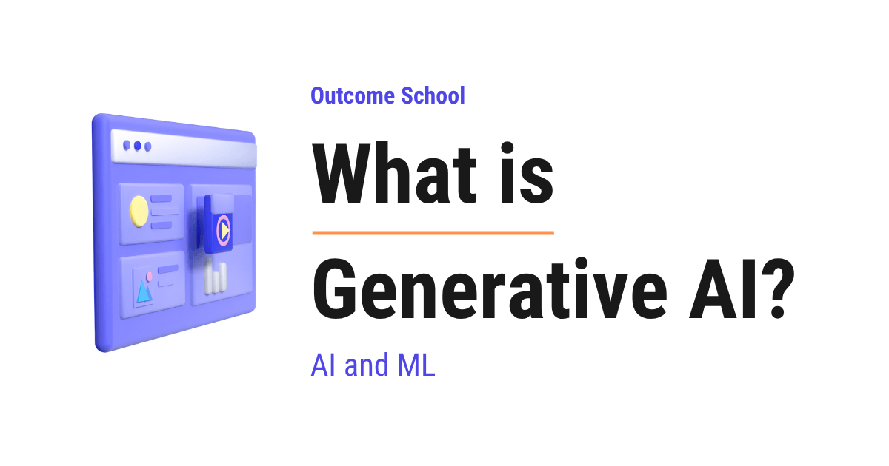
Generative AI is a type of AI that can create new things, like text, images, audio, video, and code, that did not exist before.
In this blog, we will learn about Generative AI. We will understand what the word "generate" actually means, how Generative AI is different from the older AI, how it learns from a huge amount of examples, how it creates something completely new, where we use it every day, and the limitations we must know.
We will cover the following:
- What is Generative AI?
- Generative AI = Generative + AI
- What does "generate" mean here?
- How is Generative AI different from the old AI?
- How does Generative AI learn?
- How does Generative AI actually create something new?
- What can Generative AI create?
- What is a model in Generative AI?
- The complete flow of Generative AI
- Where do we use Generative AI every day?
- The limitations we must know
- Summary
Let's get started.
What is Generative AI?
Generative AI is a type of artificial intelligence that can create new things, like text, images, audio, video, and code.
Let's say we ask a computer, "Write me a short poem about the rain." A few years back, a normal computer could not do this. It could search for a poem that someone else had already written, but it could not write a fresh new poem on its own.
Now, things have changed. Today, we can ask, and the computer writes a brand new poem in seconds. Nobody wrote that exact poem before. The computer created it for us right now.
That power to create something new is what we call Generative AI.
Generative AI = Generative + AI
The best way to understand this term is to break it into two parts.
Generative: This word comes from "generate", which means to create or to produce something new.
AI: This is short for Artificial Intelligence. It means making a computer do tasks that normally need human intelligence, like understanding language, seeing pictures, or making decisions.
So, when we join both parts:
Generative AI = An artificial intelligence that can create new content on its own.
In simple words, it can produce fresh text, images, sound, and more, just like a human creator would.
What does "generate" mean here?
This is the most important word, so let's be very clear about it.
To generate means to create something that did not exist before.
Let's say we have a calculator. We type 2 + 2, and it gives 4. This is not generating. The calculator just follows a fixed rule. The answer is always the same, and it is not new.
Now, let's say we ask Generative AI to "draw a cat riding a bicycle on the moon." No such picture existed before. The AI creates that picture, pixel by pixel, just for us. This is generating.
So, the key idea is this. Generative AI does not copy and paste an old answer. It creates a new one.
How is Generative AI different from the old AI?
Before Generative AI became popular, we already had AI. But that older AI mostly did one job. It looked at something and gave a label or a decision.
Let's understand this with an example. The old AI was very good at answering questions like these:
- Is this email spam or not spam?
- Is there a cat in this photo or not?
- Is this review positive or negative?
Here, we can notice one thing. The old AI only chooses from options that already exist. It does not create anything new. We can call this kind of AI "the AI that decides."
Generative AI is different. It does not just decide. It creates. We can call it "the AI that creates."
Let me tabulate the difference between the two for your better understanding so that the whole picture becomes clear.
| Old AI (the AI that decides) | Generative AI (the AI that creates) |
|---|---|
| Looks at input and picks a label | Looks at input and produces new content |
| "Is this a cat or a dog?" | "Draw me a new cat." |
| Chooses from fixed options | Creates something that did not exist before |
| Output is a decision | Output is fresh text, image, audio, or video |
We can also picture this difference like below:
Old AI (decides) Generative AI (creates)
Photo of an animal Text: "a cat on the moon"
| |
v v
+-----------+ +-----------+
| AI | | AI |
+-----------+ +-----------+
| |
v v
"It is a cat" A brand new picture
(a label) of a cat on the moon
Here, we can see the clear difference. On the left, the AI only puts a label. On the right, the AI creates a whole new picture.
Both kinds are built on Machine Learning, and we have a detailed blog on What is Machine Learning? that explains how a machine learns from data in the first place.
Now that we know what Generative AI does, the next question is: how does it learn to do this? Let's understand it.
How does Generative AI learn?
Generative AI learns by looking at a huge amount of examples. This is the heart of everything, so let's go slowly.
Let's say we want to teach a child to write stories. We would let the child read thousands of storybooks. After reading so many stories, the child starts to understand how a story works. The child learns which words go together, how a sentence flows, and how a story begins and ends.
Generative AI learns in the same way. We show it a massive amount of examples. For a text AI, we show it a large part of the writing available on the internet, like books, articles, and websites. It reads all of this during a stage that we call training.
During training, the AI is not memorizing the text word for word. Instead, it is learning the patterns. It learns which words usually come after which words. It learns how ideas connect. It learns the style and the structure of language.
So, after training, the AI has learned the deep patterns of language. Now, it can use these patterns to create new sentences on its own.
Note: The same idea works for images. To create images, the AI is trained on a huge collection of pictures along with their descriptions. It learns what a "cat", a "bicycle", and the "moon" look like. Later, it can mix these learned patterns to draw a cat riding a bicycle on the moon, even though it never saw that exact picture before.
How does Generative AI actually create something new?
Now, this is the most magical part. Let's understand how a text Generative AI writes a sentence.
The secret is surprisingly simple. The AI predicts the next word, again and again. Inside the model, this writing job is done by the Decoder.
Let's say we give it the starting words, "The sky is". The AI now thinks, "What word usually comes next?" From all its training, it knows that "blue" is a very likely next word. So, it adds "blue".
Now the sentence is "The sky is blue". The AI again asks, "What comes next?" Now it adds "and". Then it asks again, and adds "clear". It keeps doing this, one word at a time, until the sentence is complete.
We can picture this step by step like below:
Step 1: "The sky is" -> predict next word -> "blue"
Step 2: "The sky is blue" -> predict next word -> "and"
Step 3: "The sky is blue and" -> predict next word -> "clear"
Step 4: "The sky is blue and clear" -> and so on...
Here, we can see the beautiful trick. The AI never writes a whole paragraph in one shot. It writes one word, then looks at everything so far, then writes the next word. It repeats this until the full answer is ready.
So, a long and smart answer is really just the AI predicting the next word, over and over, very fast. And whether it plays safe with "blue" or takes a chance on a surprising word is controlled by a knob called Temperature, along with two more settings called Top-k and Top-p.
This way of creating, one word at a time, is called autoregressive generation, and we have a detailed blog on Autoregressive Models that explains it step by step.
This is how Generative AI creates new text. It creates images, audio, and video in a similar spirit, by using the patterns it learned during training, just with different methods for each type of content.
What can Generative AI create?
Generative AI is not limited to text. It can create many kinds of content. Let's see a few.
- Text: It can write emails, stories, articles, answers, and summaries.
- Images: It can create paintings, photos, logos, and art from a simple description.
- Audio: It can create music, and it can create a human-like voice that reads text aloud.
- Video: It can create short video clips from a text description.
- Code: It can write computer programs and help developers build software.
So, whatever kind of content a human can create, Generative AI is learning to create it too.
What is a model in Generative AI?
We keep saying "the AI", but let's give it a proper name. The trained brain of Generative AI is called a model.
A model is the final result of all that training. Think of it as a brain that has already read a huge amount of data and has learned the patterns inside it. When we chat with a Generative AI tool, we are really talking to this trained model.
When a model works mainly with text and language, we call it a Large Language Model, or LLM for short.
- Large: It has learned from a very large amount of text, and it has a very large number of internal settings that store what it learned.
- Language: Its main job is to understand and create human language.
- Model: It is the trained brain that holds all this learned knowledge.
So, when we hear names like the models behind ChatGPT, Claude, or Gemini, these are all Large Language Models. They are the trained brains that power the Generative AI tools we use.
The complete flow of Generative AI
Now that we have learned about all the parts, let's put the whole flow together in simple steps.
- First, we collect a huge amount of examples, like text or images. This is the data.
- Then, the AI reads all this data and learns the patterns inside it. This is training.
- After that, the trained brain is ready. We call this brain the model.
- Then, we give the model a request in plain words. This request is called a prompt.
- Finally, the model uses its learned patterns to create a brand new answer for us.
We can picture the whole flow like below:
Huge amount of data (text, images, code)
|
| the AI reads and learns the patterns
v
Training
|
v
Trained model (the brain that has learned)
|
| we give a prompt: "Write a poem about rain"
v
New content (a fresh poem, created just now)
Here, we can see the full journey. First, the model learns from data. Then, we give it a prompt. Finally, it creates something new for us.
Where do we use Generative AI every day?
Let's see a few common places.
- Chat assistants: We ask a question in plain English and get a helpful answer.
- Writing help: It helps us write emails, fix our grammar, and summarize long text.
- Image creation: We type a description, and it draws a picture for us.
- Coding help: It helps developers write and fix code faster.
- Customer support: Many company chatbots now use Generative AI to answer our questions.
It is helping millions of people every single day.
The limitations we must know
Generative AI is powerful, but it is not perfect. We must understand its limits so that we use it wisely.
- It can be wrong. The AI predicts what sounds right, but sometimes it makes up facts that are not true. This is called a hallucination. So, we must always check important information.
- It does not truly understand. It is very good at patterns, but it does not "know" things the way a human does. It has no real feelings or life experience.
- It learns from human data. Since it learns from what humans wrote, it can also pick up the mistakes and biases present in that data.
- It needs a good prompt. The quality of the answer depends a lot on how clearly we ask. A clear prompt gives a better result.
So, Generative AI is a very helpful tool, but we must use it as a smart helper, not as a source of final truth.
Summary
Let's quickly recap what we have learned.
- Generative AI is a type of AI that creates new content, like text, images, audio, video, and code.
- The word "generate" means to create something that did not exist before.
- The old AI mostly decided or labeled things. Generative AI creates new things.
- It learns by reading a huge amount of examples and understanding the patterns inside them.
- A text Generative AI creates a sentence by predicting the next word, again and again.
- The trained brain is called a model, and a text model is called a Large Language Model.
- It is powerful, but it can be wrong, so we must always check important facts.
This is how Generative AI works. It reads a huge amount of data, learns the patterns, and then uses those patterns to create something fresh and new for us.
Now, we must have understood what Generative AI is.
Frequently Asked Questions
Does Generative AI copy answers from its training data?
No. Generative AI does not copy and paste an old answer, and during training, it is not memorizing text word for word. It learns the patterns, like which words usually come after which words and how ideas connect. Then, it uses these patterns to create new content that did not exist before.
Is an LLM the same as Generative AI?
Not exactly. Generative AI is the broad type of AI that creates new text, images, audio, video, and code. A Large Language Model, or LLM, is a trained model that works mainly with text and language. LLMs are the trained brains that power many of the Generative AI tools we use.
Is ChatGPT an example of Generative AI?
Yes. The models behind ChatGPT, Claude, and Gemini are all Large Language Models, and they power Generative AI tools. When we ask such a tool a question in plain English, it creates a brand new answer by predicting the next word again and again, using the patterns it learned during training.
What decides whether Generative AI picks a safe word or a surprising one?
A setting called Temperature controls this, along with two more settings called Top-k and Top-p. When the AI predicts the next word, it can play safe with the most likely word or take a chance on a more surprising one. These settings decide which way it leans.
Is Generative AI built on Machine Learning?
Yes. Both the old AI that decides and Generative AI that creates are built on Machine Learning. Generative AI learns by looking at a huge amount of examples during a stage called training. The trained result is called a model, and it uses the learned patterns to create new content.
Lesson 3.2
What are Autoregressive Models?

An Autoregressive Model is a model that generates one piece at a time, like one word, by predicting the next piece from everything it has generated so far. This is how GPT-style models write text.
In this blog, we will learn about Autoregressive Models, the family of models that generate one piece at a time by predicting the next step from the past.
We will cover the following:
- What is an Autoregressive Model?
- The Chain Rule of Probability
- The Generation Loop
- Step-by-Step Numeric Example
- Why GPT-style Models are Autoregressive
- Why Autoregressive Models Need Causal Masking
- The Connection with KV Cache
- Autoregressive vs Non-Autoregressive Generation
- Popular Autoregressive Models we should know
- Pros and Cons of Autoregressive Models
- Quick Summary
Let's get started.
What is an Autoregressive Model?
Before we go further, let's quickly understand what a token is. A token is a small piece of text that the model reads and writes - it can be a word, a part of a word, or even a single character. For example, the sentence "I love AI" can be split into the three tokens "I", "love", and "AI". We will use the word "token" all over this blog.
Now, let's decode the name itself.
Autoregressive = Auto (self) + Regressive (predicting from past values)
- Auto means self. The model uses its own previous outputs as the next input.
- Regressive means predicting a value from past values. In simple words, we look at history, and we predict the next number. A simple example: predicting tomorrow's temperature from the temperatures of the last
7days.
So, putting them together:
Autoregressive Model = A model that predicts the next token from all the previous tokens, one step at a time.
Means, the model looks at the past, and from the past it predicts the next step. Then it adds that new step to the past, and predicts the next one again. This loop continues until the model is done.
Let's say we have the sentence:
"I love AI"
An autoregressive language model will:
- See
"I"and predict"love". - See
"I love"and predict"AI". - See
"I love AI"and predict the next token (often an end-of-sentence marker).
Here, we can see the pattern. At every step, the model uses the full history so far to guess the next token. That is the heart of the idea.
This is exactly how ChatGPT writes a sentence, how WaveNet generates audio samples, and how PixelCNN paints an image pixel by pixel.
Now, the question is: how do we write this idea in a precise mathematical form? The answer is: the chain rule of probability.
The Chain Rule of Probability
The autoregressive idea has a clean mathematical form. We use the chain rule of probability.
The chain rule of probability says that the joint probability (the probability of all the tokens occurring together as a sequence) of a full sequence can be written as a product of conditional probabilities, like below:
P(x_1, x_2, ..., x_n) = P(x_1) * P(x_2 | x_1) * P(x_3 | x_1, x_2) * ... * P(x_n | x_1, x_2, ..., x_{n-1})
Here:
x_1, x_2, ..., x_nare the tokens in the sequence.P(x_1, x_2, ..., x_n)is the joint probability of the whole sequence.P(x_i | x_1, ..., x_{i-1})is the conditional probability (probability under a condition) of thei-th token given all the previous tokens.*means multiplication.|means given. SoP(B | A)reads as "the probability of B given A".
The idea is simple. To find the probability of a full sentence, we multiply the probability of each word, conditioned on every word that came before it.
Let's put this into perspective with a small example. Suppose our sentence is "I love AI". Then:
P("I love AI") = P("I") * P("love" | "I") * P("AI" | "I", "love")
Here, we can see that every term on the right side asks the same question: given everything I have seen so far, what is the probability of the next word?
This is exactly the question an autoregressive model is trained to answer.
Now, let's see what this loop looks like in practice.
The Generation Loop
Autoregressive generation is a loop. The same step repeats again and again, with the past growing by one token each time.
Let's see the loop as a simple diagram:
+---------------------+
| Past tokens so far |
+---------------------+
|
v
+---------------------+
| Autoregressive |
| Model |
+---------------------+
|
v
+---------------------+
| Probabilities for |
| the next token |
+---------------------+
|
v
+---------------------+
| Sample / pick one |
| next token |
+---------------------+
|
v
+---------------------+
| Append to past |
| Repeat the loop |
+---------------------+
Here, we can see the four moves of one generation step:
- Feed the past tokens into the model.
- The model gives us a probability for every possible next token.
- We pick one token from those probabilities (this is called sampling).
- We append that token to the past, and we go back to step 1.
The loop runs until we hit an end-of-sentence marker, or until we reach a maximum length we set.
In pseudocode, the loop looks like below:
past = [start_token]
while not done:
probs = model(past) # probabilities for the next token
next_token = sample(probs) # pick one token
past = past + [next_token] # append
if next_token == end_token:
done = True
output = past
Here, we have a tight loop. Each pass through the loop produces exactly one token. So, to generate 100 tokens, the model runs 100 times.
This is the price we pay for being autoregressive. The output is high quality, because every new token is conditioned on the full past, but the generation is slow, because we cannot parallelize across tokens. I will come back to this trade-off later in the blog.
This one-token-at-a-time generation is also what makes token streaming possible - the moment each token is produced, an app can push it to the user instead of waiting for the whole reply. We have a blog on how Token Streaming works that explains this step by step.
Now, let's run this loop on real numbers.
Step-by-Step Numeric Example
The best way to learn this is by taking an example. Let's say our model has a tiny vocabulary of just 5 words:
vocab = ["I", "love", "AI", "code", "<end>"]
We start the generation with the first token "I", and we will run the loop for a few steps.
I am using simple round numbers here for the sake of understanding. Real models work with vocabularies of 50,000+ tokens, but the idea is exactly the same.
Step 1: Predict the next token after "I".
We give the past ["I"] to the model. The model returns a probability for every word in the vocabulary, like below:
P(next | "I") =
"I" -> 0.05
"love" -> 0.60
"AI" -> 0.15
"code" -> 0.15
"<end>" -> 0.05
Here, we can see that all probabilities add up to 1.0 (100%). The model thinks "love" is the most likely next word, with P("love" | "I") = 0.60.
Now, we sample one token from this distribution. Sampling can be as simple as picking the highest-probability token (called greedy decoding), or it can be more random (called temperature sampling). For this example, we go with greedy and pick the highest. We pick "love". Our past becomes ["I", "love"].
Step 2: Predict the next token after "I love".
We give the past ["I", "love"] to the model. The model now uses both "I" and "love" to decide:
P(next | "I", "love") =
"I" -> 0.05
"love" -> 0.05
"AI" -> 0.70
"code" -> 0.15
"<end>" -> 0.05
Here, the probability of "AI" jumps to 0.70. Because the model has now seen "love" as well, and "I love AI" is a common sentence, so the model leans heavily towards "AI".
We sample, and we pick "AI". Our past becomes ["I", "love", "AI"].
Step 3: Predict the next token after "I love AI".
We give the past ["I", "love", "AI"] to the model:
P(next | "I", "love", "AI") =
"I" -> 0.05
"love" -> 0.05
"AI" -> 0.05
"code" -> 0.05
"<end>" -> 0.80
Here, the model thinks the sentence is complete, and <end> has the highest probability of 0.80.
We sample, and we pick <end>. The loop stops.
Step 4: Compute the probability of the full sentence.
Using the chain rule of probability:
P("I love AI <end>")
= P("I") * P("love" | "I") * P("AI" | "I", "love") * P("<end>" | "I", "love", "AI")
Let's say P("I") = 0.20 (the probability of starting with "I"). Then:
P("I love AI <end>") = 0.20 * 0.60 * 0.70 * 0.80 = 0.0672
Here, we can see that the probability of the full sentence is just the product of each step's probability. This is exactly what the chain rule of probability told us at the start. The model never computes the full joint probability in one shot. It builds it up, one token at a time. This is the essence of an autoregressive model.
Now, let's connect this to the model family we hear about every day.
Why GPT-style Models are Autoregressive
GPT (Generative Pre-trained Transformer) is autoregressive by design. The first word, Generative, is the key. The language models like Claude, Gemini, and LLaMA - they are all autoregressive, and they are all decoder-only Transformers.
A GPT-style model is trained on one simple task: given the past tokens, predict the next token.
That is it. Just next-token prediction, again and again, on huge amounts of text.
So, when we ask ChatGPT a question, here is what happens at a high level:
- Our prompt is the starting
past. - The model predicts the next token.
- The new token is appended to the past.
- The model predicts the next token again.
- This repeats until the model decides to stop.
This is the autoregressive loop we just saw. GPT is autoregressive by design. That is why GPT-style models can keep writing as long as we let them - they always have a past to look at, and they always know how to predict one more token from it.
If we want to go deeper into how the Transformer works inside GPT-style models, we can read Decoding Transformer Architecture.
Now, here is a natural question. If the model only looks at the past, how do we make sure it does not accidentally peek at the future during training? This is where causal masking comes into the picture.
Why Autoregressive Models Need Causal Masking
During training, an autoregressive model sees the full sentence at once, but it must still predict each token using only the tokens that came before it. The model must never peek at the future tokens. If it does, training is broken - the model just copies the answer instead of learning to predict it.
So, here comes Causal Masking to the rescue. Causal masking is a simple trick inside the attention layer that hides future tokens from each position.
Let's say we have the sentence "I love AI". During training:
- When the model is predicting the token at position
1("love"), it can look at position0("I") only. - When the model is predicting the token at position
2("AI"), it can look at positions0and1("I","love"). - And so on.
This rule is enforced inside attention by setting the attention scores for future positions to a very small number (negative infinity), so after softmax their attention weight becomes 0. Here, softmax is a function that turns a list of raw scores into probabilities that add up to 1.0. When we feed it negative infinity for a position, that position gets a probability of 0, which means it is fully ignored.
The mask looks like below for a 3-token sentence:
"I" "love" "AI"
"I" [ 1 0 0 ]
"love" [ 1 1 0 ]
"AI" [ 1 1 1 ]
Here, 1 means "allowed to look", and 0 means "blocked". The first row is for the token "I" - it can only look at itself. The second row is for "love" - it can look at "I" and itself. The third row is for "AI" - it can look at all three. The upper triangle is full of 0s, which is why this is called a triangular mask.
Means, the model is forced to behave autoregressively, even when it sees the whole sentence at once during training.
Note: During training, the model sees the full sentence in one shot, and causal masking enforces the autoregressive rule. During inference (generation), the model produces one token at a time, so the rule is enforced naturally - there is no future token to peek at. Same model, two slightly different behaviors.
We have a detailed blog on Causal Masking in Attention that explains this in depth.
Now, let's see another important consequence of being autoregressive.
The Connection with KV Cache
Autoregressive generation is slow because the model runs once per token. For a 1,000-token output, the model runs 1,000 times.
And, here is the painful part. At every step, the model looks at the full past. If the past has 999 tokens, the attention layer must compute Keys and Values for all 999 tokens, plus the new one. This is repeated work, because we have already computed those Keys and Values in the previous steps.
So, here comes the KV Cache into the picture. The idea is simple: store the Keys and Values from previous steps, and reuse them in the next step. We only compute the Key and Value for the new token, not for all the old ones again.
This stored memory is called the KV Cache - where K stands for Key and V stands for Value. We have a detailed blog on KV Cache in LLMs that explains this in depth.
Let's put this into perspective with real numbers. Suppose we are generating 1,000 tokens. Without KV Cache, at step t we recompute Keys and Values for all t past tokens. Across all 1,000 steps, that adds up to roughly 1 + 2 + 3 + ... + 1000 = 500,500 units of Key/Value work. With KV Cache, at every step we compute the Key and Value for only the new token, so total Key/Value work is roughly 1,000 units.
Means, KV Cache turns roughly 500,500 units of redundant Key/Value work into roughly 1,000 units. That is a huge speedup, and it exists because the model is autoregressive.
I am sure we can now see why KV Cache exists. It exists because autoregressive generation has a very specific shape - the past does not change between steps, only one new token is added. So, we cache the past.
Now, let's compare autoregressive generation with the other side of the coin.
Autoregressive vs Non-Autoregressive Generation
Autoregressive generation is sequential. We produce one token, then the next, then the next. Each token depends on all the previous tokens.
Non-autoregressive generation is parallel. The model tries to produce many tokens at the same time, in one shot, without waiting for the previous ones.
Let me tabulate the differences between Autoregressive and Non-Autoregressive generation for your better understanding so that you can decide which one to use based on your use case.
| Aspect | Autoregressive | Non-Autoregressive |
|---|---|---|
| Generation order | One token at a time, left to right | Many tokens at once, in parallel |
| Each token depends on | All previous tokens | Limited or no dependence on other generated tokens |
| Speed | Slow (one model run per token) | Fast (one model run for many tokens) |
| Quality | Generally higher, fluent text | Generally lower, can produce repeated or off-topic tokens |
| Training | Simple - just next-token prediction | More complex objectives |
| Examples | GPT, WaveNet, PixelCNN | Some translation models, parallel decoders |
A Variational Autoencoder is a classic example of a non-autoregressive generative model - it produces a whole output in one shot by sampling from a smooth latent space, rather than one piece at a time. A Generative Adversarial Network (GAN) is another non-autoregressive example - two networks compete to produce a whole image at once, again rather than one piece at a time.
For text specifically, the leading non-autoregressive approach is the Diffusion Language Model, which fills and refines the whole sentence in parallel instead of one token at a time. We have a blog on how Diffusion Language Models (DLMs) work that covers this end to end.
Now, let's see where autoregressive models are used.
Popular Autoregressive Models we should know
Autoregressive models are not just for text. The same one-step-at-a-time idea applies to any kind of sequence. Let's see a few popular examples.
1. Language models (GPT family). The most famous example. The model generates text one token at a time, conditioned on the prompt and everything generated so far.
2. PixelCNN (image generation). The model generates an image one pixel at a time. Each new pixel is predicted from the pixels above and to the left of it. The image is the sequence.
3. WaveNet (audio generation). The model generates raw audio one sample at a time. Audio sampled at 16,000 samples per second means the model runs 16,000 times to produce just 1 second of audio. Slow, but very high quality.
4. Music generation models. Many music models generate notes one at a time, conditioned on all the previous notes, just like words in a sentence.
Here, we can notice the common pattern. Whatever the data is - text, pixels, audio samples, notes - if we can lay it out as a sequence, we can apply the autoregressive idea on top of it.
Now, let's look at the trade-offs.
Pros and Cons of Autoregressive Models
Let's understand what we gain and what we lose by being autoregressive.
On the good side, the output is coherent and fluent, because the model uses the full past at every step. The training objective is also as simple as it gets - just predict the next token. The length is flexible too. The model can keep generating as long as we want, and we control when to stop. One more big win: a single autoregressive language model can do translation, summarization, question answering, code generation, and many other tasks. One model, many jobs.
On the painful side, generation is slow. We must produce tokens one by one. To generate 100 tokens, the model runs 100 times. The wait time grows with output length too. A 1,000-token answer takes roughly 10x longer to generate than a 100-token answer. And then there is the error compounding problem. A bad early token can hurt the whole output, because every later token is conditioned on it. If token 5 is wrong, tokens 6, 7, 8, and so on are all conditioned on a wrong past. We also cannot parallelize generation. Token t+1 cannot be computed before token t is known.
To soften these problems, we use techniques like KV Cache, Speculative Decoding, and better sampling strategies. We have a detailed blog on Medusa that explains how a model can guess several of its own next tokens in one pass, and one on EAGLE that makes those guesses more accurate by drafting at the feature level. But the core trade-off - slower generation, higher quality - is built into the autoregressive idea itself.
Quick Summary
Let's recap what we have learned:
- Autoregressive Model. A model that predicts the next token using all the previous tokens, one step at a time.
- Auto + Regressive. Auto means self, regressive means predicting from past values. So the model uses its own past outputs to predict the next one.
- Chain rule of probability.
P(x_1, ..., x_n) = P(x_1) * P(x_2 | x_1) * ... * P(x_n | x_1, ..., x_{n-1}). The math behind autoregressive generation. - Generation loop. Feed the past, get probabilities, sample one token, append, repeat.
- GPT-style models. Trained purely on next-token prediction. They are autoregressive by design.
- Causal masking. Hides future tokens during training so the model is forced to be autoregressive.
- KV Cache. Caches the Keys and Values of past tokens, so each new step computes Key and Value for only the new token. For
1,000tokens, this turns roughly500,500units of redundant work into roughly1,000units. Exists because of the autoregressive shape. - Autoregressive vs Non-Autoregressive. Autoregressive is sequential and high-quality. Non-autoregressive is parallel and faster, but quality often suffers.
- Use cases. Text (GPT), images (PixelCNN), audio (WaveNet), music. Anything that can be viewed as a sequence.
- Trade-off. High quality and simple training, at the cost of slow, sequential generation.
Now, we have understood Autoregressive Models.
Frequently Asked Questions
When does an autoregressive model stop generating?
An autoregressive model stops when it produces an end-of-sentence marker, or when it reaches a maximum length we set. Until then, the loop keeps running. It feeds the past tokens in, picks one next token, appends it, and repeats.
Why do longer LLM answers take longer to generate?
The model runs once per token, so the wait time grows with the output length. To generate 100 tokens, the model runs 100 times. A 1,000-token answer takes roughly 10x longer than a 100-token answer, because token t+1 cannot be computed before token t is known.
What is greedy decoding in autoregressive models?
Greedy decoding means picking the highest-probability token at every step. It is the simplest way to sample the next token from the model's probabilities. Sampling can also be more random, which is called temperature sampling.
Can one wrong token spoil the rest of the output?
Yes. This is called the error compounding problem. Every later token is conditioned on the earlier ones, so a bad early token can hurt the whole output. If token 5 is wrong, tokens 6, 7, 8, and so on are all conditioned on a wrong past.
Lesson 3.3
Tokenization in LLMs

Tokenization in LLMs is the process of breaking text into small pieces called tokens and then converting each token into a number that the model can work with.
In this blog, we will learn about Tokenization in LLMs, the very first step where a model breaks our text into small pieces before it can understand anything. We will also see why we need it, what a token is, the different ways to break text into tokens, how Byte Pair Encoding builds a vocabulary step by step, how tokens become numbers and back into text, and where it works well and where it fails.
We will cover the following:
- What is Tokenization?
- Why do we need Tokenization?
- What is a Token?
- Approach 1: Character-level Tokenization
- Approach 2: Word-level Tokenization
- Approach 3: Subword-level Tokenization
- How does Byte Pair Encoding (BPE) work?
- Vocabulary and Token IDs
- Decoding: From Tokens back to Text
- Tokenization in action with code
- Special Tokens
- How Tokenization affects LLMs in practice
- Where it works well and where it fails
Let's get started.
What is Tokenization?
Tokenization is the process of breaking a piece of text into small pieces called tokens and then converting each token into a number.
Let's say we type the sentence "I love learning" into an LLM (Large Language Model).
We see the sentence as three words. But the model does not see it the way we see it. The model does not understand letters or words. It only understands numbers.
So, before anything else happens, the sentence is broken into small pieces like below:
"I" | " love" | " learning"
Then, each piece is converted into a number like below:
40 | 3021 | 6975
These numbers are what the model actually receives. The text never reaches the model. Only the numbers do.
Note: These numbers are just for the sake of understanding. The actual numbers depend on which tokenizer we use.
The program that does this job is called a tokenizer. Every LLM has its own tokenizer.
Why do we need Tokenization?
An LLM is a machine learning model. At its core, it does a lot of mathematics. It multiplies numbers, adds numbers, and compares numbers. Mathematics works on numbers, not on letters.
So, we have a problem. We have text, and the model needs numbers.
We need something that converts text into numbers. So, here comes the tokenizer into the picture.
But, the tokenizer has one more job. The model must have a fixed list of pieces it knows. When the model generates a reply, it picks one piece at a time from that fixed list. If the list is too big, the model becomes slow and heavy. If the list is too small, every sentence becomes a very long chain of tiny pieces.
So, the real question is: what is the right size of each piece?
We will see three approaches, one by one, and understand why the third one is used in modern LLMs.
What is a Token?
A token is the smallest unit of text that the model works with.
A token can be a whole word, a part of a word, a single character, a punctuation mark, or a word along with the space before it.
Let's see a few examples:
- "cat" is one token.
- "unbelievable" becomes three tokens: "un", "believ", "able".
- "!" is one token.
- " love" (with the space before it) is one token.
Here, we can notice that the space is attached to the word. This is how most modern tokenizers work. The space becomes part of the token that comes after it. This way, the model knows where a new word begins.
A simple rule of thumb for English: one token is roughly 4 characters, or about three-fourths of a word. So, 100 tokens is around 75 words.
Now, let's see the different ways to break text into tokens.
Approach 1: Character-level Tokenization
The simplest idea is to make every character a token.
Let's take the word "learning". The tokens will be as below:
"l" | "e" | "a" | "r" | "n" | "i" | "n" | "g"
Here, we have 8 tokens for one word.
Advantage: The list of known pieces is very small. For English, it is just the letters, the digits, and a few punctuation marks. And, the model can never face a word it does not know, because every word is made of characters.
Disadvantage: Every sentence becomes very long. A short paragraph of 100 words becomes around 500 tokens. The model has to process each one of them. And, each character carries very less meaning on its own. The letter "l" alone tells us nothing. The model has to work very hard to learn that "l", "e", "a", "r", "n" together means learn.
The issue with this approach is that the sequences become very long and each token carries very less meaning. Let's see how the next approach solve this issue.
Approach 2: Word-level Tokenization
The next idea is to make every word a token. We simply split the text at spaces.
Let's take the sentence "I love learning". The tokens will be as below:
"I" | "love" | "learning"
Here, we have 3 tokens for three words.
Advantage: Each token carries full meaning. The sequences are short.
Disadvantage: The list of known words becomes huge. English alone has hundreds of thousands of words. Add names of people, names of places, other languages, code, and new words that appear every day. The list never ends.
What happens when the model sees a word that is not in the list?
Let's say the list does not have the word "tokenization". The tokenizer has no choice. It replaces the word with a special token called unknown, usually written as <UNK>. The model sees <UNK> and has no idea what we said.
One more thing to notice. The words "learn", "learning", "learned", and "learner" are all separate tokens in this approach. The model does not know that they are related. It has to learn each one from scratch.
The issue with this approach is the huge list of words and the unknown word problem. Let's see how the next approach solve this issue.
Approach 3: Subword-level Tokenization
Now, we take the middle path.
The idea is simple. Common words stay as one token. Rare words get broken into smaller pieces that are common.
Let's see with an example:
- "the" is very common, so it stays as one token: "the"
- "learning" is common, so it stays as one token: "learning"
- "tokenization" is rare, so it breaks into two: "token", "ization"
- "unbelievable" is rare, so it breaks into three: "un", "believ", "able"
Here, we can see that the pieces are meaningful. "token" is a real piece. "ization" is a real piece. Means, the model can learn that "ization" usually means the act of doing something, and reuse that learning for "organization", "civilization", and many more. Hence, the model learns faster.
Advantage: The list of known pieces is manageable, usually between 50,000 and 200,000. There is no unknown word problem, because any rare word can be broken down until we reach pieces we know, in the worst case single characters. And, related words share pieces, so the model does not have to learn each one from scratch.
Disadvantage: Sometimes a word breaks at a place that does not look natural to us.
This is what almost every modern LLM uses.
Let me tabulate the differences between the three approaches for your better understanding.
| Character-level | Word-level | Subword-level | |
|---|---|---|---|
| Size of the known list | Very small | Very large | Medium |
| Tokens per sentence | Very many | Few | Few |
| Unknown word problem | Never | Often | Never |
| Meaning per token | Very less | Full | Good |
| Used in modern LLMs | No | No | Yes |
Now, the question is, how does the tokenizer decide which pieces are common and which are rare? Who makes that list?
So, here comes the Byte Pair Encoding to the rescue.
How does Byte Pair Encoding (BPE) work?
Byte Pair Encoding, or BPE, is an algorithm that builds the list of tokens by starting from single characters and repeatedly merging the pair of pieces that appears together most often.
In simple words, BPE looks at a huge amount of text, finds two pieces that sit next to each other most often, glues them into one new piece, and repeats.
The best way to learn this is by taking an example.
Let's say our training text has only three words, appearing with the following counts:
- "hug" appears 10 times
- "pug" appears 5 times
- "hugs" appears 5 times
Step 0: Split every word into characters.
h u g (10 times)
p u g (5 times)
h u g s (5 times)
Our starting list of tokens: h, u, g, p, s. That is 5 tokens.
Step 1: Count every pair. A pair means two pieces that sit next to each other inside a word.
- "h" + "u" appears 10 + 5 = 15 times
- "u" + "g" appears 10 + 5 + 5 = 20 times
- "p" + "u" appears 5 times
- "g" + "s" appears 5 times
The most frequent pair is "u" + "g" with 20. So, we merge them into a new token ug.
Our list of tokens: h, u, g, p, s, ug. That is 6 tokens.
Our words now look like below:
h ug (10 times)
p ug (5 times)
h ug s (5 times)
Step 2: Count the pairs again.
- "h" + "ug" appears 10 + 5 = 15 times
- "p" + "ug" appears 5 times
- "ug" + "s" appears 5 times
The most frequent pair is "h" + "ug" with 15. So, we merge them into a new token hug.
Our list of tokens: h, u, g, p, s, ug, hug. That is 7 tokens.
Our words now look like below:
hug (10 times)
p ug (5 times)
hug s (5 times)
Step 3: Count the pairs again.
- "p" + "ug" appears 5 times
- "hug" + "s" appears 5 times
Both are equal. In such a case, the tokenizer follows a fixed rule to pick one. Let's merge "p" + "ug" into pug.
Our list of tokens: h, u, g, p, s, ug, hug, pug. That is 8 tokens.
We keep doing this until our list reaches the size we want. In real tokenizers, that size is decided beforehand, for example 100,000 tokens.
Here, we have done three merges. Every merge is saved as a rule, in order:
Rule 1: u + g -> ug
Rule 2: h + ug -> hug
Rule 3: p + ug -> pug
Now, when a new piece of text comes in, the tokenizer does not count anything. It simply splits the text into characters and applies these rules in the same order.
Let's say the new text is "pugs". The tokenizer works as below:
- Start:
p,u,g,s - Apply Rule 1:
p,ug,s - Apply Rule 2: nothing to merge, because "h" + "ug" is not here
- Apply Rule 3:
pug,s - Final tokens:
pug,s
And, the word "pugs" never appeared in our training text. Still, we got meaningful tokens.
Note: In many modern tokenizers, like the ones used by GPT models, the starting list is not the letters. It is all 256 possible byte values. Every character in every language, every emoji, and every symbol is stored as bytes. So, the tokenizer can never face something unknown. This variant is called byte-level BPE.
One more thing to notice. The tokenizer is trained separately, before the LLM is trained. Once the list of tokens is ready, it is frozen. The LLM is then trained using that frozen list. The LLM never changes the tokenizer.
Vocabulary and Token IDs
The vocabulary is the complete list of all tokens that the tokenizer knows.
Each token in the vocabulary gets a unique number. This number is called the Token ID.
Think of it as a dictionary where every entry has a serial number. The tokenizer looks up the piece, finds the serial number, and hands over the number to the model.
For our small example, the vocabulary looks like below:
| Token | Token ID |
|---|---|
| h | 0 |
| u | 1 |
| g | 2 |
| p | 3 |
| s | 4 |
| ug | 5 |
| hug | 6 |
| pug | 7 |
So, the text "pugs" becomes tokens pug, s, and then Token IDs 7, 4.
This is the complete journey:
Text -> Tokens -> Token IDs
"pugs" -> ["pug", "s"] -> [7, 4]
Here, [7, 4] is what goes into the LLM.
Now, why does the vocabulary size matter? When the LLM generates a reply, at every step it picks one token from this vocabulary. So, a vocabulary of 100,000 tokens means the model chooses from 100,000 options at every step. Bigger vocabulary means fewer tokens per sentence but a heavier model. Smaller vocabulary means a lighter model but longer sequences. Real models pick a size somewhere in between, based on their use case.
Note: Inside the model, each Token ID is used to look up a long list of numbers called an embedding. That is where the real understanding begins, and it is a topic for another blog. For now, we just need to know that Tokenization is the step that comes before it.
Decoding: From Tokens back to Text
Now, let's see how text comes out of the model.
The LLM does not produce text. It produces Token IDs, one at a time.
Let's say the model produces 6, 4. The tokenizer looks up the vocabulary in reverse:
6ishug4iss
Then, it joins them: "hugs".
This reverse step is called decoding. It is the exact opposite of what we did earlier.
Token IDs -> Tokens -> Text
[6, 4] -> ["hug", "s"] -> "hugs"
This is why, when we watch an LLM type its answer on the screen, sometimes we see half a word appear first and then the rest. That is a token boundary. The model produced one token, the tokenizer decoded it, and it was shown to us.
Tokenization in action with code
Let's see the whole thing in action. We will use tiktoken, which is OpenAI's library that contains the tokenizers used by OpenAI models.
import tiktoken
encoding = tiktoken.get_encoding("cl100k_base")
token_ids = encoding.encode("I love learning")
print(token_ids)
text = encoding.decode(token_ids)
print(text)
It will print something like the following:
[40, 3021, 6975]
I love learning
Here, we have used cl100k_base, which is the name of one tokenizer with around 100,000 tokens in its vocabulary. The encode function converts our text into Token IDs. The decode function converts the Token IDs back into text. We got the exact same sentence back.
Now, let's see which piece of text each Token ID stands for.
for token_id in token_ids:
print(token_id, "->", "[" + encoding.decode([token_id]) + "]")
It will print the following:
40 -> [I]
3021 -> [ love]
6975 -> [ learning]
Here, we can see that the space is attached to the word, exactly as we discussed earlier. " love" is one token and " learning" is one token.
Note: The exact Token IDs depend on the tokenizer. A different model with a different tokenizer will give different numbers for the same sentence.
Special Tokens
Along with the tokens that come from text, the vocabulary has a few special tokens. These are not words. They are signals.
Few important ones:
- End of text: tells the model that the text has ended. Usually written as
<|endoftext|>or<eos>. When the model produces this token, it stops generating. - Beginning of text: marks where the text starts. Usually written as
<bos>. - Padding: a filler token used to make many inputs the same length when the model processes them together.
- Chat markers: tokens that mark where the user's message begins and ends, and where the assistant's reply begins. This is how a chat model knows who said what.
Here, we can notice that a special token is never produced by breaking normal text. It is added on purpose by the tokenizer or by the system around the model.
How Tokenization affects LLMs in practice
Tokenization happens before the model, and the model can never look inside a token. This one fact explains many strange things that LLMs do.
Counting letters: Let's say we ask, how many times does the letter "r" appear in "strawberry"? The tokenizer breaks the word into something like "str", "aw", "berry". The model sees three Token IDs. It never sees the individual letters. So, it has to guess from memory how many "r" are inside those pieces. This is why LLMs sometimes get such questions wrong.
Math on numbers: The number "12345" is split into pieces like "123" and "45". The model does not see five digits. It sees two tokens. Doing addition on such pieces is much harder than doing it digit by digit.
Cost and limits: Every LLM has a limit on how many tokens it can read at once. This is called the context window. And, the pricing of an LLM is also per token. So, the number of tokens decides both what fits and what it costs.
Other languages: Most tokenizers are trained on text that is mostly English. So, English words get compact tokens. A sentence in Hindi, Tamil, or Japanese is broken into many more small pieces. The same sentence can take several times more tokens in these languages. This means it costs more and fills the context window faster.
Code: Spaces and indentation are tokens too. Four spaces of indentation can become one token or four tokens depending on the tokenizer. This affects how well a model reads and writes code.
Where it works well and where it fails
Let me summarize where subword tokenization works well:
- It handles any input without an unknown word problem.
- It keeps sequences short for common text.
- It shares meaningful pieces across related words, so the model learns faster.
- It works for text, code, and many languages with one single vocabulary.
And where it fails:
- Tasks that need to see individual letters, like counting letters or reversing a word.
- Math on long numbers, because digits get grouped in unnatural ways.
- Languages that were less present in the training text, because they get more tokens, which means higher cost and less room in the context window.
- Any word broken at a strange place can confuse the model, because the pieces do not carry the meaning we expect.
Now we must have understood what Tokenization in LLMs is, how BPE builds the vocabulary, how text becomes Token IDs and back, and where it works well and where it fails.
Frequently Asked Questions
Do all LLMs use the same tokenizer?
No. Every LLM has its own tokenizer. A different model with a different tokenizer will give different Token IDs for the same sentence. So, the exact numbers we get always depend on which tokenizer we use.
Does the LLM change its tokenizer during training?
No. The tokenizer is trained separately, before the LLM is trained. Once the list of tokens is ready, it is frozen, and the LLM is then trained using that frozen list. The LLM never changes the tokenizer.
How many words are 100 tokens?
For English, 100 tokens is around 75 words. A simple rule of thumb is that one token is roughly 4 characters, or about three-fourths of a word.
Why do LLMs struggle to count letters in a word?
Because the model never sees the individual letters. A word like "strawberry" is broken into pieces like "str", "aw", "berry", and the model sees only their Token IDs. So, it has to guess from memory how many times a letter appears inside those pieces.
Why does text in Hindi or Japanese use more tokens than English?
Most tokenizers are trained on text that is mostly English, so English words get compact tokens. A sentence in Hindi, Tamil, or Japanese is broken into many more small pieces. This means it costs more and fills the context window faster.
Lesson 3.4
What is Byte Pair Encoding (BPE) in LLMs?
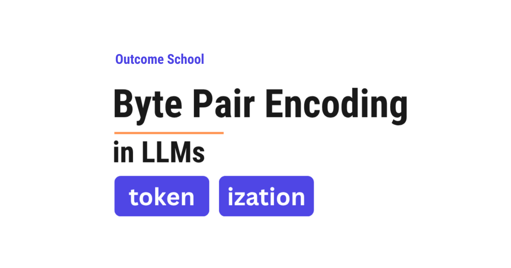
BPE (Byte Pair Encoding) is the tokenization algorithm used by most modern Large Language Models (LLMs). It starts with single characters and keeps merging the most frequent pair of pieces until it builds a vocabulary of common subwords.
In this blog, we will learn about BPE (Byte Pair Encoding) - the tokenization algorithm used by most modern Large Language Models (LLMs) to break text into smaller pieces before processing it.
We will understand what BPE is, why it is needed, and how it works step by step with a simple example.
Let's get started.
What is Tokenization?
Before we understand BPE, we must first understand tokenization.
When we type a sentence like "I love teaching AI", we see words. But a model does not understand words directly. It works with numbers. So, the first step is to break the text into small pieces called tokens. Each token is then converted into a number. This process of breaking text into tokens is called tokenization.
Think of it like a chocolate bar. The full bar is the sentence. Each small part you break off is a token. The model processes multiple tokens at a time.
Now, the question is: how do we decide where to cut? How big or small should each token be?
This is where different tokenization approaches come into the picture.
The Problem: How to Break Text into Tokens?
There are different ways to break text into tokens. Let's look at the two simplest approaches and understand why they do not work well.
Approach 1: Word-Level Tokenization
The simplest idea is to treat each word as one token.
For the sentence "I love teaching", the tokens would be: "I", "love", "teaching".
This seems easy. But the issue with this approach is that the model needs to know every word in the language. Think about it - there are hundreds of thousands of words in English alone. And then there are names, technical terms, words from other languages, misspellings, and new words being created every day.
If the model sees a word it has never seen before - like "ChatGPT" or "tokenization" - it does not know what to do. It treats the entire unknown word as a single "unknown" token and loses all meaning.
Approach 2: Character-Level Tokenization
The other extreme is to treat each character as one token.
For the sentence "I love", the tokens would be: "I", " ", "l", "o", "v", "e".
Now the model can handle any word - because every word is made up of characters, and the number of unique characters is very small compared to the number of words. For example, English has only 26 letters. Even if we include digits, punctuation, and spaces, the total is still very small. No word is ever "unknown."
But the issue with this approach is that the tokens are too small. The model has to process many more tokens for the same text. A 10-word sentence can become 50+ tokens. This makes training very slow and makes it harder for the model to understand meaning - because a single character like "l" carries very little meaning on its own.
We needed a solution that gives us the best of both worlds - not too big, not too small. So, here comes BPE to the rescue.
What is BPE (Byte Pair Encoding)?
BPE (Byte Pair Encoding) is a tokenization algorithm that breaks text into pieces that are somewhere between characters and words.
It works by repeatedly finding the most common pair of adjacent tokens and merging them into one.
So, BPE starts with individual characters and keeps merging the most frequent pairs until it builds up a vocabulary of common pieces - called subwords. These subwords can be full words (like "the"), parts of words (like "ing", "un", "tion"), or even single characters.
Think of it like learning shorthand. When you first start taking notes, you write every letter. But over time, you notice that some combinations appear very often - like "ing" or "tion". So, you create shortcuts for them. BPE does the same thing automatically.
How BPE Works: Step by Step
The best way to learn this is by taking an example.
Let's say we have the following text that we want to build our vocabulary from:
low low low low low
lower lower
newest newest newest newest newest newest
widest widest widest
For the sake of understanding, let's count the word frequencies:
- "low" appears 5 times
- "lower" appears 2 times
- "newest" appears 6 times
- "widest" appears 3 times
Step 1: Start with Characters
We start by breaking every word into individual characters. We also add a special end-of-word symbol "_" at the end of each word so the model knows where words end.
l o w _ (frequency: 5)
l o w e r _ (frequency: 2)
n e w e s t _ (frequency: 6)
w i d e s t _ (frequency: 3)
Our initial vocabulary is all the individual characters: {l, o, w, e, r, n, s, t, i, d, _}
Step 2: Find the Most Frequent Pair
Now, we look at all pairs of adjacent tokens across our entire text and count how often each pair appears.
For the sake of understanding, let's count a few important pairs:
- "e s" appears in "newest" (6 times) and "widest" (3 times) = 9 times
- "s t" appears in "newest" (6 times) and "widest" (3 times) = 9 times
- "t _" appears in "newest" (6 times) and "widest" (3 times) = 9 times
- "l o" appears in "low" (5 times) and "lower" (2 times) = 7 times
- "o w" appears in "low" (5 times) and "lower" (2 times) = 7 times
The most frequent pair is "e s" with 9 occurrences. We merge this pair into a single token "es".
Step 3: Merge and Update
After merging "e s" into "es", our words now look like this:
l o w _ (frequency: 5)
l o w e r _ (frequency: 2)
n e w es t _ (frequency: 6)
w i d es t _ (frequency: 3)
Our vocabulary is now: {l, o, w, e, r, n, s, t, i, d, _, es}
Here, we can see that "e" and "s" have been merged into "es" wherever they appeared together.
Step 4: Repeat
We repeat the same process. We find the next most frequent pair. Now "es t" appears 9 times (6 from "newest" and 3 from "widest"). We merge it into "est".
l o w _ (frequency: 5)
l o w e r _ (frequency: 2)
n e w est _ (frequency: 6)
w i d est _ (frequency: 3)
Vocabulary: {l, o, w, e, r, n, s, t, i, d, _, es, est}
We keep repeating this process. The next merge could be "est _" into "est_". Then "l o" into "lo". Then "lo w" into "low". And so on.
With each merge, our vocabulary grows by one token, and our text gets represented using fewer, larger pieces.
Step 5: Stop When Done
We keep merging until we reach a desired vocabulary size. This size is a number we choose in advance. Modern LLMs typically use vocabulary sizes between 32,000 and 256,000 tokens. For example, LLaMA 3 uses a vocabulary of about 128K tokens, while Gemma uses about 256K tokens.
The final vocabulary contains a mix of:
- Full common words like "the", "is", "and"
- Common subwords like "ing", "tion", "est", "un"
- Individual characters for rare combinations
This is how BPE builds its vocabulary.
How BPE Tokenizes New Text
Once BPE has finished training, it has two things: a vocabulary and an ordered list of merge rules. The order matters. During training, BPE learned these merges in a specific sequence - first "e s" into "es", then "es t" into "est", then "l o" into "lo", and so on. This exact sequence is saved.
Now, when BPE needs to tokenize new text, it does not simply look up subwords in the vocabulary. Instead, it replays the same merge rules in the same order they were learned during training.
Let's say we want to tokenize the word "lowest". Here is how it works:
Start: Break the word into individual characters: l o w e s t
Apply merge rule 1 ("e s" into "es"): l o w es t
Apply merge rule 2 ("es t" into "est"): l o w est
Apply merge rule 3 ("l o" into "lo"): lo w est
Apply merge rule 4 ("lo w" into "low"): low est
Result: "lowest" is tokenized as ["low", "est"].
Similarly, for the word "newer":
Start: n e w e r
The merge rules are applied in order. The rules that match adjacent pairs in this word get applied step by step, eventually producing: ["new", "er"].
For a rare word like "widestness":
Start: w i d e s t n e s s
The merge rules are applied in order. Common merges like "es" into "es" and "est" into "est" will fire when they match. The remaining characters stay as smaller pieces. The word gets broken into known subwords from the vocabulary.
Why does the order matter? Because different merge orders can produce different results. If we just did a greedy lookup - trying to find the longest matching subwords in the vocabulary - we could get different tokenizations than what the model expects. By replaying the merge rules in the exact training order, we get consistent and correct tokenizations every time.
This is the beauty of BPE. It never encounters a completely unknown word. Even if a word has never been seen before, BPE can break it down into smaller pieces by applying the merge rules. In the worst case, it falls back to individual characters - but that rarely happens for common languages. Problem Solved.
This is how BPE tokenizes new text.
Why BPE is Used in Modern LLMs
BPE is the tokenization algorithm used by most modern LLMs. Here is why:
Handles unknown words: BPE can tokenize any word, even words it has never seen before, by breaking them into known subword pieces. No word is ever completely "unknown."
Efficient vocabulary size: Instead of needing millions of entries for every possible word, BPE creates a compact vocabulary of 32,000 to 256,000 tokens that can represent any text. It makes our life easy.
Balances meaning and efficiency: Common words like "the" and "is" are kept as single tokens - fast to process and meaningful. Rare words are broken into subword pieces - still understandable and manageable. This gives us the best of both worlds.
Works across languages: BPE works at the character level, so it can handle any language, any script, and any special characters. The same algorithm works for English, Chinese, Arabic, code, and that too without any changes to the algorithm itself.
Models use a variant of BPE, but the core idea remains the same - BPE or its variants are at the heart of how modern LLMs read and process text.
Once the text is split into tokens, the Transformer takes over. We have a detailed blog on Encoder vs Decoder in Transformers that explains the two blocks which process these tokens.
Now, we have understood BPE (Byte Pair Encoding) and how it works.
Frequently Asked Questions
Is BPE better than word-level tokenization?
Yes. Word-level tokenization needs the model to know every word, and an unseen word like "ChatGPT" becomes a single "unknown" token that loses all meaning. BPE breaks such a word into known subword pieces instead. So, no word is ever completely unknown.
Why not just use character-level tokenization?
Character-level tokenization makes the tokens too small. A 10-word sentence can become 50+ tokens, which makes training very slow. It also makes it harder for the model to understand meaning, because a single character carries very little meaning on its own. BPE sits between characters and words.
What vocabulary size do LLMs use with BPE?
Modern LLMs typically use vocabulary sizes between 32,000 and 256,000 tokens. This size is a number we choose in advance, and BPE keeps merging pairs until it reaches it. For example, LLaMA 3 uses about 128K tokens, while Gemma uses about 256K tokens.
Does BPE use a greedy longest-match lookup to tokenize new text?
No. BPE replays the ordered list of merge rules in the same sequence they were learned during training. A greedy lookup of the longest matching subwords could give different tokenizations than what the model expects. Replaying the merges in order gives consistent and correct tokenizations every time.
Can BPE ever fail to tokenize a word?
No. BPE can break any word, even one it has never seen, into smaller pieces by applying the merge rules. In the worst case, it falls back to individual characters. That rarely happens for common languages.
Lesson 3.5
What are Embeddings?
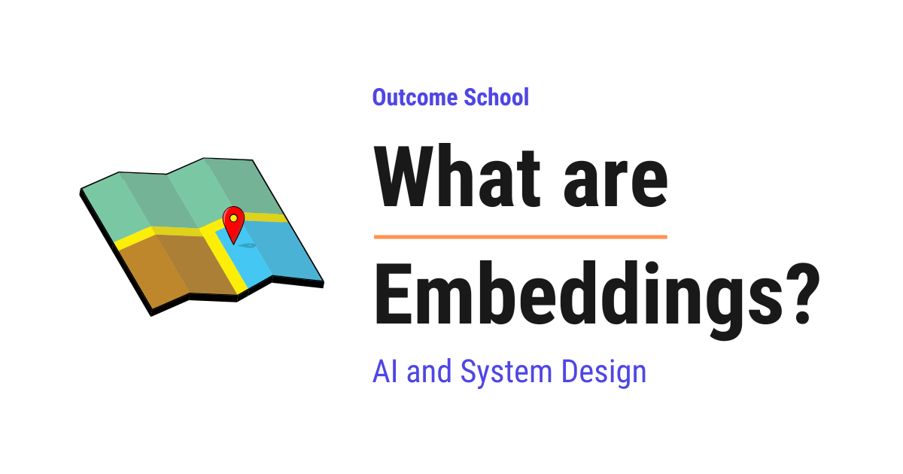
An embedding is a list of numbers that represents the meaning of something, arranged so that things with similar meaning get similar numbers. In simple words, an embedding is meaning translated into numbers.
In this blog, we will learn about Embeddings, one of the most important ideas behind modern AI like search engines, recommendations, and chatbots. We will also see why a computer cannot compare meaning on its own, how an embedding turns meaning into numbers so that similar things sit close together, how we measure that closeness, and where we use embeddings in the real world.
We will cover the following:
- The problem: computers cannot compare meaning
- What are Embeddings?
- A simple example with two numbers
- Why we need many more than two numbers
- How do we measure closeness?
- Where do embeddings come from?
- The famous word math example
- Embeddings are not only for words
- What we use embeddings for
- Things we must be careful about
- Summary
Let's get started.
The problem: computers cannot compare meaning
Before jumping into embeddings, we must understand the problem they solve.
A computer is brilliant at comparing numbers. Ask it whether 5 is bigger than 3, and it answers instantly. But a computer has no idea what words mean. To a computer, a word is just a set of letters.
Let's see why that becomes a real problem.
Consider these two sentences.
Sentence A: "How do I reset my password?"
Sentence B: "I forgot my login details."
We read them and see immediately that they are about the same thing. Now let's look at them the way a plain computer does. It compares the letters. Not a single important word is shared. No "reset", no "password", no "forgot", no "login" appears in both. So the computer concludes they have nothing in common.
Now consider another pair.
Sentence C: "The bank of the river was muddy."
Sentence D: "I need to visit the bank today."
Here, both sentences share the word "bank". So the plain computer decides these two are related. But we know they are about completely different things, one about a riverside and one about money.
Here, we can see the problem clearly. Matching letters is not the same as understanding meaning. The computer got both cases backwards.
So, we need some way to hand the computer meaning in a form it is actually good at, which means numbers.
We needed a solution for that. So, here come embeddings to the rescue.
What are Embeddings?
An embedding is a list of numbers that represents the meaning of something, arranged so that things with similar meaning get similar numbers.
In simple words, an embedding is meaning translated into numbers.
That is the whole idea, and everything else in this blog is just detail on top of it.
The word itself tells us what is happening. To embed something means to place it inside something else. We are taking a word, or a sentence, or a picture, and placing it inside a space made of numbers. Once it sits in that space, it has a position. And once things have positions, we can ask which ones are near each other.
This list of numbers has a name. A list of numbers is called a vector. So when somebody says "the vector for this sentence", they mean exactly the same thing as "the embedding for this sentence".
Let's look at what it actually looks like.
"How do I reset my password?" -> [0.21, -0.48, 0.83, 0.02, ... ]
"I forgot my login details." -> [0.19, -0.44, 0.79, 0.05, ... ]
"The bank of the river." -> [-0.71, 0.33, -0.12, 0.66, ... ]
Here, we can notice the important part. The first two lists hold numbers that are close to each other, because the two sentences mean nearly the same thing. The third list looks completely different, because it means something else. The computer never had to understand English. It only has to notice that two lists of numbers are similar, and that is something a computer does perfectly.
A simple example with two numbers
The best way to learn this is by taking an example. Real embeddings use hundreds of numbers, which we cannot picture, so let's start with just two.
Suppose we want to place some fruits in a space. We choose two qualities and score each fruit from 0 to 10.
- The first number is how sweet it is.
- The second number is how big it is.
Let's fill in the scores.
Fruit Sweetness Size Embedding
----- --------- ---- ---------
Apple 7 5 [7, 5]
Banana 8 5 [8, 5]
Lemon 1 3 [1, 3]
Watermelon 6 10 [6, 10]
Now, each fruit has an embedding, which is simply its two scores written as a list. And because there are only two numbers, we can draw them on paper.
Size
10 | W
|
8 |
|
5 | A B
|
3 | L
|
0 +--------------------------------- Sweetness
0 2 4 6 8 10
A = Apple [7, 5] B = Banana [8, 5]
L = Lemon [1, 3] W = Watermelon [6, 10]
Here, we can see something wonderful happen. We never told the computer that apples and bananas are similar fruits. We only gave it four pairs of numbers. And yet Apple and Banana have landed right next to each other, while Lemon sits far away in its own corner.
So now the computer can answer a real question. "Which fruit is most like an apple?" It does not need to know anything about fruit. It just measures which point is closest to [7, 5], finds Banana at [8, 5], and gives the right answer.
This is exactly how embeddings work. Meaning became position, and position can be measured.
Why we need many more than two numbers
Now, two numbers were enough for fruit. But let's see where two numbers break down.
With only sweetness and size, a lemon and a lime would get almost identical scores. They would sit on top of each other, and our computer would call them the same thing. We have no way to separate them, because we never gave it a number for color.
Language is far richer than fruit. A word carries a huge amount at once. Is it a thing or an action? Is it formal or casual? Is it positive or negative? Is it about people, or money, or nature, or time? Two numbers cannot hold all of that.
So, real embeddings use many more. A typical sentence embedding today has somewhere between 384 and 3072 numbers. Each of those numbers is called a dimension.
2 dimensions -> a flat sheet of paper
3 dimensions -> a room
768 dimensions -> we cannot picture it, and that is fine
Note: We must not try to picture 768 dimensions. Nobody can. The comforting part is that we do not need to. Everything we understood from the fruit drawing still holds true. Similar things are close, different things are far. The math for measuring distance works exactly the same, no matter how many numbers there are.
Now, one more honest point. In our fruit example, we chose the meaning of each number ourselves, sweetness and size. In a real embedding, nobody chooses.
The numbers come out of a trained model, which is a computer program that has learned patterns by studying an enormous number of examples. And here is the surprising part. No single one of those numbers stands for something we could name. Dimension 42 is not "formality". The meaning is spread across all of them together, and we cannot point at one and say what it holds.
How do we measure closeness?
Now, we keep saying two embeddings are "close". Let's see how we actually measure that.
The straightforward way is to measure the plain distance between the two points, exactly as we would with a ruler on our fruit drawing. Apple is at [7, 5] and Banana is at [8, 5], so they are 1 unit apart. Apple and Lemon are much further.
But in practice, the more common method is called cosine similarity.
Let's understand it simply. Instead of thinking of each embedding as a dot, we think of it as an arrow pointing out from the center. Cosine similarity ignores how long the arrows are, and only measures the angle between them.
Small angle between the arrows -> very similar meaning
Right angle between the arrows -> unrelated
Opposite directions -> opposite meaning
The result is a single number between -1 and 1.
- A score near 1 means the two things mean nearly the same thing.
- A score near 0 means they are unrelated.
- A score near -1 means they point in opposite directions.
Now, why do we prefer the angle over the plain distance? Because the length of the arrow often reflects something we do not care about, like how long the text was. A two-line answer and a two-page answer about the same topic should count as similar. Ignoring the length and keeping only the direction gives us that.
Note: In real use, we will rarely see scores anywhere near -1. With most modern text models, unrelated sentences still score around 0.1 to 0.3, and related ones score around 0.7 to 0.9. So we must not expect 0 to mean unrelated in practice. What matters is how the scores compare with each other, not the raw number on its own.
So, when a search system finds the best match for our question, this is all it is doing. It turns our question into an embedding, then finds the stored embedding with the highest cosine similarity.
Where do embeddings come from?
Now, the next big question is: who decides these numbers?
We do not write them by hand. They are produced by a trained model, called an embedding model. We hand it a piece of text, and it hands back the list of numbers. There are many of these models available today, and we simply pick one and use it.
But how did that model learn to give good numbers? The idea behind it is beautifully simple.
The model reads an enormous amount of text, and it learns from one pattern: words that appear in similar situations tend to mean similar things.
This idea is old, and it was captured perfectly long before any of these models existed.
You shall know a word by the company it keeps.
John Rupert Firth, linguist, 1957
Let's see this with an example.
"I drank a cup of tea in the morning."
"I drank a cup of coffee in the morning."
"She poured the tea into a cup."
"She poured the coffee into a cup."
Here, we can notice that "tea" and "coffee" keep turning up in the same kinds of sentences, surrounded by the same kinds of words. They get drunk, they get poured, they come in cups, they happen in the morning.
The model sees this happen millions of times across millions of sentences. So it places "tea" and "coffee" close together in the number space. It was never told that both are hot drinks. It worked that out purely from the company they keep.
And it does the opposite too. The word "bicycle" almost never appears in those same surroundings, so it lands far away.
This is how a machine builds something that behaves like an understanding of meaning, and that too without anybody explaining a single word to it.
We have a detailed blog on Contrastive Learning that explains how a model is trained to pull similar things together and push different things apart.
The famous word math example
Now, let's look at the most famous demonstration of embeddings, because it shows how much structure is hidden inside these numbers.
Once words are positions in a space, we can do arithmetic on them. And something remarkable falls out.
king - man + woman -> lands very close to queen
Let's understand what happened. Take the position of "king". Subtract the position of "man", which removes the male part of the meaning. Add the position of "woman", which adds the female part. The point we land on is closest to "queen".
Similar patterns show up all over the place.
Paris - France + Italy -> lands close to Rome
Here, subtracting France strips away the country, leaving something like "the capital city of". Adding Italy applies it to Italy, and we land near Rome.
Here, we can see why this is so striking. Nobody programmed the concept of gender into the model. Nobody programmed the concept of a capital city. These relationships appeared on their own, simply because they exist in the way people write.
Embeddings are not only for words
Now, we have been talking about text throughout. But nothing in the idea is specific to words.
The idea is general. If we can train a model to turn something into numbers so that similar things land close together, then that something can be embedded.
- Words and sentences. The case we have been discussing.
- Whole documents. A full page becomes one list of numbers, so we can find similar pages.
- Images. A photo becomes a list of numbers. Two photos of dogs land near each other, while a photo of a car lands far away.
- Audio. Two recordings of the same song, or two voices with the same accent, land near each other.
- Products and users. A shop can embed its products and its shoppers, then recommend the products sitting nearest to a shopper.
There is one more thing here that is genuinely clever. Some models put different kinds of things into the same space. So a photo of a cat and the words "a cat sitting on a chair" can land in the same neighborhood, even though one is a picture and one is text.
Here, we can see what that gives us. We can search a collection of photos by typing a sentence, and no photo needs any labels or tags at all. We simply embed our sentence, and find the photos whose embeddings sit nearest to it.
We have a detailed blog on Multimodal AI that explains how a single model works across text, images, and audio together.
What we use embeddings for
Now, we have understood what embeddings are. Let's see where they earn their keep.
Semantic search. This is the biggest one. Instead of matching words, we match meaning. This is what fixes the very first problem in this blog, where "reset my password" and "forgot my login details" needed to be recognized as the same request.
RAG. This stands for Retrieval-Augmented Generation, and it means letting an AI answer using our own documents. We embed all our documents, we embed the user's question, then we pull out the closest pieces and hand them to the AI along with the question. The whole thing rests on embeddings.
Recommendations. "Others also liked this" is often just finding the nearest neighbours in the embedding space.
Grouping. Give a company ten thousand pieces of customer feedback, embed them all, and the complaints naturally form clusters. Nobody has to read them first to invent the categories.
Finding duplicates. Two support tickets worded completely differently but reporting the same bug will sit close together, so we can catch them.
Classification. To sort messages into categories, we can embed them and check which category's examples they sit nearest to.
Now, a natural question follows. If we have millions of embeddings, how do we find the nearest ones quickly? Checking every single one would be far too slow. This is exactly what a vector database is built for. It stores embeddings and finds the nearest ones fast.
Things we must be careful about
Embeddings are useful, but there are traps. Let's go through the important ones.
Embeddings from two different models cannot be compared. This is the mistake that bites people hardest. Each model builds its own private space with its own arrangement. A vector from model A and a vector from model B are two different languages. Comparing them produces numbers that look fine and mean nothing. Very important: If we change our embedding model, we must rebuild every stored embedding.
Similar is not the same as correct. Two sentences can sit close together and still not answer each other. Embeddings capture that things are about the same topic. They do not verify facts, and they do not catch a negation. "The medicine is safe" and "The medicine is not safe" are about exactly the same topic, and they can land uncomfortably close.
They carry the bias of their training text. The model learned from human writing, so whatever unfair associations exist in that writing get baked into the positions. This matters a great deal when embeddings are used in hiring or lending.
They are frozen in time. An embedding model knows only the language it was trained on. A brand new word, or our company's internal jargon, has no good position in its space.
Long text loses detail. Squeezing a twenty-page document into one list of numbers averages everything into a blur. This is why we normally cut long documents into smaller pieces and embed each piece separately. We have a detailed blog on how a Reranker works that explains how systems win back the precision lost in that squeeze.
Here, we can see the simple rule. One model for everything, rebuild when we change it, and never assume that close means correct.
When these traps hurt too much, we can also search our documents without embeddings at all. We have a detailed blog on Vectorless RAG that explains how a model picks the right section by reading the structure of a document.
Summary
Let's quickly recap what we have learned.
- A computer cannot compare meaning, but it is excellent at comparing numbers.
- An embedding is a list of numbers that represents meaning, arranged so that similar things get similar numbers.
- A list of numbers is called a vector, so an embedding and a vector mean the same thing here.
- With two numbers we can draw it on paper, and similar items visibly land close together.
- Real embeddings use hundreds or thousands of numbers, called dimensions, and no single dimension has a name we could give it.
- We measure closeness with cosine similarity, which compares the angle between two arrows and returns a score between -1 and 1. In practice the scores sit in a narrow band, so we must compare them against each other rather than reading a single number on its own.
- An embedding model produces them, having learned that words appearing in similar situations tend to mean similar things.
- Word arithmetic like
king - man + womanlanding nearqueenshows the structure hidden inside these numbers. - Anything can be embedded, including images, audio, and products, and some models put pictures and text into one shared space.
- They power semantic search, RAG, recommendations, grouping, duplicate detection, and classification, and a vector database is what searches them quickly.
- We must never mix embeddings from two different models, and we must remember that close in meaning is not the same as correct.
This is what embeddings are, meaning turned into numbers, so that a machine which only understands arithmetic can still work with what things actually mean.
Frequently Asked Questions
Is an embedding the same as a vector?
Yes. A list of numbers is called a vector, and an embedding is a list of numbers that represents meaning. So, when somebody says "the vector for this sentence", they mean exactly the same thing as "the embedding for this sentence". The only special part is that similar meanings get similar numbers.
What does a single dimension of an embedding represent?
No single dimension stands for something we could name. The numbers come out of a trained model, and nobody chooses what each one means. For example, dimension 42 is not "formality". The meaning is spread across all the dimensions together, so we cannot point at one number and say what it holds.
Does a cosine similarity of 0.3 mean two sentences are related?
Usually not. With most modern text models, unrelated sentences still score around 0.1 to 0.3, while related ones score around 0.7 to 0.9. So, we must not expect 0 to mean unrelated in practice. What matters is how the scores compare with each other, not the raw number on its own.
Do we need to re-embed our data if we switch embedding models?
Yes. Each model builds its own private space with its own arrangement, so vectors from two different models cannot be compared. Comparing them produces numbers that look fine and mean nothing. If we change our embedding model, we must rebuild every stored embedding.
Do embeddings understand negation?
No. Embeddings capture that two things are about the same topic, but they do not verify facts and they do not catch a negation. For example, "The medicine is safe" and "The medicine is not safe" are about the same topic and can land uncomfortably close. Close in meaning is not the same as correct.
Lesson 3.6
How do RNNs and Transformers differ?
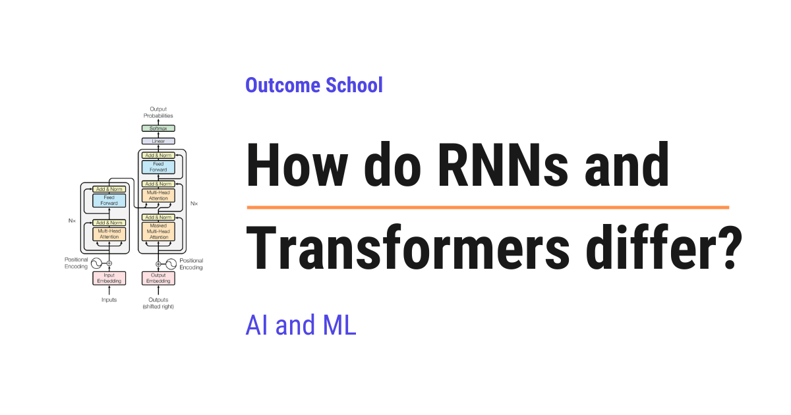
An RNN reads a sequence one word at a time, carrying a memory of what it has seen so far, whereas a Transformer reads the whole sequence at once and uses attention, so that every word can look directly at every other word.
In this blog, we will learn about how RNNs and Transformers differ. These are the two main ways a computer reads a sequence like a sentence, and we will learn why one of them reads word by word, why the other reads everything at once, and when to use which one.
We will cover the following:
- What both of them are for
- What is an RNN?
- The problem with an RNN
- What is a Transformer?
- The key difference in one line
- RNN vs Transformer side by side
- Let's tabulate the difference
- When to use which one?
- Summary
Let's get started.
What both of them are for
Both RNNs and Transformers are built to handle sequences. A sequence is data that comes in order, like the words in a sentence or the values in a time series.
The goal for both is the same: read a sequence and understand it. But they do it in two very different ways. Let's understand each one.
What is an RNN?
An RNN, or Recurrent Neural Network, reads a sequence one step at a time, carrying a memory of what it has seen so far.
In simple words, it reads word by word, left to right. At each step, it combines the current word with a memory called the hidden state. Then it passes the updated memory to the next step.
word 1 -> word 2 -> word 3 -> word 4
| | | |
memory -> memory -> memory -> memory
(each step passes its memory to the next)
Here, we can see that an RNN works in order, one step after another. Each step must wait for the previous step to finish, because it needs that memory.
The problem with an RNN
But, here is the catch. The step-by-step style causes two problems.
- It is slow. Because each step waits for the one before it, an RNN cannot process the whole sequence at once. This makes training slow.
- It forgets long-range information. By the time the RNN reaches the end of a long sentence, the memory of the early words has faded. So it struggles to connect words that are far apart.
"The cat, which we found last summer near the old house, was ___"
By the time the RNN reaches the blank, the memory of "cat"
has faded, so it may struggle to fill it correctly.
Here, we can see the weakness. Long-range links are hard for an RNN. We needed a better solution, and the Transformer was introduced to solve this.
What is a Transformer?
Now that we have learned about RNNs, it's time to learn about Transformers.
A Transformer reads the whole sequence at once and uses attention, which lets every word look directly at every other word.
In simple words, it does not go step by step. It looks at all the words together. Through a mechanism called attention, each word can directly focus on any other word, no matter how far away it is.
All words are seen together:
The cat was on the mat
\_____\_____\____/____/_____/
every word can look directly
at every other word (attention)
Here, we can see the big change. Because a Transformer sees all words at once, it can process them in parallel, which makes training fast. And because every word can look directly at every other word, long-range links are easy. The word at the end can look straight back at the word at the start.
We have a detailed blog on Encoder vs Decoder in Transformers that explains how the two parts of a Transformer work.
The key difference in one line
An RNN reads a sequence step by step with a fading memory. A Transformer reads it all at once, and every word can look directly at every other word.
RNN vs Transformer side by side
Let's place both next to each other so that the difference becomes very clear.
RNN TRANSFORMER
read one step at a time read all words at once
w1 -> w2 -> w3 -> w4 w1 w2 w3 w4 (together)
memory passed along attention connects all
sequential, so slower parallel, so faster
long-range links fade long-range links stay strong
Let's tabulate the difference
Let me tabulate the differences between RNNs and Transformers for your better understanding.
| Point | RNN | Transformer |
|---|---|---|
| How it reads | One step at a time | All words at once |
| Speed of training | Slow, steps wait for each other | Fast, done in parallel |
| Long-range links | Fade over distance | Stay strong through attention |
| Memory of the past | A single hidden state that fades | Direct attention to any word |
| Cost on long sequences | Grows gently with length | Grows quickly, since every word looks at every word |
| Main use today | Small or streaming tasks | Most modern language and vision models |
When to use which one?
This is the real question. Let's make it very simple.
- Use a Transformer for most modern tasks, especially language. Transformers power today's large language models, because they train fast and handle long-range links well.
- Use an RNN for smaller tasks, or when data arrives one piece at a time in a stream, or on tiny devices where a Transformer would be too heavy. An RNN can also be lighter on very long sequences, where the Transformer's all-to-all attention becomes expensive.
We have a blog on Flash Attention in LLMs that explains how this attention cost is brought down on modern hardware, and another on Sliding Window Attention that explains how the cost is cut by letting every word look only at its neighbors.
Summary
Let's quickly recap what we have learned.
- Both RNNs and Transformers handle sequences, but in very different ways.
- An RNN reads step by step and carries a memory, which is slow and forgets long-range information.
- A Transformer reads all words at once and uses attention, so every word can look at every other word.
- This makes Transformers fast to train and strong at long-range links, which is why they dominate today.
- RNNs still help on smaller tasks, streaming data, and tiny devices.
This is how RNNs and Transformers differ, and why Transformers power most modern models.
Frequently Asked Questions
Are RNNs obsolete now that we have Transformers?
No. RNNs still help on smaller tasks, when data arrives one piece at a time in a stream, and on tiny devices where a Transformer would be too heavy. An RNN can also be lighter on very long sequences, where the Transformer's all-to-all attention becomes expensive.
Is a Transformer always cheaper to run than an RNN?
No. On long sequences, the cost of a Transformer grows quickly, since every word looks at every other word. The cost of an RNN grows gently with length. Techniques like Flash Attention and Sliding Window Attention are used to bring this attention cost down.
Why do Transformers train faster than RNNs?
Transformers train faster because they read all the words at once and process them in parallel. An RNN reads one step at a time, and each step must wait for the previous step to finish because it needs that memory. This sequential style makes RNN training slow.
Why do large language models use Transformers instead of RNNs?
Large language models use Transformers because they train fast and handle long-range links well. In an RNN, the memory of early words fades by the end of a long sentence. In a Transformer, attention lets the word at the end look straight back at the word at the start.
Lesson 3.7
How Does the Transformer Architecture Work?

The Transformer is the architecture behind every modern Large Language Model (LLM). It takes a sequence of tokens as input and produces a sequence of tokens as output, using attention to understand how the words relate to each other.
In this blog, we will learn about the Transformer architecture by decoding it piece by piece - understanding what each component does, how they work together, and why this architecture powers every modern Large Language Model (LLM).
When we hear "Transformer", it sounds complex. But do not worry. If we break it down into its individual parts, every single piece is simple. The complexity comes from how they are stacked together - not from any one piece being hard.
Our goal is to decode this architecture so clearly that by the end, we will be able to explain how a Transformer works to anyone.
We will cover the following:
- Why the Transformer was needed
- The two halves of the architecture
- Tokenization, Embedding, and Positional Encoding
- The Attention Mechanism and Multi-Head Attention
- Feed-Forward Networks, Residual Connections, and Layer Normalization
- How the Encoder and Decoder work
- How data flows through the entire architecture
- The three variants of the Transformer
- Why the Transformer is so powerful
Let's get started.
The Big Picture
Before we go into the details, let's understand the big picture.
A Transformer takes a sequence of tokens as input and produces a sequence of tokens as output. That is it. At a very high level, it is a tokens-in, tokens-out machine. And since tokens come from text and turn back into text, we can also think of it as a text-in, text-out machine.
For example, if we give it "Translate: I love learning" as input, it produces "J'adore apprendre" as output. If we give it "What is the capital of France?" as input, it produces "The capital of France is Paris." as output.
But how does it do this? Let's understand.
Why Was the Transformer Needed?
Before the Transformer, models processed words one by one, in order - like reading a sentence from left to right, one word at a time.
This had two big problems:
Problem 1: Forgetting. As sentences got longer, the model would start forgetting earlier words. By the time it reached the 50th word, its memory of the 1st word was very weak.
Problem 2: Slowness. Because words were processed one after another, the 2nd word had to wait for the 1st word to finish, the 3rd word had to wait for the 2nd, and so on. This was very slow.
So, here comes the Transformer to the rescue. It processes all input tokens at the same time and lets every token look at every other token directly. Long-range connections are no longer a major problem. And because everything happens in parallel, training became much faster. We will see exactly how this works in the upcoming sections.
The Transformer was introduced in 2017 in the famous research paper "Attention Is All You Need" by researchers at Google. It changed everything.
The Architecture Has Two Halves
The original Transformer has two main halves:
- The Encoder - this half reads and understands the input
- The Decoder - this half generates the output
Think of it like a conversation between a reader and a writer. The reader (encoder) reads a document carefully and creates detailed notes. The writer (decoder) uses those notes to write a new document. The reader focuses on understanding. The writer focuses on producing.
Now, let's understand what happens inside each half. But before jumping into the encoder and decoder, we need to understand what happens before the input even reaches them.
Decoding Step 1: Turning Words into Numbers
The model does not understand words. It only understands numbers. So, the very first step is to convert words into numbers.
This happens in two stages:
Tokenization: The input text is split into small pieces called tokens. A token can be a word, part of a word, or even a single character. For the sake of understanding, let's treat each word as one token.
"I love learning" becomes three tokens: "I", "love", "learning".
We have a detailed blog on Tokenization in LLMs that explains this step by step.
Embedding: Each token is then converted into a vector of numbers called an embedding. An embedding is like a digital fingerprint for a word. Words with similar meanings get similar fingerprints.
For example, "happy" and "joyful" would have very similar embeddings because they mean almost the same thing. But "happy" and "car" would have very different embeddings because they are unrelated.
Decoding Step 2: Adding Word Order
But, here is the catch. The encoder processes all input tokens at the same time - not one by one. This is great for speed, but it means the model has no idea which word comes first, second, or third.
"I love AI" and "AI love I" would look the same to the model. But they mean very different things.
Positional Encoding solves this. It adds a vector of numbers to each embedding that represents the position of the word. The 1st word gets a different position signal than the 2nd word, and so on.
Think of it like seat numbers in a theater. Even if all the audience members arrive at the same time, their seat numbers tell us exactly where each person is supposed to sit. Positional encoding is the seat number for each word.
After this step, the positional encoding numbers are combined into the embedding itself through addition. So, each token now carries a single vector of numbers that encodes both what the word means and where it sits in the sentence.
Decoding Step 3: The Attention Mechanism
This is the heart of the Transformer. The attention mechanism is the single most important idea that makes everything work.
Attention allows each word to look at every other word in the sentence and decide how much focus to give to each one.
Let's take the sentence: "The cat sat on the mat because it was tired."
When the model processes the word "it", it needs to figure out what "it" refers to. Is it the cat? Is it the mat? The attention mechanism helps the model focus more on "cat" and less on "mat" because "cat" is more relevant to "it" in this context.
How Attention Works
Each word is converted into three things:
- Query (Q) - what this word is looking for
- Key (K) - what this word can offer
- Value (V) - the actual information this word carries
We have a detailed blog on the Math behind Attention - Q, K, and V that explains how these are actually computed.
The process works like this:
First, each word uses its Query to compare with the Keys of all other words using a dot product. This produces attention scores - numbers that tell the model how relevant each pair of words is. Then, these scores are scaled down (divided by √dₖ) to keep them in a manageable range. We have a detailed blog on Scaling Dot Product Attention that explains why this step is needed. After scaling, the scores are normalized using softmax so they become probabilities that add up to 1. Finally, the model collects a weighted mix of the Values based on these probabilities.
The result is that every word now carries information not just about itself, but about the words most relevant to it. The word "it" now carries a strong signal from "cat" because the attention mechanism figured out the connection.
In simple words, attention lets each token borrow useful information from other relevant tokens before moving to the next layer.
Multi-Head Attention
The Transformer does not run attention just once. It runs it multiple times in parallel - each time from a different perspective. This is called multi-head attention.
Think of it like a team of editors reviewing an article. One editor checks for grammar, another checks for factual accuracy, and another checks for flow. Each editor looks at the same text but focuses on something different. Together, they provide a complete review.
Each head in multi-head attention focuses on a different type of relationship between words. One head focuses on subject-verb connections. Another head focuses on which adjective describes which noun. The outputs of all heads are combined to give the model a rich understanding of the text.
Here is a simple visual of multi-head attention. All heads run in parallel on the same input, and their outputs are combined at the end:
Input
|
-------------------------------
| | | | |
Head 1 Head 2 Head 3 ... Head N (all running in parallel)
| | | | |
-------------------------------
|
Combined
|
Output
Decoding Step 4: The Feed-Forward Network
After the attention mechanism processes the words, the output passes through a feed-forward network.
Think of it as a refinement step. If attention is about understanding relationships between words, the feed-forward network is about deepening the understanding of each word individually.
It takes the enriched representation from attention and processes it further - sharpening the signal and removing noise. Every word passes through the same feed-forward network independently.
Decoding Step 5: Residual Connections and Layer Normalization
Inside each layer, there are two more important pieces that help the Transformer learn effectively. Let's understand each of them.
Residual Connection (Skip Connection): After each sub-layer (attention or feed-forward network), the original input to that sub-layer is added back to the output. Think of it like taking notes in a class. Even after the teacher adds new information, we keep our original notes and combine the new information with them. This prevents the model from losing important information as data passes through many layers.
In simple words, the output of each sub-layer is: output = sub-layer(input) + input.
Layer Normalization: After each residual connection, the numbers are normalized - adjusted so they stay in a stable range. This prevents the numbers from becoming too large or too small as they pass through many layers. It keeps the training process stable and smooth.
These two pieces are present in every single layer of both the encoder and decoder.
Decoding Step 6: Stacking Multiple Layers
Now, here comes the interesting part. So far, we have talked about one multi-head attention sub-layer and one feed-forward sub-layer. Together, these two sub-layers (along with their residual connections and layer normalization) form one layer of the Transformer. Think of one layer as a complete bundle: one multi-head attention sub-layer plus one feed-forward sub-layer.
The Transformer does not use just one such layer. It stacks multiple layers on top of each other, one after another. This is where the real power comes from.
Each of these layers is also called a Transformer block. So when we say "the model has 96 layers", it means the model has 96 Transformer blocks stacked one after another. Each block has its own multi-head attention sub-layer and its own feed-forward sub-layer.
Note: This stacking is different from multi-head attention. Multi-head attention runs many attention heads in parallel inside a single attention sub-layer. Stacking layers, on the other hand, places full Transformer blocks one after another in sequence, so the output of one layer becomes the input of the next layer.
Here is a simple visual of stacked Transformer layers. Each layer is a complete block, and they are connected one after another in sequence:
Input
|
-----------------
| Layer 1 | (multi-head attention + feed-forward)
-----------------
|
-----------------
| Layer 2 | (multi-head attention + feed-forward)
-----------------
|
...
|
-----------------
| Layer N | (multi-head attention + feed-forward)
-----------------
|
Output
The original Transformer uses 6 layers in both the encoder and decoder. Modern LLMs use even more - GPT-3 (175B) uses 96 layers.
Each layer builds on the understanding from the previous layer. Think of it like reading a book multiple times. The first read gives us a basic understanding. The second read reveals connections we missed. The third read gives us deeper insights. Each layer is like another read - the understanding gets richer and richer.
Decoding Step 7: The Encoder in Detail
Now that we know the building blocks, let's see how they come together inside the encoder.
The encoder's job is to read and understand the input.
Each encoder layer has two components:
- Self-Attention - each word looks at all other words in the input to understand relationships
- Feed-Forward Network - each word's representation is refined individually
Both components are followed by a residual connection and layer normalization.
Let's see what happens when the sentence "I love learning" passes through the encoder.
In the first layer, the self-attention mechanism allows each word to look at every other word. The word "love" starts to notice that "I" is its subject and "learning" is its object. The feed-forward network then refines this understanding.
In the second layer, the connections become richer. Now "love" does not just know about "I" and "learning" individually - it starts to understand the combined meaning of "I love learning" as a complete thought.
By the sixth layer, each word carries a deep, context-aware representation. The word "learning" is no longer just a dictionary definition - it now encodes the fact that it is something "I" loves to do, in this specific sentence.
After all encoder layers, we have a rich understanding of the input. This understanding is then passed to the decoder.
Decoding Step 8: The Decoder in Detail
The decoder's job is to generate the output, one token at a time.
Each decoder layer has three components:
- Masked Self-Attention - each output word looks at all previous output words, but not future ones. This is because when generating text, future words do not exist yet. The word "love" can look at "I" but not at "learning" because "learning" has not been generated yet. This restriction is called causal masking. We have a detailed blog on Causal Masking in Attention that explains how this works.
- Cross-Attention - this is how the decoder connects to the encoder. Each output word looks at the encoder's output to pull in relevant information from the input. Here, the Query comes from the decoder, while the Key and Value come from the encoder's output. This is what makes it different from self-attention - and this is the bridge between understanding the input and generating the output.
- Feed-Forward Network - the same refinement step as in the encoder.
All three components are followed by a residual connection and layer normalization, just like in the encoder.
How the Decoder Picks the Next Word
Now, the question is: after the output passes through all decoder layers, how does the decoder pick the actual next word? At this point, the output is still a vector of numbers - not a word.
So, the decoder passes these numbers through a linear layer that converts them into a score for every word in the vocabulary. If the vocabulary has 50,000 words, we get 50,000 scores.
Then, softmax converts these scores into probabilities - numbers between 0 and 1 that add up to 1. The model then picks the next word based on these probabilities. In practice, models use different strategies to pick the next word - like temperature, top-k, and top-p sampling - which control how creative or focused the output is. But for the sake of understanding, let's say it picks the word with the highest probability.
For example, if the model is translating "I love learning" to French and it has already generated "J'", the probabilities after the linear layer and softmax look like this:
- "adore": 0.72
- "aime": 0.15
- "mange": 0.01
- ... (50,000 words, most with very small probabilities)
The model picks "adore" because it has the highest probability. This is how the decoder decides which word to output next.
Decoding Step 9: The Complete Flow
Now that we have learned about all the building blocks, let's walk through the complete flow with a concrete example. The best way to learn this is by taking an example.
Let's say we want to translate "I love learning" to French.
The Encoder Phase
The English sentence "I love learning" goes through the following steps:
Tokenize: "I love learning" becomes three tokens: "I", "love", "learning".
Embed: Each token is converted into a vector of numbers (an embedding).
Add position: Positional encoding is added so the model knows "I" is 1st, "love" is 2nd, and "learning" is 3rd.
Pass through 6 encoder layers: In each layer, self-attention lets every word look at every other word, and the feed-forward network refines the understanding. Residual connections and layer normalization keep things stable.
After all 6 layers, the encoder produces a rich representation of the input. Each word now carries deep contextual information. This representation is passed to the decoder.
The Decoder Phase
The decoder generates the French translation one word at a time.
Generating "J'" (the 1st word):
The decoder starts with a special "start" token. Masked self-attention has nothing to look back at since this is the first token. Cross-attention looks at the encoder's output to understand the English input. The output passes through the linear layer and softmax. The model picks "J'" as the most probable first word.
Generating "adore" (the 2nd word):
Now the decoder has ["start", "J'"]. Masked self-attention looks at "start" and "J'" to understand what has been generated so far. Cross-attention looks at the encoder's output again to pull in relevant information from the English input. The linear layer and softmax produce probabilities. The model picks "adore".
Generating "apprendre" (the 3rd word):
Now the decoder has ["start", "J'", "adore"]. Masked self-attention looks at all three previous tokens. Cross-attention connects to the encoder's output. The model picks "apprendre".
Generating the "end" token:
The decoder generates a special "end" token, signaling that the translation is complete.
The final output: "J'adore apprendre" (which means "I love learning" in French).
This is how the Transformer works from start to finish.
The Three Variants
The original Transformer uses both an encoder and a decoder. But we do not always need both. This gives us three variants:
Encoder-Only (Example: BERT)
Uses only the encoder. The model reads and understands the input but does not generate new text. This is used for tasks like classifying emails as spam or not, understanding the sentiment of a review, or finding answers within a given text.
Decoder-Only (Example: GPT)
Uses only the decoder. The model generates text one token at a time. Each token can look at all previous tokens but not future ones. This is the variant behind most modern LLMs. It is used for generating text, answering questions, writing code, and having conversations.
Encoder-Decoder (Example: T5, the original Transformer)
Uses both parts. The encoder understands the input, and the decoder generates the output based on that understanding. This is used for translation, summarization, and other tasks where one text is transformed into another.
We can choose the right variant based on our use case.
Why the Transformer is So Powerful
Now that we have decoded the entire architecture, let's understand why it changed everything:
Parallel processing: The encoder processes all input tokens at the same time instead of one by one. Even the decoder runs in parallel during training. This makes training much faster and allows models to learn from massive amounts of data.
No more long-range forgetting: Through attention, every word can directly look at every other word. The 1st word is just as accessible as the 1000th word, so the long-range memory problem of older models is largely solved.
Scalability: By adding more layers, more attention heads, and more data, the model keeps getting better. This is why we have models with billions of parameters today. Parameters are the numbers inside the model that it learns during training.
Versatility: The same architecture handles translation, question answering, text generation, code writing, summarization, and much more. One design, countless applications.
The Transformer is the single architecture behind the entire modern AI revolution. It enables us to do complex things very simply.
Quick Summary
Let's recap what we have decoded:
- Tokenization and Embedding turn words into numbers that the model can work with.
- Positional Encoding adds word order information since all words are processed at the same time.
- Attention lets every word look at every other word and decide which ones to focus on. Multi-head attention does this from multiple perspectives.
- Feed-Forward Networks refine the understanding of each word individually.
- Residual Connections and Layer Normalization keep the numbers stable as data flows through many layers.
- The Encoder stacks these building blocks to read and understand the input.
- The Decoder adds cross-attention to connect to the encoder, and uses a linear layer + softmax to pick the next word.
- Three variants exist: encoder-only for understanding, decoder-only for generating, and encoder-decoder for transforming one text into another.
Now, we have decoded the Transformer architecture piece by piece and understood how it works.
Frequently Asked Questions
Does GPT use the full Transformer architecture?
No. GPT uses only the decoder half of the Transformer. It generates text one token at a time, and each token can look at all previous tokens but not future ones. This decoder-only variant is the one behind most modern LLMs.
Is multi-head attention the same as stacking layers?
No. Multi-head attention runs many attention heads in parallel inside a single attention sub-layer. Stacking layers places full Transformer blocks one after another in sequence, so the output of one layer becomes the input of the next layer. Each block has its own multi-head attention and its own feed-forward sub-layer.
How many layers does a Transformer have?
The original Transformer uses 6 layers in both the encoder and the decoder. Modern LLMs use even more layers. For example, GPT-3 with 175B parameters uses 96 layers, which means 96 Transformer blocks stacked one after another.
Does the decoder always pick the word with the highest probability?
No. In practice, models use different strategies to pick the next word, like temperature, top-k, and top-p sampling. These strategies control how creative or focused the output is. Picking the highest-probability word is just the simplest way to understand how the decoder works.
Why can a decoder not look at future words?
A decoder cannot look at future words because, when generating text, future words do not exist yet. So each output word looks only at the previous output words. This restriction is called causal masking, and it is applied in the masked self-attention of every decoder layer.
Lesson 3.8
Encoder vs Decoder in Transformers
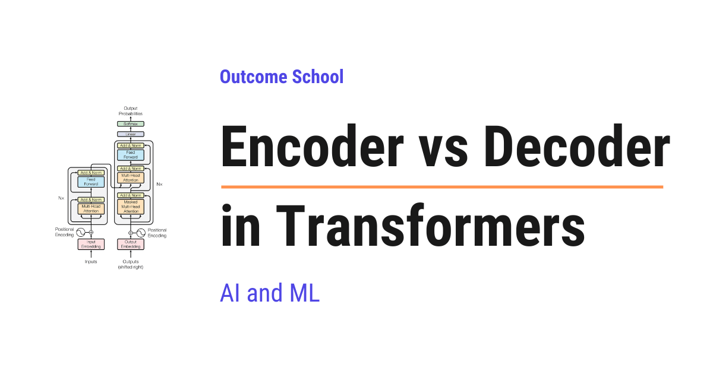
In Transformers, the Encoder reads the whole input at once, in both directions, to understand it. The Decoder generates the output one token at a time, and it can look only backward.
In this blog, we will learn about Encoder vs Decoder in Transformers, the two building blocks behind almost every modern AI model that works with language. We will also see how the Encoder and the Decoder differ from each other, how each one works with simple examples, why one of them reads in both directions while the other one looks only backward, what the three types of Transformers are, and when to use which one.
We will cover the following:
- What is a Transformer?
- A word about tokens
- What is an Encoder?
- What is a Decoder?
- The one big difference
- The three types of Transformers
- Let's tabulate the difference
- When to use which one?
- Summary
Let's get started.
What is a Transformer?
Before jumping into Encoder and Decoder, we must know what a Transformer is.
A Transformer is the architecture behind most modern AI models that work with language. The AI tools we use today, like ChatGPT, Claude, and Gemini, are all built using the Transformer architecture.
The Transformer became famous because it is very good at understanding the relationship between words. It can look at a sentence and figure out how each word connects to the other words. This is what makes it so powerful with language.
Now, a Transformer is built from two main building blocks. One block is called the Encoder, and the other block is called the Decoder. In this blog, we will understand both of them and see how they differ.
Before that, we need to understand one small word, the token.
A word about tokens
When a Transformer reads text, it does not read whole sentences at once. It breaks the text into small pieces. Each small piece is called a token.
A token is usually a word or a part of a word. For the sake of understanding, we can just think of a token as a word.
So, the sentence "I love AI" becomes three tokens: "I", "love", and "AI". The Transformer works on these tokens.
The exact rule for splitting the text into tokens comes from a tokenization algorithm. We have a detailed blog on Byte Pair Encoding in LLMs that explains how this works.
Now that we know about tokens, let's understand the Encoder.
What is an Encoder?
The Encoder reads the whole input and builds a deep understanding of it.
In simple words, the job of the Encoder is to understand. It takes all the tokens of the input, looks at them together, and creates a rich meaning for each token.
Here is the most important point about the Encoder. It can look at all the tokens at the same time, both to the left and to the right of any word. It reads the whole sentence at once. This is why we say the Encoder looks in both directions.
Let's understand why both directions matter. Consider the sentence, "The bank of the river was muddy." Here, the word "bank" is confusing. It could mean a money bank or the side of a river. To understand it correctly, we must read the word "river" that comes later. The Encoder can do this, because it reads the full sentence at once and looks in both directions.
We can picture the Encoder like below:
Input tokens: [The] [bank] [of] [the] [river] [was] [muddy]
Every token looks at ALL other tokens
(both left and right, all at once)
|
v
Output: a deep understanding (meaning) for each token
Here, we can see that each token is allowed to look at every other token in the sentence. This looking at each other is done by a mechanism called Self Attention. Because of this, the Encoder understands the full meaning very well.
So, the Encoder is like a careful reader. It reads the whole thing first and understands it deeply. It does not write anything new. It only understands.
What is a Decoder?
Now that we have learned about the Encoder, it's time to learn about the Decoder.
The Decoder generates the output, one token at a time.
In simple words, the job of the Decoder is to write. It produces the answer token by token, from left to right, just like we write a sentence word by word.
Here is the most important point about the Decoder. While writing, it can only look at the tokens that came before. It cannot look at the future tokens, because those tokens are not written yet. This makes sense. When we write a sentence, we do not know the next word until we write it. Inside the model, this is enforced by a causal mask that hides the future tokens.
Let's understand this with an example. Suppose the Decoder is writing "The sky is blue". When it is about to write "blue", it can look at "The", "sky", and "is". But it cannot look at "blue" itself, because that is the word it is trying to guess right now.
We can picture the Decoder like below:
Step 1: <start> -> predict next -> "The"
Step 2: <start> The -> predict next -> "sky"
Step 3: <start> The sky -> predict next -> "is"
Step 4: <start> The sky is -> predict next -> "blue"
(each step can only look back at the words already written)
Here, we can see that the Decoder builds the sentence one word at a time, always looking only at the words behind it.
So, the Decoder is like a writer. It creates new text step by step, using only what it has written so far. This way of generating, where each new token depends on the tokens that came before it, is what makes it an autoregressive model.
The one big difference
If we forget everything else, we must remember this one line.
The Encoder reads and understands the whole input at once. The Decoder writes new output one token at a time, looking only at the past.
That is the heart of the difference. The Encoder is a reader that looks in both directions. The Decoder is a writer that looks only backward.
The three types of Transformers
Now, here is something interesting. We can build a Transformer using only the Encoder, only the Decoder, or both together. This gives us three types of Transformers, and each one is good for a different job.
Let's understand all three.
1. Encoder-only: This uses only the Encoder. Its job is pure understanding. It is great for tasks like deciding if a review is positive or negative, or turning text into embeddings for search. A famous example is a model called BERT.
2. Decoder-only: This uses only the Decoder. Its job is pure generation. It writes text one token at a time. Most modern chat AI models are decoder-only, like the models behind ChatGPT, Claude, and Gemini.
3. Encoder-Decoder: This uses both blocks together. The Encoder first reads and understands the input. Then the Decoder writes the output based on that understanding. This is great for tasks where we take one full text and turn it into another, like translating a sentence from English to French. A famous example is a model called T5.
We can picture the three types like below:
Encoder-only Decoder-only Encoder-Decoder
------------ ------------ ---------------
Encoder Decoder Encoder + Decoder
| | |
v v v
understand generate understand, then
the input the output generate
| | |
v v v
(BERT) (ChatGPT) (T5)
Here, we can see the three types at a glance. The Encoder-only type only understands. The Decoder-only type only generates. The Encoder-Decoder type first understands and then generates.
That pure understanding is what makes the Encoder-only type a great fit for search. We have a detailed blog on Decoding ColBERT that explains how a BERT encoder is turned into a fast, word-level retrieval model.
Let's understand the Encoder-Decoder flow with a translation example like below:
English input: "I love AI"
|
v
+---------------+
| Encoder | reads and understands the full English sentence
+---------------+
|
| passes the understanding to the Decoder
v
+---------------+
| Decoder | writes the French output, one token at a time
+---------------+
|
v
French output: "J'aime l'IA"
Here, we can see the teamwork. The Encoder understands the English sentence fully. Then the Decoder uses that understanding to write the French sentence step by step. The bridge that carries this understanding from the Encoder into the Decoder is Cross Attention.
Let's tabulate the difference
Let me tabulate the differences between the Encoder and the Decoder for your better understanding.
| Point | Encoder | Decoder |
|---|---|---|
| Main job | Understand the input | Generate the output |
| How it reads | Looks at all tokens at once | Writes one token at a time |
| Direction | Both directions (left and right) | Only backward (past tokens) |
| Good for | Understanding tasks | Writing tasks |
| Example model | BERT | The models behind ChatGPT, Claude |
When to use which one?
This is the real question. Let's make it very simple.
The trick is to look at the task we want to solve.
- If our task is to understand text, like sorting reviews or searching, we use an Encoder-only model.
- If our task is to generate text, like chatting or writing, we use a Decoder-only model.
- If our task is to take one full text and turn it into another, like translation or summarization, we use an Encoder-Decoder model.
So, we must always ask ourselves: do we want to understand, to generate, or to convert one text into another? The answer decides which one to use.
Note: Today, most popular chat AI models are decoder-only. This is because a good writer must also understand well, and it turns out that a large Decoder learns to do both understanding and writing at the same time. This is why decoder-only models power most of the AI chat tools we use today.
Summary
Let's quickly recap what we have learned.
- A Transformer is the architecture behind most modern language AI, and it is built from two blocks: the Encoder and the Decoder.
- The Encoder reads the whole input at once and understands it deeply, looking in both directions.
- The Decoder writes the output one token at a time, looking only at the past tokens.
- We can build three types: Encoder-only for understanding, Decoder-only for generation, and Encoder-Decoder for converting one text into another.
- Most modern chat AI models today are decoder-only.
This is how the Encoder and the Decoder work as the two building blocks of a Transformer.
Now, we must have understood Encoder vs Decoder in Transformers.
Frequently Asked Questions
Is ChatGPT an encoder model or a decoder model?
ChatGPT is built on a decoder-only model. Most modern chat AI models, like the models behind ChatGPT, Claude, and Gemini, are decoder-only. Their job is pure generation, writing text one token at a time while looking only at the tokens that came before.
Why are most chat models decoder-only if they also need to understand text?
A good writer must also understand well, and a large Decoder learns to do both understanding and writing at the same time. This is why decoder-only models power most of the AI chat tools we use today.
Can BERT be used to generate text like ChatGPT?
No. BERT is an Encoder-only model, and its job is pure understanding. It does not write anything new. It is great for tasks like deciding if a review is positive or negative, or turning text into embeddings for search.
How does the Decoder use what the Encoder understood?
The Decoder uses Cross Attention. In an Encoder-Decoder model, the Encoder first reads and understands the full input. Cross Attention is the bridge that carries this understanding into the Decoder, which then writes the output one token at a time, like a French translation of an English sentence.
Lesson 3.9
What is Self Attention in Transformers and How Does It Work?
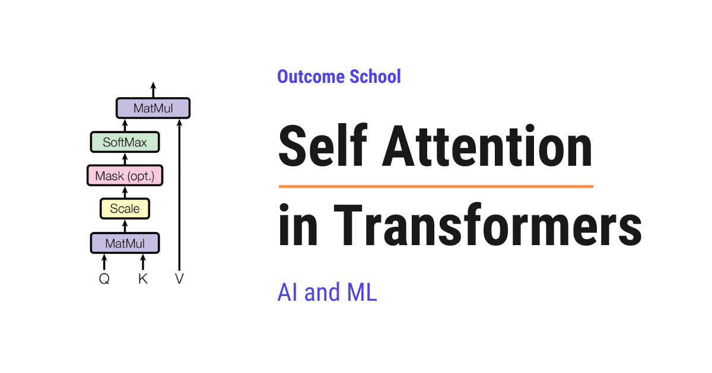
Self Attention is the mechanism that lets every word in a sentence look at every other word in the same sentence to understand its meaning. It is the heart of modern Large Language Models like BERT and GPT.
In this blog, we will learn about Self Attention in Transformers. We will also see why we need it, what Query, Key, and Value are, how it works step by step with a simple example, and why it works so well.
We will cover the following:
- What is Self Attention?
- Why do we need Self Attention?
- Query, Key, and Value vectors
- Step-by-step working of Self Attention
- A simple example walk-through
- Why Self Attention works so well
- Multi-Head Self Attention
- Where Self Attention is used
Let's get started.
What is Self Attention?
Self Attention is a mechanism that allows every token in a sequence to look at every other token in the same sequence, including itself, to understand the context.
In simple words, Self Attention = Self + Attention. The word "Attention" means each token decides how much it should focus on the other tokens.
So, every word in a sentence looks at every other word in the same sentence and figures out which words matter the most for its meaning.
Why do we need Self Attention?
The best way to learn this is by taking an example.
Consider the sentence:
The animal did not cross the street because it was too tired.
Now, the question is: what does the word it refer to?
As humans, we know that it refers to the animal, because the animal was too tired to cross.
Now, let's read one more sentence:
The animal did not cross the street because it was too wide.
Same structure. Same word it. But now, what does it refer to?
Here, it refers to the street, because the street was too wide.
We changed just one word - from tired to wide - and the meaning of it completely changed.
So, how did our brain figure that out? Our brain looked at the surrounding words to understand the meaning of it. The word tired pulled our attention towards the animal. The word wide pulled our attention towards the street.
This is exactly what happens inside the Large Language Model. Every word looks at every other word in the same sentence to understand its meaning. The model gives more attention to the words that matter and less attention to the words that do not matter. This mechanism is called Attention.
Now, notice that every word here is looking at the other words within the SAME sentence. The sentence is attending to itself. This is why we call it Self Attention.
In the first sentence, it pays strong attention to animal. In the second sentence, it pays strong attention to street. That is how the model captures the true meaning of it in both cases.
Without Self Attention, the word it would just be a generic token with no real meaning. And Self Attention is the core idea behind every modern Large Language Model.
Query, Key, and Value vectors
For every token, Self Attention needs to answer two questions:
- Which other tokens in this sentence are important for me?
- How much should I focus on each of them?
To answer these questions, we create three vectors for every input token:
- Query (Q): what this token is looking for.
- Key (K): what this token offers to others.
- Value (V): the actual information this token carries.
The word "Self" in Self Attention comes from one very important fact:
Query, Key, and Value all come from the SAME input sequence.
This is what makes it "Self" Attention. The same sequence creates the questions, the same sequence creates the keys to match those questions, and the same sequence provides the values. The sequence is attending to itself.
In simple words, if our input sentence is "The animal did not cross the street", then Q, K, and V are all derived from "The animal did not cross the street" itself.
We have a detailed blog on the Math behind Attention - Q, K, and V that covers this in depth.
Note: This is the key difference between Self Attention and Cross Attention. In Cross Attention, the Query comes from one sequence and the Key and Value come from another sequence. But in Self Attention, all three come from the same sequence.
For the sake of understanding, let's take an analogy.
Suppose we are in a library and we are looking for a book on machine learning.
- The Query is the topic we are searching for: "machine learning".
- The Key is the label written on every book on the shelf.
- The Value is the actual content inside the book.
We compare our Query with every Key. The Keys that match our Query give us the most relevant Values.
Self Attention works in the same way.
Step-by-step working of Self Attention
Now, it's time to learn the exact steps of Self Attention.
Step 1: We start with the input embeddings. Every token in the sentence is converted into a vector.
Step 2: We create three vectors for every token by multiplying the embedding with three different weight matrices.
- Q = Input x W_Q
- K = Input x W_K
- V = Input x W_V
Here, W_Q, W_K, and W_V are weight matrices that the model learns during training.
Step 3: We compute the dot product of Q with the transpose of K. This is a matrix multiplication that gives us the attention scores. We use the transpose so that the shapes align correctly for the multiplication.
- Scores = Q . K^T
The score tells us how much one token should attend to another token. A higher score means a stronger match between the Query of one token and the Key of another token.
Step 4: We scale the scores by dividing them by the square root of the dimension of the Key vectors. Here, d_k is the dimension of the Key vector.
- Scaled Scores = (Q . K^T) / sqrt(d_k)
This scaling is done to keep the numbers in a stable range so that the softmax does not produce extreme values. Without this scaling, the gradients can become very small during training. We have a detailed blog on the Math behind √dₖ Scaling Factor in Attention that explains this step by step.
Step 5: We apply softmax on the scaled scores. This converts the scores into probabilities. Every row of the matrix now sums to 1.
- Attention Weights = softmax((Q . K^T) / sqrt(d_k))
These weights tell us, for every token, how much attention it should pay to every other token.
Step 6: We multiply the attention weights by the Value matrix V. This gives us the final output.
- Output = Attention Weights . V
The output is a new representation of every token where the meaning of the token is enriched by the context of the other tokens.
So, the full Self Attention formula is:
Attention(Q, K, V) = softmax((Q . K^T) / sqrt(d_k)) . V
Here, we can visualize the full flow of Self Attention as below:
Input Embeddings
|
↓
+-----------+-----------+
| | |
↓ ↓ ↓
Q K V
| | |
+-----+-----+ |
| |
↓ |
Q . K^T |
| |
↓ |
Divide by sqrt(d_k) |
| |
↓ |
Softmax |
| |
↓ |
Attention Weights |
| |
+--------+--------+
|
↓
Multiply
|
↓
Output
Here, we can see that Q, K, and V are all created from the same input. Then Q and K are used to compute the attention weights, and V is used to compute the final output.
A simple example walk-through
Let's take a small example to make this concrete.
Consider the sentence:
I love AI
We have three tokens: I, love, AI.
Step 1: Every token is converted into an embedding vector.
Step 2: We create Q, K, and V vectors for every token using the learned weight matrices. So now, we have:
- Q for
I, Q forlove, Q forAI - K for
I, K forlove, K forAI - V for
I, V forlove, V forAI
Step 3: For the token I, we take its Query vector and compute the dot product with the Key vectors of all three tokens: I, love, and AI. This gives us three scores.
Step 4: We scale these scores by sqrt(d_k).
Step 5: We apply softmax to get the attention weights. Just for the sake of understanding, let's say the result for the token I is:
- Weight for
I= 0.070 - Weight for
love= 0.707 - Weight for
AI= 0.223
This means the token I is paying 7% attention to itself, 70.7% to love, and 22.3% to AI.
The same calculation happens for every token. So, the full attention weight matrix looks like below:
Attends to
I love AI
+-------+-------+-------+
I | 0.070 | 0.707 | 0.223 |
+-------+-------+-------+
From love | 0.333 | 0.333 | 0.333 |
+-------+-------+-------+
AI | 0.168 | 0.533 | 0.299 |
+-------+-------+-------+
Here, every row sums to 1 because of softmax. The numbers are just for the sake of understanding. Each row tells us how much attention that token is paying to every other token in the sentence. Because every row must sum to 1, a token has to give its attention away even when nothing is worth attending to, which is why the first tokens end up acting as attention sinks.
Step 6: We compute the final output for I as a weighted sum of the Value vectors:
- Output for
I= 0.070 x V(I) + 0.707 x V(love) + 0.223 x V(AI)
This output is the new representation of I that carries the context of the entire sentence. Since love got the highest weight, the new representation of I is heavily influenced by the meaning of love.
The same process happens for every other token at the same time. So, in one shot, we get the new context-aware representation of every token in the sentence.
It works perfectly.
Why Self Attention works so well
Now, let's understand why Self Attention works so well.
Before Self Attention, models like RNN and LSTM processed tokens one by one in a sequence. This was slow and the connection between far-apart words became weak. Self Attention solved both of these problems.
- Parallelization: All tokens are processed at the same time. We do not have to wait for one token to finish before processing the next. This makes training very fast on GPUs.
- Long-range dependencies: Every token can directly look at every other token, even if they are very far apart in the sentence. There is no decay over distance. The price of this is cost, which is why long-context models often switch to Sliding Window Attention, where every token looks only at its nearby tokens.
- Contextual understanding: Every token gets a richer meaning based on the surrounding words. The same word can have a different representation in different sentences depending on the context.
- Flexibility: Self Attention does not care about the order of computation. It can handle long sequences and capture complex relationships.
That's the beauty of Self Attention.
Multi-Head Self Attention
Now, let's briefly learn about Multi-Head Self Attention.
In Self Attention, we have only one set of Q, K, and V. But one set is not enough to capture all the different types of relationships in a sentence.
So, here comes Multi-Head Self Attention into the picture.
In Multi-Head Self Attention, we run Self Attention multiple times in parallel, each with its own set of W_Q, W_K, and W_V. Every parallel run is called a "head". Each head learns to focus on a different aspect of the sentence.
For example:
- One head may focus on the subject-object relationship.
- Another head may focus on the verb tense.
- Another head may focus on long-range word dependencies.
After all the heads have done their work, we concatenate their outputs and pass them through one more linear layer. This gives us the final output of Multi-Head Self Attention.
We can visualize Multi-Head Self Attention as below:
Input
|
+--------+-------+-------+--------+
| | | |
↓ ↓ ↓ ↓
Head 1 Head 2 ... Head N-1 Head N
| | | |
↓ ↓ ↓ ↓
Output1 Output2 OutputN-1 OutputN
| | | |
+--------+-------+-------+--------+
|
↓
Concatenate
|
↓
Linear Layer
|
↓
Final Output
Here, every head runs Self Attention in parallel with its own W_Q, W_K, and W_V. Their outputs are joined together and passed through a linear layer to produce the final output.
So, Multi-Head Self Attention = many Self Attentions running in parallel.
This way, the model captures many different types of relationships in the same sentence at the same time.
Where Self Attention is used
Now, let's see where Self Attention is used.
- Encoder of Transformers: Self Attention is the core building block of the encoder. Every encoder layer uses Self Attention so that every input token can look at every other input token.
- Decoder of Transformers (Masked Self Attention): The decoder also uses Self Attention, but with a small change. The decoder generates one token at a time, and a token must not look at future tokens. So, we use Masked Self Attention, where the future tokens are hidden using a mask. Every token can look at itself and the tokens before it, but not the tokens after it.
Self Attention is the reason why models like BERT, GPT, and many other modern Large Language Models work so well. Without Self Attention, the Transformer architecture would not exist as we know it today.
This was all about Self Attention in Transformers.
Now we must have understood what Self Attention is, how it works step by step, and why it works so well.
Frequently Asked Questions
What is the difference between Self Attention and Cross Attention?
In Self Attention, the Query, Key, and Value all come from the same input sequence. In Cross Attention, the Query comes from one sequence and the Key and Value come from another sequence. This is why Self Attention is described as a sequence attending to itself.
Does Self Attention process tokens one by one like an RNN?
No. Self Attention processes all tokens at the same time, so we do not wait for one token to finish before processing the next. RNN and LSTM processed tokens one by one, which was slow. Parallel processing makes training very fast on GPUs.
Does a token pay attention to itself in Self Attention?
Yes. Every token looks at every other token in the same sequence, including itself. For example, in the sentence "I love AI", the token I can pay some attention to itself along with love and AI, and the weights for each row sum to 1.
Why does the decoder use Masked Self Attention?
The decoder generates one token at a time, and a token must not look at future tokens. So, a mask hides the future tokens. Every token can look at itself and the tokens before it, but not the tokens after it.
Are the Q, K, and V weight matrices fixed?
No. The weight matrices W_Q, W_K, and W_V are learned by the model during training. We multiply each input embedding by these three matrices to create the Query, Key, and Value vectors for every token.
Lesson 3.10
How Does Attention Work? The Math Behind Q, K, and V Step by Step
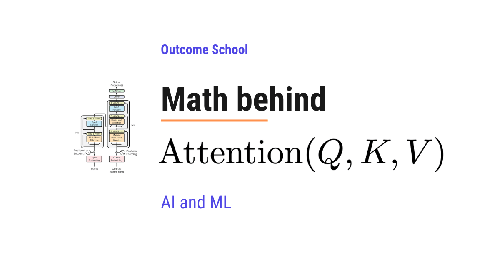
Attention works by comparing the Query (Q) of each word with the Key (K) of every word to get scores, turning those scores into weights using softmax, and then using the weights to mix the Values (V). The formula is softmax(Q x K^T / sqrt(d_k)) x V.
In this blog, we will learn about the math behind Attention: Query(Q), Key(K), and Value(V) with a step-by-step numeric example.
We will cover the following:
- The Attention Formula
- Setting Up: From Words to Vectors
- Creating Q, K, and V Matrices
- Computing Attention Scores (Q x K^T)
- Scaling the Scores
- Applying Softmax
- Computing the Final Output (Attention Weights x V)
- Putting It All Together
Let's get started.
The Attention Formula
The core formula for Scaled Dot-Product Attention is:
Attention(Q, K, V) = softmax(Q x K^T / sqrt(d_k)) x V
Here:
Qis the Query matrixKis the Key matrixVis the Value matrixK^Tis the transpose of the Key matrixd_kis the dimension of the Key vectorsqrtmeans square root
Do not worry if this formula looks complex. We will break it down step by step with actual numbers. By the end of this blog, every part of this formula will be clear.
The idea is simple: we compare what each word is looking for (Query) with what every other word offers (Key), and then use those comparisons to collect the actual information (Value) from the most relevant words.
Now, let's see this with real numbers.
Setting Up: From Words to Vectors
Let's take a simple sentence with 3 words:
"I love AI"
In a Transformer, each word is first converted into a vector (i.e. a list of numbers) called an embedding. Just for the sake of understanding, we will use very small vectors of size 4 (i.e. d_emb = 4).
"I" → [1.0, 0.0, 1.0, 0.0]
"love" → [0.0, 1.0, 0.0, 1.0]
"AI" → [1.0, 1.0, 0.0, 0.0]
We stack these into an input matrix X of shape 3 x 4 (3 words, each with 4 numbers):
X = | 1.0 0.0 1.0 0.0 | ← "I"
| 0.0 1.0 0.0 1.0 | ← "love"
| 1.0 1.0 0.0 0.0 | ← "AI"
Here, each row is one word and each column is one number in the embedding. This is our starting point.
Creating Q, K, and V Matrices
Now, we need to create three separate matrices: Q (Query), K (Key), and V (Value).
How do we create them? We multiply the input matrix X with three separate weight matrices: W_Q, W_K, and W_V. These weight matrices are learned during training.
Q = X x W_Q
K = X x W_K
V = X x W_V
For our example, let's say d_k = 3 (i.e. we want Q, K, V vectors of size 3). So each weight matrix has the shape 4 x 3 (input dimension 4, output dimension 3).
Let's use the following weight matrices for the sake of understanding:
W_Q = | 1 0 1 |
| 0 1 0 |
| 1 0 0 |
| 0 1 1 |
W_K = | 0 1 0 |
| 1 0 1 |
| 0 0 1 |
| 1 1 0 |
W_V = | 1 0 0 |
| 0 1 0 |
| 0 0 1 |
| 1 1 0 |
Now, let's compute Q, K, and V.
Computing Q = X x W_Q:
Q = | 1.0 0.0 1.0 0.0 | | 1 0 1 |
| 0.0 1.0 0.0 1.0 | x | 0 1 0 |
| 1.0 1.0 0.0 0.0 | | 1 0 0 |
| 0 1 1 |
For the first row ("I"): [1*1 + 0*0 + 1*1 + 0*0, 1*0 + 0*1 + 1*0 + 0*1, 1*1 + 0*0 + 1*0 + 0*1] = [2, 0, 1]
For the second row ("love"): [0*1 + 1*0 + 0*1 + 1*0, 0*0 + 1*1 + 0*0 + 1*1, 0*1 + 1*0 + 0*0 + 1*1] = [0, 2, 1]
For the third row ("AI"): [1*1 + 1*0 + 0*1 + 0*0, 1*0 + 1*1 + 0*0 + 0*1, 1*1 + 1*0 + 0*0 + 0*1] = [1, 1, 1]
Q = | 2 0 1 | ← "I"
| 0 2 1 | ← "love"
| 1 1 1 | ← "AI"
Computing K = X x W_K:
For the first row ("I"): [1*0 + 0*1 + 1*0 + 0*1, 1*1 + 0*0 + 1*0 + 0*1, 1*0 + 0*1 + 1*1 + 0*0] = [0, 1, 1]
For the second row ("love"): [0*0 + 1*1 + 0*0 + 1*1, 0*1 + 1*0 + 0*0 + 1*1, 0*0 + 1*1 + 0*1 + 1*0] = [2, 1, 1]
For the third row ("AI"): [1*0 + 1*1 + 0*0 + 0*1, 1*1 + 1*0 + 0*0 + 0*1, 1*0 + 1*1 + 0*1 + 0*0] = [1, 1, 1]
K = | 0 1 1 | ← "I"
| 2 1 1 | ← "love"
| 1 1 1 | ← "AI"
Computing V = X x W_V:
For the first row ("I"): [1*1 + 0*0 + 1*0 + 0*1, 1*0 + 0*1 + 1*0 + 0*1, 1*0 + 0*0 + 1*1 + 0*0] = [1, 0, 1]
For the second row ("love"): [0*1 + 1*0 + 0*0 + 1*1, 0*0 + 1*1 + 0*0 + 1*1, 0*0 + 1*0 + 0*1 + 1*0] = [1, 2, 0]
For the third row ("AI"): [1*1 + 1*0 + 0*0 + 0*1, 1*0 + 1*1 + 0*0 + 0*1, 1*0 + 1*0 + 0*1 + 0*0] = [1, 1, 0]
V = | 1 0 1 | ← "I"
| 1 2 0 | ← "love"
| 1 1 0 | ← "AI"
Now, we have our Q, K, and V matrices ready.
Note: In real models, these weight matrices are not set by hand. They are learned during training. We are using simple numbers here for the sake of understanding.
Till now, we have learned how to create Q, K, and V from the input. Now, let's move to the next step.
Computing Attention Scores (Q x K^T)
The first step in the attention formula is to compute Q x K^T.
This tells us how much each word should attend to every other word. We multiply the Query of each word with the Key of every other word.
First, we need K^T (transpose of K). Transposing simply means we swap the rows and columns. The first row becomes the first column, the second row becomes the second column, and so on:
K^T = | 0 2 1 |
| 1 1 1 |
| 1 1 1 |
Now, let's compute Q x K^T:
Q x K^T = | 2 0 1 | | 0 2 1 |
| 0 2 1 | x | 1 1 1 |
| 1 1 1 | | 1 1 1 |
For "I" attending to all words:
- "I" → "I":
2*0 + 0*1 + 1*1=1 - "I" → "love":
2*2 + 0*1 + 1*1=5 - "I" → "AI":
2*1 + 0*1 + 1*1=3
For "love" attending to all words:
- "love" → "I":
0*0 + 2*1 + 1*1=3 - "love" → "love":
0*2 + 2*1 + 1*1=3 - "love" → "AI":
0*1 + 2*1 + 1*1=3
For "AI" attending to all words:
- "AI" → "I":
1*0 + 1*1 + 1*1=2 - "AI" → "love":
1*2 + 1*1 + 1*1=4 - "AI" → "AI":
1*1 + 1*1 + 1*1=3
"I" "love" "AI"
Scores = | 1 5 3 | ← "I"
| 3 3 3 | ← "love"
| 2 4 3 | ← "AI"
Here, we can see that the word "I" gives the highest attention score of 5 to "love", meaning "I" finds "love" the most relevant. The word "love" gives equal scores of 3 to all words. The word "AI" gives the highest score of 4 to "love".
This was all about computing the attention scores. Now, let's move to scaling.
Scaling the Scores
Now, we divide every score by sqrt(d_k).
In our example, d_k = 3 (the dimension of our Key vectors), so sqrt(3) = 1.732.
Now, the question is: why do we scale? The answer is: if the dot product values are too large, the softmax function in the next step will produce very extreme values (close to 0 or 1). This makes it difficult for the model to learn. Scaling keeps the values in a manageable range. We have a detailed blog on the Math behind √dₖ Scaling Factor in Attention that explains this in depth.
Scaled Scores = Scores / sqrt(3)
"I" "love" "AI"
Scaled Scores = | 0.577 2.887 1.732 | ← "I"
| 1.732 1.732 1.732 | ← "love"
| 1.155 2.309 1.732 | ← "AI"
Here, we can notice that the relative order of the scores has not changed. The word "I" still attends to "love" the most. But the values are now smaller, which is exactly what we wanted.
In the future, I plan to write about why we choose to divide by sqrt(d_k) instead of some other factor.
Now, let's apply softmax.
Applying Softmax
Now, we apply the softmax function to each row. Softmax converts the scores into probabilities that add up to 1.
The softmax formula for a value x_i in a row is:
softmax(x_i) = e^(x_i) / sum(e^(x_j) for all j in that row)
Here, e is the mathematical constant (approximately 2.718). Do not worry about the formula too much. We will compute it step by step.
For the "I" row: [0.577, 2.887, 1.732]
e^0.577= 1.781e^2.887= 17.940e^1.732= 5.651- Sum = 1.781 + 17.940 + 5.651 = 25.372
Attention Weights:
- "I" → "I": 1.781 / 25.372 = 0.070
- "I" → "love": 17.940 / 25.372 = 0.707
- "I" → "AI": 5.651 / 25.372 = 0.223
For the "love" row: [1.732, 1.732, 1.732]
All values are equal, so each word gets equal attention:
- "love" → "I": 0.333
- "love" → "love": 0.333
- "love" → "AI": 0.333
For the "AI" row: [1.155, 2.309, 1.732]
e^1.155= 3.174e^2.309= 10.063e^1.732= 5.651- Sum = 3.174 + 10.063 + 5.651 = 18.888
Attention Weights:
- "AI" → "I": 3.174 / 18.888 = 0.168
- "AI" → "love": 10.063 / 18.888 = 0.533
- "AI" → "AI": 5.651 / 18.888 = 0.299
The final Attention Weight Matrix is:
"I" "love" "AI"
Attention Weights = | 0.070 0.707 0.223 | ← "I"
| 0.333 0.333 0.333 | ← "love"
| 0.168 0.533 0.299 | ← "AI"
Here, we can see that:
- The word "I" pays 70.7% of its attention to "love", 22.3% to "AI", and only 7.0% to itself.
- The word "love" pays equal attention to all three words (33.3% each).
- The word "AI" pays 53.3% of its attention to "love", 29.9% to itself, and 16.8% to "I".
Each row adds up to 1.0 (i.e. 100%). This is what softmax ensures.
Now, we have the attention weights. It is time to compute the final output.
Computing the Final Output (Attention Weights x V)
Now, we multiply the Attention Weight Matrix with the Value matrix V to get the final output.
Output = Attention Weights x V
Output = | 0.070 0.707 0.223 | | 1 0 1 |
| 0.333 0.333 0.333 | x | 1 2 0 |
| 0.168 0.533 0.299 | | 1 1 0 |
For "I":
0.070*1 + 0.707*1 + 0.223*1=1.0000.070*0 + 0.707*2 + 0.223*1=1.6370.070*1 + 0.707*0 + 0.223*0=0.070
For "love":
0.333*1 + 0.333*1 + 0.333*1=0.9990.333*0 + 0.333*2 + 0.333*1=0.9990.333*1 + 0.333*0 + 0.333*0=0.333
For "AI":
0.168*1 + 0.533*1 + 0.299*1=1.0000.168*0 + 0.533*2 + 0.299*1=1.3650.168*1 + 0.533*0 + 0.299*0=0.168
Output = | 1.000 1.637 0.070 | ← "I"
| 1.000 1.000 0.333 | ← "love"
| 1.000 1.365 0.168 | ← "AI"
Here, we can see that each word now has a new vector that is a weighted combination of the Value vectors of all words. The word "I" gets a new representation that is heavily influenced by the Value of "love" (because it had the highest attention weight of 0.707 for "love"). This is the power of the attention mechanism.
The output for each word is no longer just about that word alone. It now contains information from all the other words, weighted by how relevant they are. This is how the model understands context and relationships between words.
This was all about computing the final output. Now, let's put it all together.
Putting It All Together
Let's summarize the entire computation in one place:
Step 1: Start with the input embeddings (X).
Step 2: Multiply X with weight matrices to get Q, K, and V.
Step 3: Compute attention scores by multiplying Q with the transpose of K (Q x K^T).
Step 4: Scale the scores by dividing by sqrt(d_k).
Step 5: Apply softmax to get attention weights (probabilities).
Step 6: Multiply attention weights with V to get the final output.
The entire process in one formula:
Attention(Q, K, V) = softmax(Q x K^T / sqrt(d_k)) x V
Now, every part of this formula is clear.
This is how the math behind Query, Key, and Value works in the Attention mechanism.
Every Large Language Model uses this exact computation at its core. The numbers we used were small for the sake of understanding, but in real models, the dimensions are much larger (512, 1024, or more) and the weight matrices are learned during training.
In real models, this Q, K, and V computation also runs many times in parallel, once per head. We have a detailed blog on Multi-Head Attention in Transformers that explains how these parallel heads work.
Now, we must have understood the math behind Attention: Q, K, and V.
Frequently Asked Questions
Are the weight matrices for Q, K, and V set by hand?
No. In real models, the weight matrices W_Q, W_K, and W_V are learned during training. Simple hand-picked numbers are only used for the sake of understanding the math.
Does scaling by sqrt(d_k) change which word gets the most attention?
No. Dividing by sqrt(d_k) does not change the relative order of the scores. It only makes the values smaller, so that softmax does not produce extreme values close to 0 or 1, which would make it difficult for the model to learn.
Why do the attention weights in each row add up to 1?
Because softmax converts the scores into probabilities. Softmax is applied to each row, and it makes sure that every row adds up to 1.0, which is 100%. So, each weight tells us what share of its attention a word pays to every other word.
Is the attention output of a word only about that word?
No. The output for each word is a weighted combination of the Value vectors of all words. It contains information from all the other words, weighted by how relevant they are. This is how the model understands context and relationships between words.
Do real LLMs use the same attention computation with bigger numbers?
Yes. Every Large Language Model uses this exact computation at its core. In real models, the dimensions are much larger, like 512, 1024, or more. The Q, K, and V computation also runs many times in parallel, once per head.
Lesson 3.11
Why Do We Scale Attention by √dₖ? The Math Behind the Scaling Factor
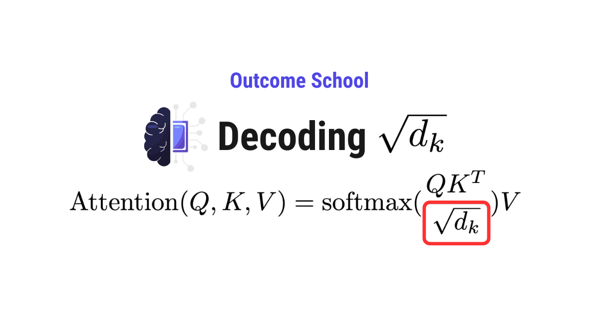
We scale the dot product attention by √dₖ because the dot products grow bigger as the dimension dₖ grows. Such big values push the softmax to extreme values, and dividing by √dₖ brings them back to a healthy range.
In this blog, we will learn about why we scale the dot product attention by √dₖ in the Transformer architecture with a step-by-step numeric example.
If you have already read our blog on Math behind Attention - Q, K, and V, you know the attention formula and the computation steps. In that blog, we divided the attention scores by sqrt(d_k) and moved on. Now, it is time to understand why we do that. Why exactly sqrt(d_k)? Why not divide by 2 or 10 or any other number?
The goal is to make you understand why we scale by √dₖ, which means that there are a few simplifications done while writing this. If you understand the reasoning behind the scaling, then my mission will be accomplished. If you read this article completely, I am sure my mission will be accomplished.
We will cover the following:
- The Attention Formula (Quick Recap)
- What Happens Without Scaling?
- Why Do Dot Products Grow with dₖ?
- Understanding Variance of the Dot Product
- Proving It Step by Step: Variance of the Dot Product is dₖ
- What Large Dot Products Do to Softmax
- Why √dₖ is the Right Scaling Factor
- Seeing It with Real Numbers
- Putting It All Together
Let's get started.
The Attention Formula (Quick Recap)
This scaling step lives inside the larger Transformer architecture. The formula for Scaled Dot-Product Attention is:
Attention(Q, K, V) = softmax(Q x K^T / sqrt(d_k)) x V
Here:
Qis the Query matrixKis the Key matrixVis the Value matrixd_kis the dimension of the Key vectorsqrt(d_k)is the square root ofd_k
The part we are focusing on today is / sqrt(d_k). This is the scaling factor. We divide the dot product scores by the square root of the Key dimension before passing them to softmax.
Now, the question is: why do we need this scaling? The answer lies in understanding what happens without it.
What Happens Without Scaling?
Let's say we skip the scaling step and compute attention directly as below:
Attention = softmax(Q x K^T) x V
In real Transformer models, d_k is 64, 128, or even larger. When d_k is large, the scores Q x K^T can become very large numbers (we will see why in the next section). And when we pass very large values into softmax, something bad happens.
The softmax function (which converts scores into probabilities) produces outputs that are extremely close to 0 and 1. One word gets almost all the attention (close to 1.0), and all other words get almost no attention (close to 0.0). The model stops spreading attention across multiple relevant words. It becomes too confident about one single word.
This is a big problem because:
- The model cannot learn from multiple words at once.
- The gradients (the signals used to update the model during training) become extremely small, almost zero. This is called the vanishing gradient problem.
- When gradients are too small, the model stops learning effectively.
So, here comes the scaling by sqrt(d_k) to the rescue.
Softmax has one more consequence worth knowing. Its outputs always add up to 1, so a token must give its full attention away even when nothing in the sentence deserves it. We have a detailed blog on Attention Sinks that explains where that leftover attention ends up.
But before we understand the solution, we must first understand why dot products grow when d_k increases.
Why Do Dot Products Grow with dₖ?
The dot product of two vectors is computed by multiplying each pair of elements and then adding them all up.
Let's say we have two vectors q and k, each of dimension d_k:
dot_product = q_1*k_1 + q_2*k_2 + q_3*k_3 + ... + q_{d_k}*k_{d_k}
Here, we are adding d_k number of terms together.
Now, let's think about this simply. Each term q_i * k_i is a number. It can be positive or negative. When we add more and more of these numbers together, they do not always cancel out perfectly. Some add up, some cancel, but overall the total tends to grow in magnitude. The more dimensions we have, the more terms we add, and the larger the dot product can become.
For example, if d_k = 4, we are adding just 4 terms, so the dot product stays small. But if d_k = 512, we are adding 512 terms. Even though some positive and negative values cancel out, the sheer number of terms makes the total much larger in magnitude.
The dot product grows with d_k. This is the core problem. The larger the dimension, the larger the dot product, and the worse the softmax behaves.
Now, let's understand this more precisely using the concept of variance.
Understanding Variance of the Dot Product
Do not worry, we will keep this simple.
Variance tells us how spread out a set of values can be from the average. A high variance means the values are far from the average. A low variance means the values stay close to the average.
Suppose we are measuring the height of students in a class. If all students are between 5.0 and 5.5 feet, the variance is low. If students range from 3.0 to 7.0 feet, the variance is high. Similarly, when we talk about the variance of the dot product, we are asking: how spread out can the dot product values be?
Now, let's assume that each element in the Query vector and the Key vector is a random number with:
- Mean (average) = 0
- Variance = 1
This is a standard assumption in machine learning. The input values are typically normalized to have zero mean and unit variance.
Now, what is the variance of one single product q_i * k_i?
When we multiply two independent random numbers, each with mean 0 and variance 1, the result has:
- Mean = 0
- Variance = 1 x 1 = 1 (we will see why in the next section)
So, each individual product q_i * k_i has a variance of 1.
Now, the dot product is the sum of d_k such products:
dot_product = q_1*k_1 + q_2*k_2 + ... + q_{d_k}*k_{d_k}
When we add d_k independent terms, each with variance 1, the total variance is:
Variance(dot_product) = d_k x 1 = d_k
This is the key insight. The variance of the dot product is equal to dₖ. The larger the d_k, the more spread out the dot product values become. And more spread out values cause problems for softmax.
Proving It Step by Step: Variance of the Dot Product is dₖ
Now, let's prove why the variance equals d_k, step by step, for the sake of understanding. Do not worry, we will keep it simple.
We already know that the mean of our dot product is zero (because the average value of each q_i and k_i is zero).
Now, in general, variance is calculated as below:
Variance = Average of (value - mean)^2
But since our mean is zero, this becomes:
Variance = Average of (value - 0)^2
= Average of value^2
So, when the mean is zero, the variance simplifies to the average of the squared values. This means we need to find the average of the squared dot product.
Now, let's see what happens when we square the dot product. Let's take a small example with d_k = 3:
dot_product = q_1*k_1 + q_2*k_2 + q_3*k_3
When we square this, we multiply the sum by itself. It is just like expanding (a + b + c)^2:
(a + b + c)^2 = a*a + a*b + a*c
+ b*a + b*b + b*c
+ c*a + c*b + c*c
Here, a = q_1*k_1, b = q_2*k_2, c = q_3*k_3. So we get 9 terms (3 x 3). Now, the key question is: what is the average value of each of these 9 terms?
These 9 terms fall into two groups:
Group 1: Terms where a term is multiplied by itself (like a*a, b*b, c*c)
These are the terms where the same pair is multiplied by itself. For example, (q_1*k_1) * (q_1*k_1) = q_1^2 * k_1^2. There are 3 such terms.
What is the average value of each? Let's use the variance formula we learned above. We know that:
Variance = Average of value^2 (when mean is zero)
Since q_1 has mean 0 and variance 1:
1 = Average of q_1^2
Average of q_1^2 = 1
Similarly, since k_1 has mean 0 and variance 1:
Average of k_1^2 = 1
Since q_1 and k_1 are independent, the average of their product is the product of their averages:
Average of (q_1^2 * k_1^2) = Average of q_1^2 * Average of k_1^2 = 1 * 1 = 1
Each of these terms has an average value of 1.
Group 2: Terms where different pairs are multiplied (like a*b, a*c, b*c)
These are the terms where two different pairs are mixed together. For example, (q_1*k_1) * (q_2*k_2) = q_1 * k_1 * q_2 * k_2. There are 6 such terms.
What is the average value of each? Since q_1, k_1, q_2, k_2 are all independent, the average of their product is the product of their averages:
Average of (q_1 * k_1 * q_2 * k_2) = Average of q_1 * Average of k_1 * Average of q_2 * Average of k_2
= 0 * 0 * 0 * 0
= 0
Here, since each of them has an average (mean) of zero, the entire product becomes zero.
Each of these terms has an average value of 0.
Putting it together:
Out of 9 terms:
- 3 terms (Group 1) each contribute an average of 1
- 6 terms (Group 2) each contribute an average of 0
Variance = 3 * 1 + 6 * 0 = 3
And d_k = 3. So the variance equals d_k.
Now, this same logic works for any value of d_k. If d_k = 64, we get 64 * 64 = 4096 total terms. Out of these, 64 terms (Group 1) each contribute 1, and the remaining 4032 terms (Group 2) each contribute 0. So the variance is 64, which is exactly d_k.
The variance of the dot product is always exactly equal to dₖ. This is not an approximation. It is mathematically exact.
What Large Dot Products Do to Softmax
The softmax function converts a list of numbers into probabilities. The formula is:
softmax(x_i) = e^(x_i) / sum(e^(x_j) for all j)
Here, e is the mathematical constant (approximately 2.718).
Now, the important thing to understand is: e^x grows extremely fast as x increases. Let's see with real numbers to understand how fast it grows:
e^1 = 2.718
e^5 = 148.4
e^10 = 22,026
e^20 = 485,165,195
e^50 = 5,184,705,528,587,072,045
Here, we can see that the difference between e^10 and e^50 is astronomically large.
Now, let's say we have three attention scores: [50, 10, 5] (just for the sake of understanding how softmax behaves with large numbers). When we apply softmax:
e^50 = 5,184,705,528,587,072,045
e^10 = 22,026
e^5 = 148
softmax = [5,184,705,528,587,072,045 / total, 22,026 / total, 148 / total]
The first value completely dominates. The softmax output will be approximately [1.0, 0.0, 0.0].
Now, compare this with smaller scores: [5, 1, 0.5]. When we apply softmax:
e^5 = 148.4
e^1 = 2.718
e^0.5 = 1.649
Sum = 152.780
softmax = [148.4/152.780, 2.718/152.780, 1.649/152.780]
= [0.971, 0.018, 0.011]
Here, we can see that even with smaller scores, the first value still gets the most attention. But the other values are not completely zero. The model can still learn from all positions.
This is the problem. When d_k is large and we do not scale, the dot product scores become so large that softmax outputs become almost one-hot. One-hot means one value is 1.0 and the rest are 0.0. The model acts as if only one word matters and ignores everything else. The gradients vanish, and learning stops.
Why √dₖ is the Right Scaling Factor
Now that we understand the problem, the solution becomes clear. We need to keep the dot product values small enough so that softmax can produce well-distributed attention weights.
We need to bring the variance of the dot product back to 1, regardless of how large d_k is.
We know that:
Variance(dot_product) = d_k
If we divide the dot product by some constant c, the variance becomes:
Variance(dot_product / c) = d_k / c^2
Note: When we divide a random variable by a constant c, the variance gets divided by c^2 (not c). This is a standard rule in statistics. Let's understand why.
Variance measures how spread out values are from the mean. It is calculated using squared differences from the mean. So, when we divide all values by c, each difference from the mean also gets divided by c. But since variance squares those differences, the division by c becomes division by c^2.
Let's see with a simple example. Suppose we have three values: [2, 4, 6].
Mean = (2 + 4 + 6) / 3 = 4
Differences from mean: [2-4, 4-4, 6-4] = [-2, 0, 2]
Squared differences: [4, 0, 4]
Variance = (4 + 0 + 4) / 3 = 2.67
Now, let's divide all values by c = 2. The new values are [1, 2, 3].
New Mean = (1 + 2 + 3) / 3 = 2
Differences from mean: [1-2, 2-2, 3-2] = [-1, 0, 1]
Squared differences: [1, 0, 1]
New Variance = (1 + 0 + 1) / 3 = 0.67
Here, we can see that the original variance was 2.67 and the new variance is 0.67. And 2.67 / 4 = 0.67. We divided by c = 2, but the variance got divided by c^2 = 4.
This happens because variance uses squared differences. When each value shrinks by a factor of c, the squared differences shrink by a factor of c^2.
Now, coming back to our dot product. We had:
Variance(dot_product / c) = d_k / c^2
We want this variance to equal 1 so that the dot product values stay in a manageable range. So, we set:
d_k / c^2 = 1
c^2 = d_k
c = sqrt(d_k)
This is why we divide by sqrt(d_k). It is the exact value that brings the variance back to 1.
After scaling:
Variance(dot_product / sqrt(d_k)) = d_k / d_k = 1
The scaled dot product values now have a variance of 1, meaning they stay in a manageable range regardless of how large d_k is. The softmax function receives reasonable inputs and produces well-distributed attention weights.
This is not an arbitrary choice. It is mathematically the correct scaling factor. The authors of the original "Attention Is All You Need" paper (the paper that introduced the Transformer architecture) chose this value for exactly this reason.
Seeing It with Real Numbers
Now, let's see the effect of scaling with two different dimensions.
Example 1: Small dimension (dₖ = 4)
Let's say we have:
q = [1, 0, 1, 0]
k = [0, 1, 1, 1]
dot_product = 1*0 + 0*1 + 1*1 + 0*1 = 1
sqrt(d_k) = sqrt(4) = 2
scaled_score = 1 / 2 = 0.5
The original score is 1, the scaled score is 0.5. Both values are small, so softmax will behave well in either case. Scaling does not matter much when d_k is small.
Example 2: Large dimension (dₖ = 64)
Let's say we have three words with dot product scores: [14, 10, 12].
Without scaling:
e^14 = 1,202,604
e^10 = 22,026
e^12 = 162,755
Sum = 1,387,386
softmax = [0.867, 0.016, 0.117]
Here, the first word gets 86.7% of the attention. The second word gets only 1.6%. The distribution is quite extreme even though the raw scores (14, 10, 12) are not that far apart.
With scaling (divide by sqrt(64) = 8):
Scaled scores: [14/8, 10/8, 12/8] = [1.75, 1.25, 1.5]
e^1.75 = 5.755
e^1.25 = 3.490
e^1.5 = 4.482
Sum = 13.727
softmax = [5.755/13.727, 3.490/13.727, 4.482/13.727]
= [0.419, 0.254, 0.326]
Here, we can see the difference. After scaling, the attention is distributed much more evenly: 41.9%, 25.4%, and 32.6%. The model can now learn from all three words instead of focusing almost entirely on one word.
This is how scaling by sqrt(d_k) solves the problem.
Putting It All Together
Let's summarize what we have learned:
The Problem: The dot product of the Query and Key vectors grows in magnitude as the dimension d_k increases. The variance of the dot product is equal to d_k. Large dot product values push softmax into extreme regions where it outputs values close to 0 or 1. This causes the vanishing gradient problem and the model stops learning.
The Solution: We divide the dot product by sqrt(d_k) before applying softmax. This brings the variance back to 1, keeping the scores in a manageable range regardless of the dimension size.
Why sqrt(d_k)? Because when we divide a value with variance d_k by sqrt(d_k), the new variance becomes d_k / d_k = 1. It is mathematically the exact right value.
The full attention formula with scaling:
Attention(Q, K, V) = softmax(Q x K^T / sqrt(d_k)) x V
This single line, / sqrt(d_k), looks simple. But without it, the Transformer architecture would struggle to learn effectively, especially with larger dimensions. It is a small but very important detail that makes the entire attention mechanism work.
Now, we must have understood why we scale the dot product attention by √dₖ.
Frequently Asked Questions
Does scaling by sqrt(d_k) matter when d_k is small?
Not much. When d_k is small, the dot product stays small, so softmax behaves well with or without scaling. For example, with d_k = 4, a score of 1 becomes 0.5 after scaling, and both values are small. Scaling becomes important as d_k grows larger.
Why do we divide by sqrt(d_k) and not some other number?
When we divide a value by a constant c, its variance gets divided by c^2. The variance of the dot product is d_k, so we need d_k / c^2 = 1, which gives c = sqrt(d_k). It is the exact value that brings the variance back to 1.
Is the variance of the dot product only approximately equal to d_k?
No. The variance of the dot product is exactly equal to d_k, not an approximation. This holds under the standard assumption that each element of the Query and Key vectors has mean 0 and variance 1, and the elements are independent.
Who introduced the sqrt(d_k) scaling factor in attention?
The scaling factor comes from the original "Attention Is All You Need" paper, which introduced the Transformer architecture. The authors chose sqrt(d_k) because it is mathematically the correct value to keep the variance of the scores at 1.
Lesson 3.12
What is Causal Masking in Attention and Why Do LLMs Need It?
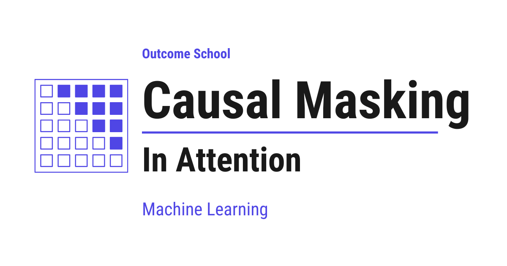
Causal Masking in Attention is a mechanism that blocks the future tokens, so that each token can look only at itself and the tokens before it, never at the tokens after it.
In this blog, we will learn about causal masking in attention.
We will start with the introduction of causal masking, understand the problem of seeing future tokens through an example, and then walk through its implementation to see how masked attention prevents the model from accessing future tokens.
Let's get started.
As we all know, the attention layer is the most important component of the Transformer architecture and the key building block behind LLMs (Large Language Models).
Inside the attention layer, we use causal masking. This ensures that a token can attend only to itself and past tokens, never to future tokens.
Causal masking is a mechanism that uses a mask matrix to block future positions in the attention score matrix, ensuring each token attends only to itself and past tokens, never to future tokens.
This is exactly why the Decoder of a Transformer can look only backward, while the Encoder reads the whole input in both directions.
Let's try to understand this with an example.
Take the sentence: "I love teaching AI"
Token positions:
[ I | love | teaching | AI ]
1 2 3 4
Let's see what happens without causal masking.
Without Causal Masking
- While predicting "love", the model could attend to "teaching" and "AI".
- While predicting "teaching", it could already see "AI".
This is not something we want.
We should not allow the model to see the future, because doing so would introduce information leakage.
If future tokens are visible, the model can learn shortcuts by using words that it is supposed to predict as inputs. This leads to unrealistically good training performance but breaks the fundamental assumption of language modeling: predicting the next token using only past context.
During inference, future tokens do not exist.
If the model relied on future information during training, it would fail when asked to generate text step by step.
Causal masking ensures that training conditions match inference conditions, forcing the model to learn genuine language patterns instead of memorizing answers.
So, if we allow the model to see the future, training becomes easier, but generation becomes incorrect.
Let's see what happens with causal masking.
With Causal Masking
- While predicting "love", the model attends to "I".
- While predicting "teaching", it attends to "I" and "love".
- While predicting "AI", it attends to "I", "love", and "teaching".
Here, we do not allow the model to see the future, so it is forced to behave exactly as it would during inference.
Blocking future tokens is one way to limit what a token can attend to. Limiting how far back a token can look is another, and we have a detailed blog on Sliding Window Attention that covers this end to end.
Now, let's understand how this is implemented using a mask matrix.
Implementation of Causal Masking
In the attention layer, we compute an attention score matrix.
An attention score is a number that indicates how relevant one token is to another token.
- Each token compares itself with all other tokens.
- The attention score measures how much focus to give to each token.
- A higher score means more attention.
- A lower score means less attention.
As a result, each token computes a score with every other token, forming a 2D matrix where rows represent query tokens and columns represent key tokens. We have a detailed blog on Math behind Attention: Q, K, V that explains how query and key vectors are computed.
Since the sentence "I love teaching AI" contains 4 tokens, the attention scores form a 4 × 4 matrix.
Each row corresponds to a query token, and each column corresponds to a key token.
Each value in this matrix indicates how much one token should attend to another before normalization.
Example attention score matrix (before masking):
I love teaching AI
--------------------------------
I | 2.0 | 1.0 | 3.0 | 0.5 |
love | 1.5 | 2.5 | 0.5 | 1.0 |
teaching | 0.2 | 1.0 | 2.0 | 1.5 |
AI | 0.1 | 0.3 | 0.7 | 2.5 |
Ideally, masking is applied before softmax. Let's see what happens if we skip masking and directly apply softmax.
After Softmax: Attention Weights
I love teaching AI
--------------------------------
I | 0.23 | 0.09 | 0.63 | 0.05 |
love | 0.21 | 0.58 | 0.08 | 0.13 |
teaching | 0.08 | 0.17 | 0.47 | 0.28 |
AI | 0.07 | 0.08 | 0.12 | 0.73 |
At this stage, every token can attend to every other token, including future ones.
- While predicting "love", the model attends not only to past tokens but also to future tokens: it assigns an attention weight of 0.08 to "teaching" and 0.13 to "AI", which indicates information leakage.
- While predicting "teaching", the model already attends to the future token "AI" with an attention weight of 0.28, even though "AI" should not be visible at this stage.
Because of this issue, masking is required, and for that we use a causal mask matrix.
The Causal Mask Matrix
We create a mask matrix of the same size. This matrix defines which positions are allowed (1) and which are blocked (0).
I love teaching AI
--------------------------
I | 1 | 0 | 0 | 0 |
love | 1 | 1 | 0 | 0 |
teaching | 1 | 1 | 1 | 0 |
AI | 1 | 1 | 1 | 1 |
This is our mask matrix, and we will apply it to the score matrix to block future tokens.
Keep this mask matrix in mind as you read further, as we will use it to mask the attention score matrix.
1→ attention allowed0→ attention blocked (future)
After applying the mask, the blocked positions are set to −∞.
Causal masking blocks access to future tokens by assigning −∞ to those positions.
In some time, we will understand why −∞ is used.
Example attention score matrix (before masking):
I love teaching AI
--------------------------------
I | 2.0 | 1.0 | 3.0 | 0.5 |
love | 1.5 | 2.5 | 0.5 | 1.0 |
teaching | 0.2 | 1.0 | 2.0 | 1.5 |
AI | 0.1 | 0.3 | 0.7 | 2.5 |
Masked attention score matrix (after masking using our mask matrix):
I love teaching AI
--------------------------------
I | 2.0 | -∞ | -∞ | -∞ |
love | 1.5 | 2.5 | -∞ | -∞ |
teaching | 0.2 | 1.0 | 2.0 | -∞ |
AI | 0.1 | 0.3 | 0.7 | 2.5 |
When the mask is applied, positions marked 0 in the mask matrix are blocked by setting their attention scores to −∞, while positions marked 1 retain their original values in the attention score matrix.
Why −∞? As we have to apply softmax, and because of how softmax works mathematically, −∞ becomes exactly zero after softmax. If we used zero instead, softmax would still assign a non-zero probability, allowing the model to partially attend to future tokens and defeating the purpose of causal masking.
After Softmax: Attention Weights
I love teaching AI
--------------------------------
I | 1.00 | 0.00 | 0.00 | 0.00 |
love | 0.27 | 0.73 | 0.00 | 0.00 |
teaching | 0.11 | 0.24 | 0.65 | 0.00 |
AI | 0.07 | 0.08 | 0.12 | 0.73 |
Now, the future tokens receive zero attention:
- While predicting "love", the model attends to "I" with an attention weight of 0.27 and to itself ("love") with 0.73. It does not attend to the future tokens "teaching" and "AI", as both receive 0.00 attention.
- While predicting "teaching", the model attends to "I" (0.11) and "love" (0.24), and to itself ("teaching") with 0.65. It does not attend to the future token "AI", which has an attention weight of 0.00.
- While predicting "AI", the model attends to "I" (0.07), "love" (0.08), and "teaching" (0.12), and to itself ("AI") with 0.73.
Notice that every row still gives some weight to the first token "I", because it is the one token that every position can always see. This is exactly why the first tokens end up acting as attention sinks, the place where a model dumps the attention it does not need anywhere else.
This is how causal masking prevents the model from seeing future tokens.
Frequently Asked Questions
Why is minus infinity used for masking instead of zero?
Minus infinity becomes exactly zero after softmax. If we used zero instead, softmax would still assign a non-zero probability to the blocked positions. The model could then partially attend to future tokens, which defeats the purpose of causal masking.
Is the causal mask applied before or after softmax?
The causal mask is applied before softmax. The blocked positions in the attention score matrix are set to minus infinity, and then softmax turns them into zero attention weights. If we skip masking and apply softmax directly, every token can attend to future tokens.
Why do we need causal masking if future tokens do not exist during inference?
Causal masking makes training conditions match inference conditions. Without it, the model learns shortcuts during training by using the words it is supposed to predict. That gives unrealistically good training performance, but the model then fails when it generates text step by step.
Does the Encoder of a Transformer use causal masking?
No. The Decoder of a Transformer can look only backward because of causal masking. The Encoder reads the whole input in both directions.
What is the difference between causal masking and sliding window attention?
Causal masking blocks future tokens, so each token attends only to itself and the tokens before it. Sliding window attention limits how far back a token can look. Both limit what a token can attend to, but in different ways.
Lesson 3.13
What is Multi-Head Attention in Transformers and How Does It Work?
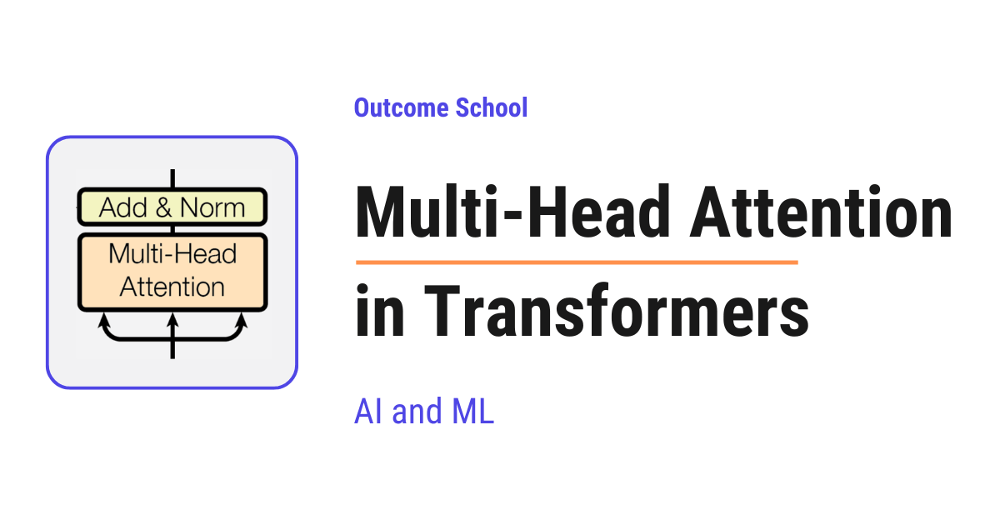
Multi-Head Attention is a mechanism that runs many Self Attention operations in parallel and then combines their outputs. In simple words, the model looks at the sentence with many pairs of eyes, and each pair focuses on a different aspect.
In this blog, we will learn about Multi-Head Attention in Transformers. We will understand what it is, how it works step by step, and why it gives Transformers their power to understand language so well.
We will cover the following:
- What is Multi-Head Attention?
- A quick recap of Self Attention
- Why do we need Multi-Head Attention?
- Step-by-step working of Multi-Head Attention
- A simple example walk-through
- Where Multi-Head Attention is used
- Advantages of Multi-Head Attention
Let's get started.
What is Multi-Head Attention?
Multi-Head Attention is a mechanism that runs many Self Attention operations in parallel, each with its own set of Q, K, and V projections, and then combines their outputs into a single richer representation.
In simple words, Multi-Head Attention = Multi + Head + Attention. The word "Head" means one independent Self Attention. The word "Multi" means we run many such heads in parallel. The word "Attention" means each head decides how much to focus on every other token.
So, instead of looking at the sentence with one pair of eyes, the model looks at the sentence with many pairs of eyes at the same time, and each pair of eyes focuses on a different aspect of the sentence.
For the sake of understanding, let's take an analogy.
Suppose we are reading a sentence and we want to fully understand it. One person reads the sentence and focuses on who is doing the action. Another person reads the same sentence and focuses on where the action is happening. Another person focuses on why the action is happening. At the end, we collect the notes from every person and combine them into one final understanding of the sentence.
That is exactly what Multi-Head Attention does. Each head is one expert reader, and the final answer is the combination of all the experts.
Multi-Head Attention was introduced in the famous paper "Attention Is All You Need" in 2017, the paper that gave us the Transformer.
We have a detailed blog on the Evolution of LLM Architecture that explains what came before this paper and what came after it.
A quick recap of Self Attention
Before jumping into Multi-Head Attention, we must know what Self Attention is.
In Self Attention, every token in a sentence looks at every other token in the same sentence to understand its meaning in context.
Self Attention uses three vectors for every token:
- Query (Q): what this token is looking for.
- Key (K): what this token offers to others.
- Value (V): the actual information this token carries.
All three, Q, K, and V, come from the same input sequence. That is why it is called Self Attention.
We have a detailed blog on the Math behind Attention - Q, K, and V that explains how these three vectors are created.
The Self Attention formula is:
Attention(Q, K, V) = softmax((Q . K^T) / sqrt(d_k)) . V
Here, we have done the following:
- Multiply
QandK^Tto find how much each token relates to every other token. - Divide by
sqrt(d_k)to keep the numbers stable. - Apply
softmaxto turn the scores into probabilities. - Multiply by
Vto get a weighted sum of values.
This is how Self Attention works for a single set of Q, K, and V. We call this a single attention head.
This was all about Self Attention. Now, it's time to learn about Multi-Head Attention.
Why do we need Multi-Head Attention?
The best way to learn this is by taking an example.
Consider the sentence:
I love AI
This is a short sentence, but there are many different relationships hidden in it.
Iis the subject of the sentence.loveis the action.AIis the object that the subject loves.Iandloveform a subject-verb relationship.loveandAIform a verb-object relationship.IandAIare connected through the meaning oflove.
Now, the question is: can a single attention head learn all of these relationships at the same time?
The answer is no. A single Self Attention head can only learn one type of relationship at a time. If one head is busy learning the subject-verb link, it cannot also learn the verb-object link with the same focus.
So, here comes Multi-Head Attention into the picture.
With multiple heads, each head can focus on a different type of relationship. One head can learn the subject-verb link. Another head can learn the verb-object link. Another head can learn the long-range link between the subject and the object. And so on.
This way, the model gets a much richer understanding of the same sentence.
Step-by-step working of Multi-Head Attention
Now, it's time to learn the exact steps of Multi-Head Attention.
Assume that we have an input sequence with d_model = 512 and we want to use h = 8 heads.
Here, d_model is the size of the vector that represents each token. In simple words, every token in the sentence is converted into a list of numbers, and d_model = 512 means each token is represented by 512 numbers. The bigger this number, the more information each token can carry.
Step 1: We start with the input embeddings. Every token in the sentence is converted into a vector of size d_model.
Step 2: We split the work across heads. We divide d_model by the number of heads. So, each head works with a smaller dimension.
- d_k = d_model / h = 512 / 8 = 64
Each head gets a dimension of 64 for its Q, K, and V.
Step 3: For every head, we use its own learned linear projections to create the Q, K, and V vectors.
- Q_i = Input x W_i_Q
- K_i = Input x W_i_K
- V_i = Input x W_i_V
Here, W_i_Q, W_i_K, and W_i_V are the weight matrices for head i that the model learns during training.
Note: Every head has its own set of weight matrices. This is what allows different heads to learn different patterns.
We can visualize how each head creates its own Q, K, and V as below:
Input token embedding
(d_model = 512)
|
+-------------------+-------------------+
| | |
own W_Q, W_K, W_V own W_Q, W_K, W_V own W_Q, W_K, W_V
| | ... |
↓ ↓ ↓
Q1 K1 V1 Q2 K2 V2 Q8 K8 V8
(each 64) (each 64) (each 64)
Head 1 Head 2 Head 8
Here, we can see that the same input embedding of size 512 goes into every head, but each head uses its own weight matrices to create its own smaller Q, K, and V vectors of size 64.
Step 4: Each head now runs Self Attention independently using its own Q_i, K_i, and V_i.
- head_i = Attention(Q_i, K_i, V_i) = softmax((Q_i . K_i^T) / sqrt(d_k)) . V_i
All 8 heads do this in parallel.
Step 5: We concatenate the output of all heads side by side.
- Concat(head_1, head_2, ..., head_8)
After concatenation, we get a vector of size h x d_k = 8 x 64 = 512, which is the same as d_model. So, the output dimension matches the input dimension.
Step 6: We pass the concatenated output through one more learned linear layer to mix the information from all heads.
- MultiHead(Q, K, V) = Concat(head_1, ..., head_8) . W_O
Here, W_O is a learned weight matrix.
This is the final output of Multi-Head Attention.
Here, we can visualize the full flow of Multi-Head Attention as below:
Input Embeddings (512)
|
+---------+-----------+-----------+----------+
| | | |
↓ ↓ ... ↓ ↓
Head 1 Head 2 Head N-1 Head N
(each head creates its own Q, K, V of size 64)
| | | |
↓ ↓ ↓ ↓
Output 1 Output 2 ... Output N-1 Output N
(64) (64) (64) (64)
| | | |
+---------+-----------+-----------+----------+
|
↓
Concatenate -> (512)
|
↓
Linear Layer W_O (512 -> 512)
|
↓
Final Output (512)
Here, we can see that every head runs Self Attention in parallel with its own W_Q, W_K, and W_V. Their outputs are joined together and passed through one more linear layer to produce the final output.
So, Multi-Head Attention = many Self Attentions running in parallel + one final mixing step.
A simple example walk-through
Let's take a small example to make this concrete.
Consider the same sentence:
I love AI
We have three tokens: I, love, AI.
Just for the sake of understanding, let's say we are using only 2 heads instead of 8. The idea remains exactly the same.
Step 1: Every token is converted into an embedding vector.
Step 2: We split the work across 2 heads. Each head gets its own smaller dimension.
Step 3: For each head, we create its own Q, K, and V using its own learned weight matrices. So now, we have:
- Head 1: Q1, K1, V1 for all three tokens
- Head 2: Q2, K2, V2 for all three tokens
Step 4: Each head runs Self Attention independently. Each head produces its own attention weight matrix.
Just for the sake of understanding, let's say Head 1 focuses on the subject-verb relationship. Its attention weights look like below:
Head 1 (subject-verb focus)
Attends to
I love AI
+-------+-------+-------+
I | 0.100 | 0.800 | 0.100 |
+-------+-------+-------+
From love | 0.700 | 0.200 | 0.100 |
+-------+-------+-------+
AI | 0.300 | 0.400 | 0.300 |
+-------+-------+-------+
Here, the token I is paying strong attention to love, and the token love is paying strong attention to I. This head has learned the subject-verb link.
Now, let's say Head 2 focuses on the verb-object relationship. Its attention weights look like below:
Head 2 (verb-object focus)
Attends to
I love AI
+-------+-------+-------+
I | 0.300 | 0.400 | 0.300 |
+-------+-------+-------+
From love | 0.100 | 0.200 | 0.700 |
+-------+-------+-------+
AI | 0.100 | 0.800 | 0.100 |
+-------+-------+-------+
Here, the token love is paying strong attention to AI, and the token AI is paying strong attention to love. This head has learned the verb-object link.
The numbers are just for the sake of understanding. Each row sums to 1 because of softmax.
Notice the key point. The same sentence "I love AI" produced two different attention patterns from two different heads. Head 1 saw the subject-verb structure. Head 2 saw the verb-object structure. Both views are correct, and both are useful.
Step 5: Each head produces its own output for every token. For the token love, Head 1 produces an output that is heavily influenced by I, and Head 2 produces an output that is heavily influenced by AI.
- Head 1 output for
love= 0.700 x V1(I) + 0.200 x V1(love) + 0.100 x V1(AI) - Head 2 output for
love= 0.100 x V2(I) + 0.200 x V2(love) + 0.700 x V2(AI)
Step 6: We concatenate the outputs of both heads and pass them through the final linear layer W_O.
- Final output for
love= Concat(Head 1 output, Head 2 output) . W_O
This final output is the new representation of love that carries both the subject-verb context and the verb-object context at the same time.
Very important: we do not tell the heads what to focus on. Every head learns its own focus pattern automatically during training. This is the magic of Multi-Head Attention.
The same process happens for every token in the sentence at the same time. So, in one shot, we get a much richer context-aware representation of every token than what a single head could ever produce.
It works perfectly.
Where Multi-Head Attention is used
Now, let's see where Multi-Head Attention is used.
Multi-Head Attention is used in three places inside a Transformer:
- Encoder Multi-Head Self Attention: Every input token attends to every other input token. This is the core of the encoder.
- Decoder Masked Multi-Head Self Attention: Every output token attends only to itself and the tokens before it. The future tokens are hidden using a mask, because the decoder generates one token at a time and must not look at future tokens.
- Decoder Multi-Head Cross Attention: The decoder attends to the encoder output. Here,
Qcomes from the decoder, andKandVcome from the encoder. This is the bridge between the encoder and the decoder.
So, Multi-Head Attention is the core building block of the entire Transformer.
Advantages of Multi-Head Attention
Now, let's understand why Multi-Head Attention works so well.
- Richer representations: Every head learns a different pattern, so the final output captures many relationships at once.
- Parallel computation: All heads run in parallel, so it is very fast on modern GPUs.
- Same total cost: Since each head uses a smaller dimension (
d_model / h), the total computation is similar to one big attention with the full dimension. - Better learning: Every head learns from the data on its own, so the model can capture both short-range and long-range patterns at the same time.
- Flexibility: Different heads can specialize in different things - syntax, meaning, position, long-range links, and etc.
That's the beauty of Multi-Head Attention.
The original Transformer used 8 heads. Modern Large Language Models go much higher. Many LLMs today use 32, 64, or even more attention heads in every layer, because more heads can capture more relationships in the data.
Having more heads also makes inference more memory-hungry, so many modern LLMs use a variant called Grouped Query Attention that keeps the quality close to Multi-Head Attention while using far less memory. This is one of the KV Cache Compression techniques, and it is built into the model design itself.
This is how Multi-Head Attention gives Transformers their power. Without Multi-Head Attention, models like BERT, GPT, and other modern Large Language Models would not work as well as they do today.
This was all about Multi-Head Attention in Transformers.
Now we must have understood what Multi-Head Attention is, how it works step by step, and why it gives Transformers their power to understand language so well.
Frequently Asked Questions
Does Multi-Head Attention cost more compute than a single attention head?
Not much. Each head uses a smaller dimension, which is d_model divided by the number of heads. So, the total computation is similar to one big attention with the full dimension. All heads also run in parallel, which makes it very fast on modern GPUs.
Do we tell each head what to focus on?
No. Every head learns its own focus pattern automatically during training. One head may end up learning the subject-verb link and another the verb-object link, but nobody assigns these roles. Each head has its own weight matrices, which is what allows different heads to learn different patterns.
How many attention heads do modern LLMs use?
Many Large Language Models today use 32, 64, or even more attention heads in every layer, because more heads can capture more relationships in the data. The original Transformer used 8 heads.
Why do we need the final linear layer after concatenating the heads?
The final linear layer W_O mixes the information from all heads. After concatenation, the outputs of the heads just sit side by side. Passing them through W_O combines them into one richer representation that carries every head's view at the same time.
Why do many modern LLMs use Grouped Query Attention instead?
Because more heads make inference more memory-hungry. Grouped Query Attention keeps the quality close to Multi-Head Attention while using far less memory. It is one of the KV Cache Compression techniques, and it is built into the model design itself.
Lesson 3.14
What is Cross Attention in Transformers and How Does It Work?
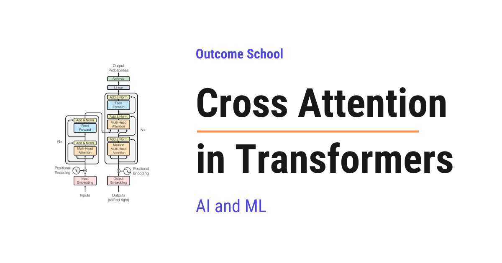
Cross Attention is a mechanism in Transformers where one sequence looks at a different sequence. In simple words, one sequence asks the questions, and the other sequence provides the answers.
In this blog, we will learn about Cross Attention in Transformers. We will understand what it is, how it works step by step, how it is different from Self Attention, and where it is used.
We will cover the following:
- What is Cross Attention?
- Why do we need Cross Attention?
- Query, Key, and Value in Cross Attention
- Self Attention vs Cross Attention
- Step-by-step working of Cross Attention
- A simple example walk-through
- Where Cross Attention is used
- Importance of Cross Attention
Let's get started.
What is Cross Attention?
Cross Attention is a mechanism where one sequence looks at a different sequence, using its own Queries against the Keys and Values of the other sequence.
In simple words, Cross Attention = Cross + Attention. The word "Cross" means the information crosses over from one sequence to another. The word "Attention" means the model decides how much it should focus on each part of the other sequence.
So, one sequence asks the questions, and a different sequence provides the answers.
Why do we need Cross Attention?
The best way to learn this is by taking an example.
Suppose we want to translate the English sentence "How are you" into Spanish. The Spanish translation is "Cómo estás".
Now, the question is: when the model is generating the Spanish word Cómo, how does it know that Cómo should mean How?
The model must look at the original English sentence to figure this out. It must look at the input ("How are you") while it is generating each word of the output ("Cómo estás").
So, we now have two sequences:
- The input sequence: "How are you" (3 words)
- The output sequence: "Cómo estás" (2 words)
Notice that the two sequences do not even have the same number of words. The English sentence has three words, but the Spanish translation has only two. This happens all the time in real life, and Cross Attention handles it naturally.
The output sequence must constantly look at the input sequence to produce the correct translation. The Spanish word being generated must attend to the most relevant English word.
This is exactly what Cross Attention does. The output sequence attends to the input sequence. The two sequences are different, but one looks at the other. Since the attention crosses from one sequence to another, we call it Cross Attention.
For the sake of understanding, let's take an analogy.
Suppose we are a student writing an exam answer. We have our own thoughts in our head (this is one sequence). We also have a reference book open on the table (this is another sequence). While writing each line of our answer, we look at our own thoughts (Query) and check the reference book (Key and Value) to pick up the relevant information.
That is exactly what Cross Attention does in a model. One sequence is reading from another sequence.
So, Cross Attention lets the output sequence read from the input sequence at every step. Now, let's understand how it does this using Query, Key, and Value.
Query, Key, and Value in Cross Attention
For each word the decoder is generating, Cross Attention needs to answer two questions:
- Which tokens of the input sequence are important for me?
- How much should I focus on each of them?
To answer these questions, we create three vectors:
- Query (Q): what the decoder is looking for at the current step.
- Key (K): what each input token offers.
- Value (V): the actual information each input token carries.
The word "Cross" in Cross Attention comes from one very important fact:
Query comes from one sequence, and Key and Value come from a different sequence.
This is what makes it "Cross" Attention. The two sequences are different, but one is attending to the other.
In simple words, if our input is "How are you" and our output is "Cómo estás", then:
- The Query comes from the decoder side, which is generating "Cómo estás" (the output sequence).
- The Key and Value come from "How are you" (the input sequence).
Note: This is the key difference between Self Attention and Cross Attention. In Self Attention, all three (Q, K, V) come from the same sequence. In Cross Attention, Q comes from one sequence, while K and V come from a different sequence.
Self Attention vs Cross Attention
Let me tabulate the differences between Self Attention and Cross Attention for your better understanding.
| Aspect | Self Attention | Cross Attention |
|---|---|---|
| Source of Query (Q) | Same sequence | Output sequence (decoder) |
| Source of Key (K) | Same sequence | Input sequence (encoder) |
| Source of Value (V) | Same sequence | Input sequence (encoder) |
| Masking | Usually masked in the decoder | Not masked |
| Attention matrix shape | Square (N x N) | Rectangular (output length x input length) |
| Purpose | Understand relationships within one sequence | Connect information from two different sequences |
| Common use | Encoder layers, decoder self-attention | Encoder-decoder bridge, multi-modal models |
A few of these differences are very important, so let's understand them one by one. Do not worry, we will learn about each of them now.
First, the decoder of a Transformer uses both types of attention. It first uses Self Attention to look at the words it has already generated. Then it uses Cross Attention to look at the encoder's output. So, Cross Attention does not replace Self Attention. They work together inside the decoder.
Second, Cross Attention is not masked. In the decoder's Self Attention, a word is not allowed to look at the future words, because the model has not generated them yet. But in Cross Attention, the whole input sentence is already known. So, every output word is allowed to look at every input word, with no restriction.
Third, the Key and Value are computed only once. The encoder reads the input sentence a single time and creates the Key and Value. The decoder then reuses the same Key and Value for every output word it generates. This makes Cross Attention very efficient.
Now, we have understood the difference. Let's see how Cross Attention actually works.
Step-by-step working of Cross Attention
Now, it's time to learn the exact steps of Cross Attention.
The classic place where Cross Attention is used is the original Transformer from the paper "Attention Is All You Need". The Transformer has two parts:
- The Encoder: reads the input sequence and creates a rich representation of it.
- The Decoder: generates the output sequence, one token at a time.
We have a detailed blog on Encoder vs Decoder in Transformers that explains how these two parts differ.
Inside the decoder, there are actually two attention steps. First, the decoder uses Self Attention to look at the words it has already generated. Then, it uses Cross Attention to look at the encoder's output. Here, we are focusing on the second step, the Cross Attention.
So, here comes Cross Attention to the rescue. It is the bridge between the encoder and the decoder.
Step 1: The encoder reads the input sequence and produces a set of vectors. From these vectors, we create the Key (K) and the Value (V).
- K = Encoder Output x W_K
- V = Encoder Output x W_V
The encoder does this only once. The same Key and Value are then reused for every token the decoder generates. This is what makes Cross Attention efficient.
Step 2: The decoder takes the tokens generated so far and produces its own hidden states. From these hidden states, we create the Query (Q).
- Q = Decoder Hidden State x W_Q
Here, W_Q, W_K, and W_V are weight matrices that the model learns during training.
Step 3: We compute the dot product of Q with the transpose of K. This is a matrix multiplication that gives us the attention scores. We use the transpose so that the shapes align correctly for the multiplication.
- Scores = Q . K^T
The score tells us how much each decoder token should attend to each encoder token. A higher score means a stronger match between the Query of a decoder token and the Key of an encoder token.
Step 4: We scale the scores by dividing them by the square root of the dimension of the Key vectors. Here, d_k is the dimension of the Key vector.
- Scaled Scores = (Q . K^T) / sqrt(d_k)
This scaling is done to keep the numbers in a stable range so that the softmax does not produce extreme values. Without this scaling, the gradients can become very small during training. We have a detailed blog on the Math behind √dₖ Scaling Factor in Attention that explains the math behind it.
Step 5: We apply softmax on the scaled scores. This converts the scores into probabilities. Every row of the matrix now sums to 1.
- Attention Weights = softmax((Q . K^T) / sqrt(d_k))
These weights tell us, for every decoder token, how much attention it should pay to every encoder token.
Step 6: We multiply the attention weights by the Value matrix V. This gives us the final output.
- Output = Attention Weights . V
The output is a new vector for each decoder position, now enriched with the relevant information from the encoder. The decoder uses this vector to decide the next word it should generate.
So, the full Cross Attention formula is:
Attention(Q, K, V) = softmax((Q . K^T) / sqrt(d_k)) . V
Notice that the formula itself is exactly the same as Self Attention. The difference is not in the math. The difference is in where Q, K, and V come from. In Cross Attention, Q comes from the decoder, while K and V come from the encoder. We have also seen the other differences earlier: Cross Attention is not masked, and its attention matrix is rectangular, because the two sequences can have different lengths.
Here, we can visualize the full flow of Cross Attention as below:
Encoder Output Decoder Hidden State
(Input Sequence) (Output Sequence)
| |
+-----+-----+ ↓
↓ ↓ Q
V K |
| | |
| +-----------+-----------+
| |
| ↓
| Q . K^T
| |
| ↓
| Divide by sqrt(d_k)
| |
| ↓
| Softmax
| |
| ↓
| Attention Weights
| |
+-----------+-----------+
|
↓
Multiply
|
↓
Output
Here, we can see that Q comes from the decoder, while K and V come from the encoder. Then Q and K are used to compute the attention weights, and V is used to compute the final output.
A simple example walk-through
Let's take a small example to make this concrete.
Suppose we want to translate the English sentence "How are you" into Spanish: "Cómo estás".
The decoder produces the Spanish words one at a time. It has already produced the first word, Cómo. Now, let's see how it predicts the next word. It does not know that word yet.
Step 1: The encoder produces a Key (K) and a Value (V) for every English token.
- K for
How, K forare, K foryou - V for
How, V forare, V foryou
These Keys and Values are created only once. The decoder reuses them at every step.
Step 2: The decoder looks at what it has produced so far (Cómo) and creates a Query (Q) for the next word.
Step 3: We take this Query and compute the dot product with the Key vectors of all three English tokens: How, are, and you. This gives us three scores.
Step 4: We scale these scores by sqrt(d_k).
Step 5: We apply softmax to get the attention weights. Just for the sake of understanding, let's say the result is:
- Weight for
How= 0.050 - Weight for
are= 0.500 - Weight for
you= 0.450
So, the decoder is paying 5% attention to How, 50% to are, and 45% to you. It is focusing on are and you.
Step 6: We combine the Value vectors using these weights. This gives us an output vector.
- Output = 0.050 x V(
How) + 0.500 x V(are) + 0.450 x V(you)
This output vector carries the most relevant English information for the next word.
Step 7: Finally, the decoder uses this output vector to predict the next word. It gives a score to every word in its Spanish vocabulary and picks the most likely one. Just for the sake of understanding, let's say the probabilities are:
estás= 0.70gracias= 0.20Hola= 0.10
The word estás has the highest probability. So, the decoder predicts estás as the next word. This makes sense, because the decoder was focusing on are and you, and the single Spanish word estás carries the meaning of both of them.
The decoder then adds estás to the output and repeats the whole process to predict the next word, until the sentence is complete.
If we collect the attention weights from every step, the full attention matrix looks like below:
English (Encoder)
How are you
+---------+---------+---------+
Spanish Cómo | 0.800 | 0.100 | 0.100 |
(Decoder) +---------+---------+---------+
estás | 0.050 | 0.500 | 0.450 |
+---------+---------+---------+
Here, every row sums to 1 because of softmax. The numbers are just for the sake of understanding. Each row is one step of the output, and it tells us how much attention that step paid to every English word.
Notice that this matrix is not a square. It has 2 rows (one for every Spanish word) and 3 columns (one for every English word), because the two sequences have different lengths. This is a key sign of Cross Attention. In Self Attention, the matrix is always square, because a sequence attends to itself.
It works perfectly.
Where Cross Attention is used
Now, let's see where Cross Attention is used.
Cross Attention is not limited to translation. It is used in many modern AI systems.
- Encoder-Decoder Transformers: The original Transformer for machine translation, summarization, and question answering uses Cross Attention to connect the encoder and decoder.
- Stable Diffusion: In text-to-image models like Stable Diffusion, Cross Attention is used to condition image generation on a text prompt. The image features form the Query, and the text embeddings form the Key and Value. This is how the model "listens" to our prompt while drawing the image.
- Flamingo: A multi-modal model from DeepMind that uses Cross Attention to mix visual information with language. The text tokens form the Query, and the image features form the Key and Value.
- Whisper: OpenAI's speech-to-text model uses an encoder-decoder Transformer where Cross Attention helps the decoder attend over audio features.
- Multi-modal models in general: Whenever a model needs to combine two different types of information (text and image, audio and text, video and text, and etc.), Cross Attention comes into the picture.
So, now we know where we can use Cross Attention.
Importance of Cross Attention
Now, the question is: why is Cross Attention so important?
The answer is simple. Many real-world AI tasks involve two different sources of information, and we need to combine them in a smart way.
- In translation, we have the input language and the output language.
- In text-to-image, we have the text prompt and the image we are generating.
- In speech-to-text, we have the audio and the text.
Without Cross Attention, the decoder would have to guess what the input was about. With Cross Attention, the decoder can directly look at the encoder's output and pick the most relevant information for every step.
That's the beauty of Cross Attention. It lets one sequence guide the generation of another sequence.
This was all about Cross Attention in Transformers.
Now we must have understood what Cross Attention is, how it works step by step, how it is different from Self Attention, and where it is used.
Frequently Asked Questions
Does Cross Attention replace Self Attention in the decoder?
No. The decoder of a Transformer uses both. It first uses Self Attention to look at the words it has already generated. Then it uses Cross Attention to look at the encoder's output. They work together inside the decoder.
Is Cross Attention masked like decoder Self Attention?
No. Cross Attention is not masked. In the decoder's Self Attention, a word cannot look at future words because they are not generated yet. But in Cross Attention, the whole input sentence is already known, so every output word is allowed to look at every input word.
Is the Cross Attention formula different from the Self Attention formula?
No. The formula is exactly the same: softmax of Q times K transpose divided by sqrt(d_k), multiplied by V. The difference is in where Q, K, and V come from. In Cross Attention, Q comes from the decoder, while K and V come from the encoder.
Are the Key and Value recomputed for every output token in Cross Attention?
No. The encoder reads the input sentence a single time and creates the Key and Value. The decoder then reuses the same Key and Value for every output token it generates. This makes Cross Attention very efficient.
Why is the Cross Attention matrix not square?
The Cross Attention matrix is rectangular because the input and output sequences can have different lengths. Its shape is output length by input length. For example, "Cómo estás" attending to "How are you" gives 2 rows and 3 columns. In Self Attention, the matrix is always square.
Lesson 3.15
What is RoPE (Rotary Position Embedding)? The Math Behind It

RoPE (Rotary Position Embedding) is a way to give position information to a Transformer. It rotates the Query (Q) and Key (K) vectors by an angle that depends on the token's position, so that attention depends on the relative distance between tokens.
In this blog, we will learn about the math behind Rotary Position Embedding (RoPE) and why it is used in modern Large Language Models.
Today, we will cover the following topics:
- The Big Picture
- Why a Transformer Needs Position Information
- Older Approaches and Their Problems
- The Core Idea Behind RoPE
- The 2D Rotation Math
- How RoPE Is Applied to Q and K
- Why the Dot Product Captures Relative Position
- A Small Numeric Example
- Real-World Use Cases
- Quick Summary
Let's get started.
The Big Picture
Before we go into the details, let's understand the big picture.
A Transformer reads all the tokens in a sentence at the same time. It does not know which word came first and which came last. So, we have to give it position information separately. RoPE is a clever way to do that. Instead of adding a position vector, RoPE rotates the Query and Key vectors based on their position. After the rotation, the dot product between any two tokens automatically reflects the relative distance between them.
In simple words:
RoPE = Rotate the Q and K vectors by an angle that depends on the token's position.
This makes the attention score depend only on the relative distance between two tokens, which is exactly what we want.
We have a detailed blog on Math Behind Attention: Q, K, V that explains how Q, K, and V are used inside attention.
Why a Transformer Needs Position Information
A Transformer processes all the tokens in a sentence in parallel. It does not read them one by one like we do.
We have a detailed blog on Transformer Architecture that explains how a Transformer works end to end.
Let's see why this is a problem.
Consider these two sentences:
- "The cat chased the dog."
- "The dog chased the cat."
Both sentences contain the exact same words. The only difference is the order. To us, the meaning is completely different. But, to a raw Transformer, both look the same. It has no idea who chased whom.
We need to inject position information into the model so that it knows the order of the words.
Older Approaches and Their Problems
There are two well-known older approaches to add position information.
Approach 1: Sinusoidal Positional Encoding. This is the original method from the "Attention Is All You Need" paper. We compute a fixed vector for each position using sine and cosine functions. We add this vector to the token embedding before feeding it into the model.
Approach 2: Learned Positional Embeddings. Instead of using a fixed formula, we let the model learn a separate embedding for each position. We add this learned vector to the token embedding.
Both approaches share two big problems.
- They use addition. The position vector is added to the token embedding. This mixes position information into the meaning of the word, and the two end up competing inside the same vector.
- They do not encode relative distance. With absolute positional embeddings, the model has to learn from scratch how every pair of positions relates. There is no built-in structure that says "positions 5 and 10" have the same relationship as "positions 105 and 110".
- They struggle with longer sequences. If the model was trained on sequences of length 2048 and we suddenly give it 8192 tokens at inference time, learned embeddings have nothing to fall back on. Sinusoidal encoding can technically extrapolate, and the original "Attention Is All You Need" paper actually proposed it partly for this reason. But, later research showed that this property does not hold up well in practice.
We need a smarter way. We need a method that handles position more cleanly and works at any sequence length.
So, here comes RoPE to the rescue.
The Core Idea Behind RoPE
The full form of RoPE is Rotary Position Embedding.
Let's decompose the name:
RoPE = Rotary + Position + Embedding.
- Position means we are encoding the position of a token.
- Embedding means we are doing this inside the vector space the model uses. Learn more about Embeddings: Embeddings in Machine Learning
- Rotary means we are using rotation as the encoding mechanism.
The idea is simple. Instead of adding a position vector to the token embedding, we rotate the Query and Key vectors by an angle that depends on the token's position. The further along a token is in the sequence, the more we rotate its vector.
The magic is in the dot product. When we compute the attention score Q · K, the rotations combine in a way that the result depends only on the difference in positions between the two tokens, not on their absolute positions.
So, RoPE gives us relative position information for free through the dot product.
Let's take a real-world analogy. Think of each pair of dimensions inside a token's vector as a clock hand. (We will see in a later section that the vector is split into many such pairs, each acting as its own clock at its own speed.) A token at position 1 rotates the hand to "1 o'clock". A token at position 5 rotates it to "5 o'clock". When we compare two tokens, we are not asking "where does each hand point?" - we are asking "how many hours apart are the two hands?". That is exactly the relative-position information attention needs.
The 2D Rotation Math
To understand RoPE, we must first understand how rotation works in 2D.
Suppose we have a 2D vector v = [x, y]. We want to rotate it by an angle θ (theta). The new vector v' is:
x' = x * cos(θ) - y * sin(θ)
y' = x * sin(θ) + y * cos(θ)
This is the standard 2D rotation. We can write it as a matrix multiplication:
| x' | | cos(θ) -sin(θ) | | x |
| | = | | * | |
| y' | | sin(θ) cos(θ) | | y |
That is the rotation matrix. It rotates any 2D vector by angle θ while keeping its length unchanged.
Here is a simple ASCII diagram showing the rotation.
y
|
| v'
| /
| /
| /
| / θ
|/___________ v
+------------- x
Here, the vector v starts along the x-axis. After rotating by angle θ, it becomes v'. The length of the vector stays the same. Only the direction changes.
How RoPE Is Applied to Q and K
Now, let's see how this rotation is used inside attention.
We have a Query vector Q and a Key vector K. These are not 2D vectors. They have many dimensions, often 64 or 128.
RoPE works on these high-dimensional vectors by splitting them into pairs of 2D vectors. If Q has 64 dimensions, we treat it as 32 pairs of 2D vectors. Each pair gets its own rotation.
For a token at position m, RoPE rotates each pair by an angle m * θ_i, where θ_i is a fixed frequency that depends on which pair we are looking at.
Here is a simple ASCII diagram showing how a Q vector with d = 8 dimensions is split and rotated.
Q = [ q_1, q_2 | q_3, q_4 | q_5, q_6 | q_7, q_8 ]
\______/ \______/ \______/ \______/
pair 1 pair 2 pair 3 pair 4
| | | |
v v v v
rotate rotate rotate rotate
by m*θ_1 by m*θ_2 by m*θ_3 by m*θ_4
(fastest) (slowest)
Here, the 8-dimensional vector is split into 4 pairs. Each pair is rotated by its own angle, and the rotation amount also scales with the token's position m.
The standard formula for the frequencies is:
θ_i = 10000^(-2(i-1)/d) for i = 1, 2, ..., d/2
Here, d is the per-head dimension. For the first pair this gives θ_1 = 1 (largest, fastest rotation). For the last pair, with d = 128 (a common per-head size), this gives θ_(d/2) ≈ 0.0001 (smallest, slowest rotation). So, low-index pairs rotate fast and high-index pairs rotate slowly. This is similar to how sinusoidal positional encoding uses many frequencies, but here the frequencies are applied as rotations, not as added vectors.
Note: This formula is the exact knob that long-context techniques like YaRN and NTK-aware scaling tune. They modify these frequencies so a model trained on shorter sequences can handle much longer ones at inference.
After applying RoPE, the rotated Q for a token at position m is R_m * Q, where R_m is the rotation matrix for position m. Similarly, the K vector at position n gets its own rotation R_n * K.
Note: The original RoPE paper presents the splitting as consecutive pairs (q_1, q_2), (q_3, q_4), ... as shown above. In real-world implementations like LLaMA and Mistral, the splitting is done as (q_i, q_(i + d/2)) - the first half of the vector paired with the second half. Both schemes are mathematically equivalent. They are just a permutation of dimensions, so the explanation here applies to either.
Note: RoPE is applied only to the Query and Key vectors. The Value vector V is left untouched. This is because the relative-position property we want comes from the Q · K dot product. The V vector is just the content being weighted by attention scores, so it does not need any position information.
Why the Dot Product Captures Relative Position
This is where the magic happens.
When we compute the attention score between a query at position m and a key at position n, we calculate:
score = (R_m * Q) · (R_n * K)
Because of how rotation matrices work, this expression simplifies to:
score = Q · (R_(n-m) * K)
This works because rotation matrices are orthogonal, which means R_m^T = R_(-m). The intuition is simple: rotating by -m undoes a rotation by m. So, rotating by -m and then by n combines into a single rotation by n - m. The full derivation is just one line of matrix algebra:
(R_m * Q) · (R_n * K) = Q^T * R_m^T * R_n * K
= Q^T * R_(-m) * R_n * K
= Q^T * R_(n-m) * K
= Q · (R_(n-m) * K)
The m rotation on Q effectively cancels, leaving a single net rotation by n - m on K.
The score depends only on n - m, which is the relative distance between the two tokens. The absolute positions m and n disappear from the formula.
This is the beauty of RoPE. The model does not see "token at position 5" and "token at position 12". Instead, it sees "these two tokens are 7 positions apart". This relative view of position is exactly what attention needs.
Let's see why this matters with a concrete example. Consider these two sentences:
- "The cat sat on the mat."
- "Yesterday, the cat sat on the mat."
In sentence 1, "cat" is at position 2 and "mat" is at position 6. The distance between them is 4.
In sentence 2, "cat" is at position 3 and "mat" is at position 7. The distance is again 4.
The relationship between "cat" and "mat" is identical in both sentences. They are 4 words apart, and the meaning of how they relate is the same. The fact that the whole sentence shifted by one word does not change anything about how "cat" relates to "mat".
Now, what if we used absolute positions instead? The model would have to separately learn:
- How (cat at pos 2) relates to (mat at pos 6)
- How (cat at pos 3) relates to (mat at pos 7)
- How (cat at pos 100) relates to (mat at pos 104)
- And so on, for every possible pair
That is wasteful. All of these are the same relationship - "two specific words, 4 positions apart". RoPE lets the model learn this once, and reuse it everywhere.
Going back to our clock analogy, when we look at two clock hands, we do not need to know what time each one shows individually. We only care about the angle between them. RoPE gives the model the same view of position.
Note: This relative-position property comes out of the math automatically. We did not design the model to learn relative positions. The rotation operation gives it to us for free.
A Small Numeric Example
Let's put this into perspective with a small example.
Suppose we have a 2D Query vector Q = [1, 0] for the token at position m = 1. Let θ = π / 4 (45 degrees).
The rotation matrix at position 1 is:
R_1 = | cos(π/4) -sin(π/4) | | 0.707 -0.707 |
| | = | |
| sin(π/4) cos(π/4) | | 0.707 0.707 |
The rotated Query is:
R_1 * Q = | 0.707 -0.707 | | 1 | | 0.707 |
| | * | | = | |
| 0.707 0.707 | | 0 | | 0.707 |
Now, suppose we have a Key vector K = [1, 0] at position n = 2. The rotation angle is 2 * π/4 = π/2.
R_2 = | cos(π/2) -sin(π/2) | | 0 -1 |
| | = | |
| sin(π/2) cos(π/2) | | 1 0 |
The rotated Key is:
R_2 * K = | 0 -1 | | 1 | | 0 |
| | * | | = | |
| 1 0 | | 0 | | 1 |
The attention score is the dot product:
score = (R_1 * Q) · (R_2 * K)
= 0.707 * 0 + 0.707 * 1
= 0.707
So, the score for two tokens at a relative distance of 1 is 0.707.
Now, let's verify the relative-position property. Let's pick a different pair with the same relative distance: m = 2, n = 3.
The rotated Query at position 2 uses the same R_2 matrix from before:
R_2 * Q = | 0 -1 | | 1 | | 0 |
| | * | | = | |
| 1 0 | | 0 | | 1 |
The rotated Key at position 3 uses angle 3 * π/4:
R_3 * K = | cos(3π/4) -sin(3π/4) | | 1 | | -0.707 |
| | * | | = | |
| sin(3π/4) cos(3π/4) | | 0 | | 0.707 |
The attention score:
score = (R_2 * Q) · (R_3 * K)
= 0 * (-0.707) + 1 * 0.707
= 0.707
The score is 0.707 again. The absolute positions changed from (1, 2) to (2, 3), but the relative distance stayed at 1, so the score stayed at 0.707. This is exactly the property RoPE was designed to give us.
Real-World Use Cases
RoPE has become the standard for positional encoding in modern Large Language Models. Let's see where RoPE is used in practice.
- LLaMA family. All LLaMA models from Meta use RoPE.
- Mistral and Mixtral. Both use RoPE for positional encoding.
- Qwen. Alibaba's Qwen models use RoPE.
- DeepSeek. DeepSeek models use RoPE as well.
- Gemma. Google's open-weight Gemma models use RoPE.
Note: RoPE is also the foundation for many long-context techniques. Methods like YaRN, Position Interpolation, and NTK-aware scaling all extend RoPE so that a model trained on, say, 4K tokens can be used on 32K or 128K tokens at inference time. None of this would be possible if we were still using learned positional embeddings.
Quick Summary
Let's recap what we have decoded:
- A Transformer reads all tokens in parallel. It does not naturally know the order of words, so we must inject position information.
- Older methods add a position vector to the token embedding. Sinusoidal encoding and learned embeddings lack built-in relative-distance structure and struggle with longer sequences.
- RoPE rotates the Q and K vectors instead of adding to them. The rotation angle depends on the token's position.
- The high-dimensional vector is split into pairs. Each pair is rotated by its own frequency.
- The dot product of two rotated vectors depends only on relative position. This gives us relative position information for free.
- No learned parameters. RoPE itself introduces no additional learned parameters, unlike learned positional embeddings.
- RoPE is the standard in modern LLMs. LLaMA, Mistral, Qwen, DeepSeek, and Gemma all use it.
- RoPE makes long-context extension possible. Techniques like YaRN and Position Interpolation rely on RoPE's structure.
This is how RoPE gives modern Large Language Models a clean, scalable, and elegant way to understand position.
Frequently Asked Questions
Is RoPE applied to the Value vector too?
No. RoPE is applied only to the Query and Key vectors, and the Value vector is left untouched. The relative-position property comes from the Q · K dot product. The Value vector is just the content being weighted by the attention scores, so it does not need any position information.
Does RoPE add any learned parameters to the model?
No. RoPE itself introduces no additional learned parameters. The rotation angles come from a fixed frequency formula and the token's position. This is different from learned positional embeddings, where the model learns a separate embedding for each position.
Can a model with RoPE handle longer text than it was trained on?
Yes, with the help of long-context techniques built on top of RoPE. Methods like YaRN, Position Interpolation, and NTK-aware scaling extend RoPE so that a model trained on, say, 4K tokens can be used on 32K or 128K tokens at inference time.
Does rotating the Query and Key vectors change their length?
No. A rotation keeps the length of the vector unchanged, and only its direction changes. RoPE uses this rotation as the encoding mechanism, instead of adding a position vector that mixes position into the meaning of the word.
Does it matter how the vector is split into pairs?
No. The original RoPE paper splits the vector into consecutive pairs, while implementations like LLaMA and Mistral pair the first half of the vector with the second half. Both schemes are mathematically equivalent, since they are just a permutation of dimensions.
Lesson 3.16
What is the Feed-Forward Network in LLMs and What Does It Do?

The Feed-Forward Network in LLMs is a simple neural network inside every Transformer layer. After attention lets the words gather information from each other, the Feed-Forward Network processes each word on its own.
In this blog, we will learn about Feed-Forward Networks in LLMs - understanding what they are, how they work inside the Transformer architecture, why every Transformer layer needs one, and what role they play in making Large Language Models so powerful.
When we read about Transformers, we always hear about the attention mechanism. But there is another equally important component that does a huge amount of work inside every Transformer layer - the Feed-Forward Network (FFN).
In fact, in most modern LLMs, the feed-forward network holds the majority of the model's parameters. If we think of attention as the component that figures out relationships between words, the feed-forward network is what stores and applies the actual knowledge.
When we hear "Feed-Forward Network", it sounds complex. But do not worry. If we break it down into its individual parts, every single piece is simple. Our goal is to explain feed-forward networks so clearly that by the end, we will be able to explain how they work to anyone.
We will cover the following:
- What is a Feed-Forward Network?
- Understanding Feed-Forward Networks with a Real-World Analogy
- Where Does the Feed-Forward Network Sit in a Transformer?
- How Does a Feed-Forward Network Work - Step by Step
- The Expand-then-Contract Pattern
- Why Does the FFN Expand and Then Contract?
- ReLU and Activation Functions
- What Does the Feed-Forward Network Actually Learn?
- How Much of the Model is the Feed-Forward Network?
- Feed-Forward Networks in Mixture of Experts
- Why Feed-Forward Networks Are So Important
Let's get started.
The Big Picture
Before we go into the details, let's understand the big picture.
A Feed-Forward Network (FFN) is a small neural network that sits inside every layer of a Transformer. After the attention mechanism figures out how words relate to each other, the feed-forward network takes each word's representation and processes it individually - refining it, enriching it, and adding knowledge to it.
In simple words: Feed-Forward Network = The knowledge store and refiner inside each Transformer layer.
Think of it like this. Imagine a team meeting where everyone discusses a project. This is attention - words talking to each other. After the meeting, each team member goes back to their own desk and uses their own expertise to refine their notes and add deeper insights. This is the feed-forward network - each word being processed individually using stored knowledge.
So, attention is about how words talk to each other. The feed-forward network is about how each word processes what it heard.
What is a Feed-Forward Network?
A Feed-Forward Network is the simplest type of neural network. The word "feed-forward" means data flows in only one direction - forward. It goes from input to output, passing through one or more layers in between, without ever looping back.
Let's break the name down:
Feed-Forward = Feed (pass data) + Forward (in one direction)
There are no loops, no cycles, and no going back. Data enters from one side and exits from the other. This is what makes it different from other types of neural networks like Recurrent Neural Networks (RNNs) where data can loop back on itself.
In its simplest form, a feed-forward network has an input layer where data comes in, a hidden layer where the actual processing happens, and an output layer where the result comes out.
Input Layer Hidden Layer Output Layer
[x1] ----\ [h1] ----\
\--> ----> [y1]
[x2] ------> [h2] ------> [y2]
/---> ----> [y3]
[x3] ----/ [h3] ----/
Here, each connection between the layers has a weight (a number). The network multiplies the input values by these weights, adds them up, and passes the result through an activation function to produce the output. We will learn about activation functions in a later section.
Note: In the Transformer's FFN, the structure is just two linear transformations with an activation function in between. The first linear transformation is the input-to-hidden step (W1), and the second one is the hidden-to-output step (W2), rather than distinct input, hidden, and output layers like traditional neural networks.
Understanding Feed-Forward Networks with a Real-World Analogy
The best way to learn this is by taking an example.
Let's say we have a factory that makes custom furniture.
The factory has three stages:
Stage 1 (Input): Raw wood planks arrive at the factory. These are our raw materials - the input.
Stage 2 (Hidden - Expand): The wood planks go to a large workshop where many specialists work. One specialist cuts the wood. Another one sands it. Another one carves patterns. Another one drills holes. Another one checks for quality. This workshop is much bigger than the input area because the factory needs many specialists to work on different aspects of the wood at the same time.
Stage 3 (Output - Contract): After all the specialists have done their work, the refined pieces are assembled back into a finished piece of furniture. The output is compact - a single, refined product.
This is exactly how the feed-forward network works in a Transformer.
Where Does the Feed-Forward Network Sit in a Transformer?
Every Transformer layer has two main sub-layers:
- Multi-Head Attention - where words look at each other to understand relationships
- Feed-Forward Network - where each word is processed individually to refine its representation
The data flows through them in order. First, the input passes through the attention mechanism. Then, the output of attention passes through the feed-forward network. Each sub-layer also has a residual connection (skip connection) and layer normalization around it.
Input
|
-----------------
| Multi-Head |
| Attention |
-----------------
|
Add & Layer Norm
|
-----------------
| Feed-Forward |
| Network |
-----------------
|
Add & Layer Norm
|
Output
This entire block is one Transformer layer. A typical LLM stacks many such layers on top of each other. For example, GPT-3 has 96 layers, and each layer has its own attention sub-layer and its own feed-forward network sub-layer. The diagram above shows the original Transformer's post-norm arrangement (layer normalization after each sub-layer). Modern LLMs like GPT and LLaMA typically use pre-layer normalization (LayerNorm before each sub-layer), which helps with training stability.
Now, there is an important difference between these two sub-layers. The attention mechanism processes all words together - it lets every word look at every other word. But the feed-forward network processes each word independently. The same feed-forward network is applied to each word's representation separately and independently. In practice, all tokens are processed in parallel (as a batched matrix multiplication), but the key point is that given the contextualized representations from attention, each token is processed independently by the FFN.
I will highly recommend reading our detailed blog on Transformer architecture that explains how all the pieces fit together.
How Does a Feed-Forward Network Work - Step by Step
Now, let's understand how the feed-forward network works step by step.
Each word's representation is a vector of numbers. The feed-forward network takes this vector and passes it through two linear transformations with an activation function in between.
Here is what happens:
Step 1: First linear transformation (Expand)
The input vector is multiplied by a weight matrix and a bias is added. This transforms the input from a smaller dimension to a much larger dimension.
hidden = input * W1 + b1
Here, we can see that the input is multiplied by the weight matrix W1 and a bias b1 is added. If the input dimension is 4096, the hidden dimension is typically 16384 (4 times larger).
Step 2: Activation function
The result from Step 1 is passed through an activation function like ReLU or GELU. The activation function introduces non-linearity - meaning it allows the network to learn complex patterns that a simple linear transformation cannot capture. We will learn more about this in the activation function section.
activated = ReLU(hidden)
Step 3: Second linear transformation (Contract)
The activated output is multiplied by another weight matrix and a bias is added. This transforms the data back from the larger dimension to the original smaller dimension.
output = activated * W2 + b2
Here, W2 is the weight matrix of the second layer and b2 is the bias. The output has the same dimension as the input.
Putting it all together:
FFN(x) = ReLU(x * W1 + b1) * W2 + b2
Here, we can see the complete feed-forward network in one line. Two matrix multiplications, one activation function, and two bias additions. It is that simple.
The Expand-then-Contract Pattern
Now, let's understand a very important pattern in the FFN - the expand-then-contract pattern.
The input has a certain dimension (let's call it d_model). The hidden layer expands this to a much larger dimension (typically 4 * d_model). Then the output contracts it back to the original dimension d_model.
Let's put this into perspective with real numbers:
- In GPT-3 (175B),
d_model= 12288. The hidden layer expands this to 4 * 12288 = 49152. Then it contracts back to 12288. - In LLaMA 2 (7B),
d_model= 4096. The hidden layer expands this to approximately 11008 (not exactly 4x because LLaMA 2 uses SwiGLU, which we will learn about shortly). Then it contracts back to 4096.
Input (d_model) Hidden (expanded) Output (d_model)
[4096 dims] --------> [11008 dims] --------> [4096 dims]
Expand Contract
So, the data starts small, becomes big in the middle, and becomes small again at the end.
This was all about the expand-then-contract pattern. Now, let's understand why the FFN does this.
Why Does the FFN Expand and Then Contract?
Now, a natural question arises - why does the feed-forward network expand the dimension and then shrink it back? Why not just keep the same size throughout?
The answer is simple: the larger hidden layer gives the network more room to think.
Think of it like solving a math problem. We start with a small problem written on a sticky note (input). We need a large whiteboard (expanded hidden layer) to work through all the intermediate steps. Once we have the answer, we write it back on a small sticky note (output).
The expansion gives the network more space to extract patterns and transform the data. The contraction then compresses the result back to the size that the rest of the model expects.
This is a key design choice in Transformers. Without this expansion, the network would not have enough space to do the complex processing it needs.
ReLU and Activation Functions
We mentioned that an activation function is applied between the two linear layers. But what is an activation function and why do we need it?
Without an activation function, the feed-forward network would just be two matrix multiplications stacked together. And two linear operations combined are still a linear operation. This means the network could only learn simple, straight-line patterns - which is not useful for understanding language.
So, here comes the activation function to the rescue.
The activation function adds non-linearity, which allows the network to learn complex, curved, and irregular patterns.
ReLU (Rectified Linear Unit) is one of the simplest activation functions:
ReLU(x) = max(0, x)
It does one simple thing: if the number is positive, keep it as it is. If the number is negative, replace it with zero.
For example:
- ReLU(5) = 5 (positive, keep it)
- ReLU(-3) = 0 (negative, replace with zero)
- ReLU(0) = 0
This simple operation is very powerful. By setting negative values to zero, ReLU creates sparsity - meaning many neurons in the hidden layer become inactive (output zero) for any given input. This sparsity helps the network specialize. Different neurons activate for different types of inputs, allowing different parts of the network to store different knowledge.
Note: Smoother activation functions like GELU reduce this explicit sparsity effect, but they tend to improve overall model performance.
GELU (Gaussian Error Linear Unit) is a smoother version of ReLU that is used in many modern LLMs like GPT and BERT. Instead of making a hard cutoff at zero, GELU gradually reduces small negative values. The idea is the same - it adds non-linearity - but it does so more smoothly.
SwiGLU is another activation function used in newer models like LLaMA. SwiGLU uses a gating mechanism that lets the network learn which parts of the information to keep and which to suppress. In practice, models using SwiGLU tend to perform better than those using ReLU or GELU.
Very important: SwiGLU changes the structure of the FFN. Instead of two weight matrices (W1 and W2), SwiGLU uses three weight matrices (W1, V, and W2). Do not worry if the formula below feels complex - the key takeaway is that SwiGLU adds a gating mechanism using an extra matrix, and the rest is just how the pieces connect. The formula becomes:
SwiGLU(x) = (Swish(x * W1) ⊙ (x * V)) * W2
Here, * represents matrix multiplication and ⊙ represents element-wise (Hadamard) multiplication. The input x is multiplied by two separate matrices (W1 and V), and their results are combined using element-wise multiplication (⊙). Because there is a third matrix, the total number of parameters would increase if we kept the same hidden dimension. So, the hidden dimension is reduced from 4x to roughly 2.7x to keep the parameter count similar. For example, LLaMA 2 7B has d_model = 4096 and a hidden dimension of 11008, which gives us 11008 / 4096 = approximately 2.69x instead of 4x.
Note: Larger variants like LLaMA 2 70B do not strictly follow the 2.7x rule. The 70B model has a hidden dimension of 28672 with d_model = 8192, giving a ratio of about 3.5x. The general principle of reducing from 4x to compensate for the third matrix holds, but the exact ratio varies across model sizes.
Note: The choice of activation function has evolved over time. The original Transformer paper used ReLU. Then GPT and BERT moved to GELU. And now many newer models use SwiGLU. The core idea remains the same - add non-linearity - but the specific function can be chosen based on our use case.
What Does the Feed-Forward Network Actually Learn?
Now that we have understood how activation functions work and why they matter, let's move to a deeper question. If attention learns relationships between words, what does the feed-forward network actually learn?
Research has shown that a large portion of the model's stored knowledge resides in the feed-forward network weights. The FFN memorizes facts, patterns, and associations from the training data.
Let's say we have a library. The attention mechanism is like a librarian who finds which books are related to each other and puts them together on a table. The feed-forward network is like the actual books on the shelves - they contain the knowledge.
Without the books, the librarian has nothing to work with. Without the librarian, the books just sit on the shelves unused. Both are needed.
Now, think of each neuron in the hidden layer as a pattern detector. Some neurons activate when they see patterns related to geography (like "Paris is the capital of..."). Other neurons activate for patterns related to grammar (like verb tenses). Others activate for patterns related to math, science, coding, and so on.
Let's say the sentence is "The capital of France is". After attention processes this sentence, each word has context from the other words. Now, the feed-forward network takes the representation of the last token and applies its stored knowledge. Certain neurons in the hidden layer activate strongly because they recognize the pattern "capital of France". These activated neurons then contribute to producing an output that points towards "Paris".
Note: Just for the sake of understanding, we are simplifying here. In reality, the knowledge is distributed across many neurons and many layers, not stored in one single neuron. But the core idea is the same - the FFN is where the model's learned knowledge lives.
In simple words:
- Attention figures out which words are relevant to each other (relationships)
- Feed-Forward Network applies stored knowledge to each word's enriched representation (facts and patterns)
This is why feed-forward networks hold the majority of the model's parameters. They need to store a vast amount of knowledge from the training data.
How Much of the Model is the Feed-Forward Network?
Let's put this into perspective with real numbers.
In a standard Transformer layer, the feed-forward network uses roughly two-thirds (about 66%) of all the parameters in that layer. The attention mechanism uses the remaining one-third.
Here is why. In standard multi-head attention (without parameter sharing), the main parameter matrices are for Query (Q), Key (K), Value (V), and Output (O). Each of these is of size d_model x d_model. So attention has approximately 4 * d_model * d_model parameters.
In the feed-forward network, we have two weight matrices: W1 of size d_model x 4*d_model and W2 of size 4*d_model x d_model. So the FFN has approximately 2 * d_model * 4*d_model = 8 * d_model * d_model parameters.
Attention parameters: ~4 * d_model^2
FFN parameters: ~8 * d_model^2
FFN / Total = 8 / (8 + 4) = 8 / 12 = ~66%
This means that in a model like GPT-3 with 175 billion parameters, roughly 110-115 billion parameters are in the feed-forward networks across all layers (the rest goes to embeddings, layer norms, and the final projection head). That is a massive knowledge store.
Note: In modern models that use Grouped-Query Attention (GQA) or Multi-Query Attention (MQA), the K and V matrices are smaller than Q and O. This means the attention parameters are fewer, and the FFN's share becomes even larger than 66%.
Feed-Forward Networks in Mixture of Experts
Now that we have understood how much of the model is the feed-forward network, let's understand how some modern models use multiple feed-forward networks instead of one.
In standard Transformers, every token passes through the same feed-forward network in each layer. But in Mixture of Experts (MoE) models, the single feed-forward network is replaced with multiple feed-forward networks - each one called an expert.
A small router network decides which expert(s) each token should be sent to. Only a few experts (typically 2 out of 8 or 64) are activated for each token. The rest stay idle.
Token
|
[Router]
/ | \
/ | \
[Expert 1] [Expert 2] ... [Expert N]
(FFN) (FFN) (FFN)
\ |
\ |
Selected Outputs Combined
Instead of one large feed-forward network trying to be good at everything, we have many smaller feed-forward networks that can specialize in different types of patterns. The router learns which expert is best for each type of input.
The result is that we can have a model with a huge total number of parameters for knowledge capacity, while only using a fraction of them for each token, keeping the compute cost low.
We have a detailed blog on Mixture of Experts that explains the complete architecture.
Why Feed-Forward Networks Are So Important
Now that we have understood how feed-forward networks work, let's understand why they are so important inside LLMs.
Without the FFN, the model would have no knowledge. The attention mechanism figures out relationships between words. But the actual knowledge - facts, patterns, grammar rules, reasoning patterns - is stored in the parameters of the feed-forward network. The model would understand word relationships but would have no knowledge to apply.
The FFN refines what attention discovers. After attention processes the relationships between words, the feed-forward network refines each word's representation. It takes the "who is related to whom" signal from attention and adds "what do I know about this" from its stored knowledge.
Without the activation function, the model could not learn complex patterns. Without the activation function in the FFN, the entire Transformer would be a series of linear operations. Linear operations alone cannot model the complexity of language. The FFN's activation function is what gives the model the ability to learn complex, non-linear patterns.
The FFN holds the majority of the model's parameters. About two-thirds of a Transformer's parameters are in the feed-forward networks. This means the FFN is where the model's capacity primarily lives. When we say a model has 70 billion parameters, about 46 billion of those are in the feed-forward networks.
The FFN processes each token independently, making it highly efficient. While attention requires all tokens to interact with each other, the FFN processes each token on its own. This makes the FFN highly parallelizable and computationally efficient.
In simple words: Attention moves information across tokens. FFN transforms information within a token.
Now, we have understood why feed-forward networks are so important. Without them, LLMs would have no place to store their knowledge.
Quick Summary
Let's recap what we have learned:
- Feed-Forward Network (FFN) is a simple neural network inside every Transformer layer that processes each word independently after the attention mechanism.
- Feed-Forward means data flows in only one direction - from input to output, with no loops.
- The FFN has two linear layers with an activation function in between. The first layer expands the dimension (typically to 4x), and the second layer contracts it back to the original size.
- The expand-then-contract pattern gives the network a larger "thinking space" to process information before compressing it back.
- Activation functions (ReLU, GELU, SwiGLU) add non-linearity, allowing the network to learn complex patterns.
- The FFN acts as a knowledge store, memorizing facts, patterns, and associations from training data.
- About 66% of a Transformer's parameters are in the feed-forward networks, making them the largest component.
- In Mixture of Experts models, the single FFN is replaced with multiple specialized FFNs (experts) with a router selecting which ones to activate.
- Attention is about relationships between words. FFN is about knowledge applied to each word individually.
Frequently Asked Questions
What is the difference between attention and the Feed-Forward Network in a Transformer?
Attention moves information across tokens, while the Feed-Forward Network transforms information within a token. Attention lets every word look at every other word to figure out relationships. The FFN then takes each word's representation on its own and applies stored knowledge to refine it.
Does the Feed-Forward Network look at other tokens?
No. The Feed-Forward Network processes each token independently. The same FFN is applied to each word's representation separately. In practice, all tokens are processed in parallel as a batched matrix multiplication, which makes the FFN highly parallelizable and computationally efficient.
Why can't we remove the activation function from the FFN?
Without the activation function, the FFN would just be two matrix multiplications stacked together, and two linear operations combined are still a linear operation. The network could then only learn simple, straight-line patterns. The activation function adds non-linearity, which lets the model learn complex patterns in language.
Why is the hidden dimension smaller than 4x in models that use SwiGLU?
SwiGLU uses three weight matrices instead of two, so keeping the same hidden dimension would increase the total number of parameters. To keep the parameter count similar, the hidden dimension is reduced from 4x to roughly 2.7x. For example, LLaMA 2 7B has a hidden dimension of 11008 with d_model of 4096.
Does Grouped-Query Attention change how much of the model is the FFN?
Yes. With Grouped-Query Attention or Multi-Query Attention, the K and V matrices are smaller than Q and O. This means the attention parameters are fewer, so the FFN's share of the parameters becomes even larger than the usual 66%.